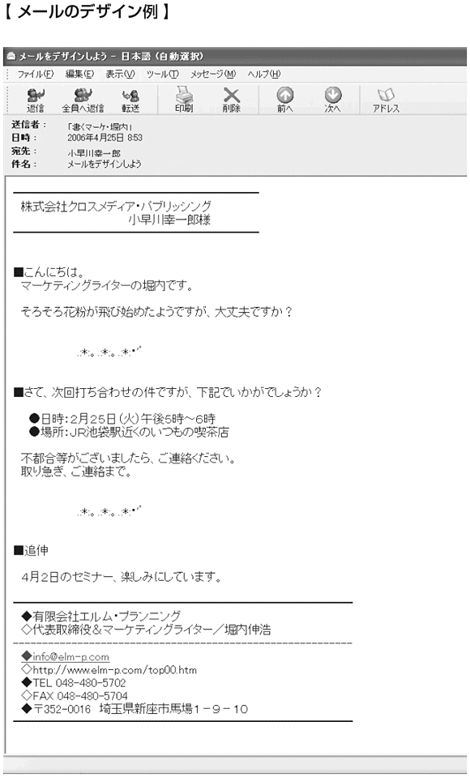

🏠
日
月
縦書き／横書き
| あたりまえだけどなかなか書けない 文章のルール (アスカビジネス) | |
| 堀内 伸浩 | |
| クロスメディアパブリッシング (2006) | |
この本は縦書きでレイアウトされています。
また、ご覧になる機種により、表示の差が認められることがあります。
また、ご覧になる機種により、表示の差が認められることがあります。
書いて書いて書きまくれば、あなたは必ず評価される！
できる人は
「書く力」でアピールする
「正確に物事を伝える」「相手の心をつかむ」文章が書けるようになる本
できる人は
「書く力」でアピールする
「正確に物事を伝える」「相手の心をつかむ」文章が書けるようになる本
まえがき
ちょっと思い出してみてください。
あなたは学校で、文章の書き方について、きちんと習った記憶がありますか？
「そういえば、作文の時間はあったけど、それは原稿用紙の使い方のような話が中心で、文章の書き方については、きちんと習った記憶がないな～」
こんな人がほとんどだと思います。私自身もそうでしたが、それでも私が社会人になった当時（約20年前）は、別に仕事に支障はありませんでした。当時のコミュニケーション手段というのは電話がメインで、仕事で文章を書く機会はほとんどなかったからです。
しかし、電子メールやインターネットの普及によって、状況が一変しました。
今では、プライベートなメールまで含めれば、おそらくどんな職業の人でも、何らかの文章を書かない日はないといっても過言ではないでしょう。
ところが、世の中には「書くのは苦手で......」という人が非常に多いんですね。
それもそのはず。冒頭で書いたように、きちんとした文章の書き方を学校で習っていないために、自分の書く文章に自信が持てないからです。
そこで本書では、私の15年のライター経験から、文章を書くうえで最低これだけは知っておいた方がいいというルールを101項目ピックアップしました。ちなみに、
これ１冊あれば、あなたはもう文章のことで悩むことはなくなるはずです。
そして、自分の文章に自信が持てるようになることでしょう。
ちょっと思い出してみてください。
あなたは学校で、文章の書き方について、きちんと習った記憶がありますか？
「そういえば、作文の時間はあったけど、それは原稿用紙の使い方のような話が中心で、文章の書き方については、きちんと習った記憶がないな～」
こんな人がほとんどだと思います。私自身もそうでしたが、それでも私が社会人になった当時（約20年前）は、別に仕事に支障はありませんでした。当時のコミュニケーション手段というのは電話がメインで、仕事で文章を書く機会はほとんどなかったからです。
しかし、電子メールやインターネットの普及によって、状況が一変しました。
今では、プライベートなメールまで含めれば、おそらくどんな職業の人でも、何らかの文章を書かない日はないといっても過言ではないでしょう。
ところが、世の中には「書くのは苦手で......」という人が非常に多いんですね。
それもそのはず。冒頭で書いたように、きちんとした文章の書き方を学校で習っていないために、自分の書く文章に自信が持てないからです。
そこで本書では、私の15年のライター経験から、文章を書くうえで最低これだけは知っておいた方がいいというルールを101項目ピックアップしました。ちなみに、
・１から12までは「文章を書くにあたっての心構えと準備について」
・13から30までは「これだけは知っておきたい日本語文法について」
・31から37までは「敬語の正しい使い方と注意点について」
・38から58までは「普通の文章を伝わる文章に変えるための表現技法について」
・59から77までは「メール特有の文章の書き方と注意点について」
・78から101までは「シチュエーション別の文章の書き方について」
第一に「読みやすく」を心がけながら、豊富な文例とともに解説いたしました。これ１冊あれば、あなたはもう文章のことで悩むことはなくなるはずです。
そして、自分の文章に自信が持てるようになることでしょう。
マーケティングライター・堀内伸浩
あたりまえだけどなかなか書けない 文章のルール／目次
まえがき
あとがき
この101のルールができるようになれば、怖いものなしです。文章にむずかしいことはいらないんです！
まえがき
ルール❶ 文章を難しく考えるのはやめよう
ルール❷ 何のためにその文章を書くのかハッキリさせよう
ルール❸ 書くべきことを５Ｗ２Ｈでピックアップしよう
ルール❹ 書きたいことを箇条書きでピックアップしよう
ルール❺ 読む側の立場になって知りたいことを考えてみよう
ルール❻ ピックアップした項目の取捨選択をしよう
ルール❼ 全体の構成を考えよう
ルール❽ 導入部分のネタをストックしておこう
ルール❾ わかりやすい文章の順番を覚えよう
ルール❿ 目的に合ったまとめの一言を書こう
ルール⓫ 追伸を入れよう
ルール⓬ とにかく書けるところから書いていこう
ルール⓭ 基本的な文章作法は覚えておこう
ルール⓮ カッコは正しく使い分けよう
ルール⓯ 常に主語を意識しよう
ルール⓰ 主語と述語の一致を意識しよう
ルール⓱ 同じ語尾が続かないように気をつけよう
ルール⓲ 体言止めや倒置法を使って文章にメリハリをつけよう
ルール⓳ 「の」「も」「に」が続かないように気をつけよう
ルール⓴ 「は」と「が」を正しく使い分けよう
ルール 接続詞を正しく使いこなそう
ルール 句読点の打ち方をマスターしよう
ルール 修飾語は修飾される言葉の近くに置こう
ルール 「です・ます調」と「だ・である調」の混在は避けよう
ルール 「あれ」「これ」「それ」を使うときは注意しよう
ルール 「れる」「られる」を使うときは注意しよう
ルール 「～たり」を使ったら、次も「～たり」を使おう
ルール 辞書を使いこなそう
ルール ワープロの校正機能を使って文章チェックをしよう
ルール 文章を書き終えたら、必ず声に出して読み返そう
ルール 敬語の種類を知ろう
ルール 尊敬語を正しく使おう
ルール 謙譲語を正しく使おう
ルール 丁寧語を正しく使おう
ルール 二重敬語はなるべく使わないようにしよう
ルール 尊敬語と謙譲語を混同しないようにしよう
ルール 誰の行為なのかをよく考えて敬語を使い分けよう
ルール なるべく肯定文で書こう
ルール 二重否定など誤解を招く表現は避けよう
ルール 専門用語や業界用語を使うときは注意しよう
ルール むやみにカタカナ語を使うのはやめよう
ルール カタカナにした方が効果的な場合もあることを知ろう
カタカナにした方が効果的な場合もあることを知ろう
カタカナにした方が効果的な場合もあることを知ろうルール 難しい漢字はひらがなにしよう
ルール 表記を統一しよう
ルール 一文の長さは60文字を目安とし、長い文章は２つに分けよう
ルール 適度に改行し、小見出しも入れよう
ルール 小見出しの付け方を覚えておこう
ルール 箇条書きを使いこなそう
ルール 「以下」と「未満」は正しく使い分けよう
ルール 係り受けをきちんと覚えておこう
ルール 慣用句は正しく使おう
ルール 文章をわかりやすくする５つの技法をマスターしよう
ルール 「例示」しよう
ルール 「比較」してみよう
ルール 「引用」してみよう
ルール 「比喩」を使ってみよう
「比喩」を使ってみよう
「比喩」を使ってみようルール 「エピソード」を書こう
ルール 「頭痛が痛い」のような重言は避けよう
ルール 用件のみの、そっけないメールはやめよう
ルール 相手の宛名はきちんと書こう
ルール 自分の名前はきちんと名乗ろう
ルール 「拝啓」から始まる書き出しはやめよう
ルール 敬称は必ずつけよう
ルール 署名は必ず入れよう
ルール 適度に改行し、行間を開けよう
ルール 件名はわかりやすくしよう
ルール 送信者名を工夫しよう
ルール 相手のメールに返信するときは、相手に合わせよう
ルール 書き出しを工夫しよう
ルール スピーディーに対応しよう
ルール 相手の質問にはすべてきちんと答えよう
ルール 文字化けに注意しよう
ルール 自分のメールスタイルを確立しよう
ルール 自分のキャラクターに合った文体を選ぼう
ルール 「笑い」を入れてみよう
ルール メールの全体構成を決めておこう
ルール メールをデザインしよう
ルール 感情的な文章はやめよう
ルール マイナス言葉をプラス言葉に言い換えよう
ルール 相手のミスをやんわりと指摘したいときはこう書こう
ルール 名を捨ててでも実を取りたいときはこう書こう
ルール 感想を求められたときはこう書こう
ルール 希望の感想がほしいときはこう書こう
ルール 初めての人に仕事の依頼をするときはこう書こう
ルール 断られにくいお願い文はこう書こう
ルール お願いした仕事が完成したときのお礼文はこう書こう
ルール 相手のモチベーションを上げたいときはこう書こう
ルール やる気を引き出したいときはこう書こう
ルール 叱るときはここに注意しよう
ルール 実際に叱るときはこう書こう
ルール 断るときはここに注意しよう
ルール 上司の依頼を断りたいときはこう書こう
ルール 取引先からの要求を断るときはこう書こう
ルール 仕事の依頼を受けたいが、条件が合わないときはこう書こう
ルール 謝罪文はこう書こう
ルール お願いしてある仕事の催促をしたいときはこう書こう
ルール 再三の催促にもかかわらず返事がないときはこう書こう
ルール 少し納期を延ばしてほしいときはこう書こう
ルール 印象に残るお礼メールはこう書こう
ルール 誉め方の５つのポイントを押さえておこう
ルール 誰かを誉めるときはこう書こう
あとがき
文章のルール01
文章を難しく考えるのはやめよう

「書くのはどうも苦手で......」
こんな人も多いのではないかと思います。
実際、私の周りにもこういう人がたくさんいます。
しかし、そういう人の書いた文章を読ませてもらうと、別に下手でもなんでもないんですね。むしろ、上手な方だったりします。
では、なぜ書くことに対して苦手意識があるのか？
おそらく文章というものを難しく考えすぎているからだと思います。
「文法は間違っていないだろうか？」
「誤字脱字はないだろうか？」
「句読点の位置は正しいだろうか？」
「読みやすい流れになっているだろうか？」
こんなことを気にしすぎると、書けるものも書けなくなってしまいます。
確かに、句読点を打つ位置が少し違っただけで、文章全体の意味が変わってしまうこともあります。
接続詞や敬語の使い方が間違っていたりすると、読み手を混乱させてしまうこともあります。
したがって、最低限のルールやマナーはきちんと押さえておく必要がありますが、それは本書に書いてある程度のことで十分です。
また、小説家のように読者を魅了するような文章が書けるようになりたいと思っている人もいるかもしれませんが、ビジネスシーンで必要な文章力というのは、小説家のような文章力ではなく、伝えたいことを相手にきちんと伝えることができる文章力です。
大事なのは、いかに正確に、いかにわかりやすく書くか、ということなのです。
ビジネスに魅せる文章、読ませる文章は必要ありません。
したがって、文章というものをあまり難しく考えすぎず、まずは正確でわかりやすい文章を書くことを心がけましょう。
文章を難しく考えるのはやめよう
こんな人も多いのではないかと思います。
実際、私の周りにもこういう人がたくさんいます。
しかし、そういう人の書いた文章を読ませてもらうと、別に下手でもなんでもないんですね。むしろ、上手な方だったりします。
では、なぜ書くことに対して苦手意識があるのか？
おそらく文章というものを難しく考えすぎているからだと思います。
「文法は間違っていないだろうか？」
「誤字脱字はないだろうか？」
「句読点の位置は正しいだろうか？」
「読みやすい流れになっているだろうか？」
こんなことを気にしすぎると、書けるものも書けなくなってしまいます。
確かに、句読点を打つ位置が少し違っただけで、文章全体の意味が変わってしまうこともあります。
接続詞や敬語の使い方が間違っていたりすると、読み手を混乱させてしまうこともあります。
したがって、最低限のルールやマナーはきちんと押さえておく必要がありますが、それは本書に書いてある程度のことで十分です。
また、小説家のように読者を魅了するような文章が書けるようになりたいと思っている人もいるかもしれませんが、ビジネスシーンで必要な文章力というのは、小説家のような文章力ではなく、伝えたいことを相手にきちんと伝えることができる文章力です。
大事なのは、いかに正確に、いかにわかりやすく書くか、ということなのです。
ビジネスに魅せる文章、読ませる文章は必要ありません。
したがって、文章というものをあまり難しく考えすぎず、まずは正確でわかりやすい文章を書くことを心がけましょう。
文章のルール02
何のためにその文章を書くのか
ハッキリさせよう
あなたは文章を書くとき、「何のためにその文章を書くのか」ということを考えたことがありますか？
かく言う私自身、以前は「何を」「どう書くか」を考えるので精一杯で、「何のために書くのか」ということなど、考えたこともありませんでした。
しかし、書く前に、その文章を書く目的をハッキリさせることは、じつはすごく重要なことなのです。
なぜなら、書く目的を意識するのとしないのとでは、文章の結論が変わる可能性があるからです。
例えば、出張報告書。普通は、①出張の目的、②出張先、③出張期間、④調査内容があって、最後に、⑤所感ということで「○○の需要はあると感じました」といった結論で締めくくるのが一般的です。
しかし、出張報告書を書く目的は何なのかを、もう少し掘り下げて考えてみた場合、はたして所感で終わってしまっていいのかという疑問が沸いてきます。
その出張を通して会社や上司が知りたいのは、おそらく「だから、会社（上司）は何をすればいいのか？」ということのはずです。
だとすれば、出張報告書に書くべき結論は、「所感」ではなく会社や上司に対する「提案」や「要望」ということになるでしょう。
また、このようなビジネス文書だけではなく、普段何気なく書いているメールの文章にしても、
なにげなく文章を書くのではなく、目的をハッキリさせてから書く。
重要ですので、意識するようにしてください。
何のためにその文章を書くのか
ハッキリさせよう
かく言う私自身、以前は「何を」「どう書くか」を考えるので精一杯で、「何のために書くのか」ということなど、考えたこともありませんでした。
しかし、書く前に、その文章を書く目的をハッキリさせることは、じつはすごく重要なことなのです。
なぜなら、書く目的を意識するのとしないのとでは、文章の結論が変わる可能性があるからです。
例えば、出張報告書。普通は、①出張の目的、②出張先、③出張期間、④調査内容があって、最後に、⑤所感ということで「○○の需要はあると感じました」といった結論で締めくくるのが一般的です。
しかし、出張報告書を書く目的は何なのかを、もう少し掘り下げて考えてみた場合、はたして所感で終わってしまっていいのかという疑問が沸いてきます。
その出張を通して会社や上司が知りたいのは、おそらく「だから、会社（上司）は何をすればいいのか？」ということのはずです。
だとすれば、出張報告書に書くべき結論は、「所感」ではなく会社や上司に対する「提案」や「要望」ということになるでしょう。
また、このようなビジネス文書だけではなく、普段何気なく書いているメールの文章にしても、
・その文章を読んだ相手にどんな反応をしてほしいのか？
・その文章を読んだ相手にどんな行動を取ってほしいのか？
といったことを意識しながら書くと、結論が変わってくるはずです。なにげなく文章を書くのではなく、目的をハッキリさせてから書く。
重要ですので、意識するようにしてください。
文章のルール03
書くべきことを
５Ｗ２Ｈでピックアップしよう
書く目的がハッキリしたら、次にやるべきことは、書く内容のピックアップです。書くべき項目にモレが生じないよう、５Ｗ２Ｈを使って整理してみましょう。
「来る４月１日、午後７時より上野公園の○○にて、当社主催の花見会を開催いたします。参加費は１０００円です。皆様お誘い合わせのうえ、ふるってご参加ください」
このように、最初に５Ｗ２Ｈで項目をピックアップしてから文章化すれば、必要な項目を落としてしまうようなミスは防げますので、ぜひやってみてください。
書くべきことを
５Ｗ２Ｈでピックアップしよう
①WHO ... 誰が（主語となるべき人やモノなど）
②WHEN ... いつ（日付や時間、時期など）
③WHERE ... どこで（地域や場所など）
④WHAT ... 何を（対象となる物や事柄など）
⑤WHY ... なぜ（原因・理由など）
⑥HOW ... どのように（状況や状態など）
⑦HOW MUCH ... いくらで（値段や売上など）
内容によっては、すべての項目が埋まらない場合もありますので、何が何でもすべてを埋めなければいけないというわけではありません。例えば、次のようなイベントの案内文の場合には、WHY（なぜ）の項目はなくてもいいでしょう。
①WHO ... 当社が
②WHEN ... ４月１日、午後７時から
③WHERE ... 上野公園の○○
④WHAT ... 花見会
⑤WHY ... ×
⑥HOW ... 開催する
⑦HOW MUCH ... 参加費１０００円
これを文章化すると、次のようになります。「来る４月１日、午後７時より上野公園の○○にて、当社主催の花見会を開催いたします。参加費は１０００円です。皆様お誘い合わせのうえ、ふるってご参加ください」
このように、最初に５Ｗ２Ｈで項目をピックアップしてから文章化すれば、必要な項目を落としてしまうようなミスは防げますので、ぜひやってみてください。
文章のルール04
書きたいことを
箇条書きでピックアップしよう
先ほどの５Ｗ２Ｈは、落としてはいけない項目をピックアップするのには適したものでした。
しかし、１つの文章を構成する要素というのはそれだけではありません。
先ほどの文章の最後につけた「皆様お誘い合わせのうえ、ふるってご参加ください」というような一文も、案内文を書く上では欠かせない要素なのです。
ところが、５Ｗ２Ｈではこのような一文をピックアップすることはできません。
そこで、オススメしたいのが、書きたいことを思いつくままに箇条書きで書き出してみるという方法です。
最終的に書くか、書かないかは、あとで判断すればいいことなので、とにかく思いつくままに挙げてみることがポイント。例えば、こんな感じです。
文法のことなど気にする必要はありません。書き出していくうちに「そういえば、あれも書いておいた方がいいかな」というのがどんどん出てくるはずです。
まずは、それらを全部ピックアップしてみましょう。
書きたいことを
箇条書きでピックアップしよう
しかし、１つの文章を構成する要素というのはそれだけではありません。
先ほどの文章の最後につけた「皆様お誘い合わせのうえ、ふるってご参加ください」というような一文も、案内文を書く上では欠かせない要素なのです。
ところが、５Ｗ２Ｈではこのような一文をピックアップすることはできません。
そこで、オススメしたいのが、書きたいことを思いつくままに箇条書きで書き出してみるという方法です。
最終的に書くか、書かないかは、あとで判断すればいいことなので、とにかく思いつくままに挙げてみることがポイント。例えば、こんな感じです。
・恒例行事で、毎年、結構盛り上がっている
・今年はいい場所を確保できた
・温かい鍋も用意した
・カラオケもある
・豪華景品の当たるビンゴゲームもある
・ぜひ、多くの人に参加してほしい
・例年、女性の参加者が少ない
・今年も社長がギターの弾き語りを披露する予定
・去年はこんなおもしろいエピソードがあった
・酒癖の悪い人にはあまり来てほしくない
このように、主催者としてこれだけは言っておきたいことや、アピールしたいことを、思いつくままにどんどん挙げていきましょう。文法のことなど気にする必要はありません。書き出していくうちに「そういえば、あれも書いておいた方がいいかな」というのがどんどん出てくるはずです。
まずは、それらを全部ピックアップしてみましょう。
文章のルール05
読む側の立場になって
知りたいことを考えてみよう
自分の書きたいことをピックアップしたら、次にやるべきことは読む側の立場になって知りたいことを考えてみることです。
要するに、自分がその文章を読む側の人間だったら、その件について何が知りたいかを考えてみましょうということです。
例えば、先ほどの花見会の例でいうと、次のようになります。
したがって、案内文を書く際は、これらの疑問に対する回答をなんらかの形で書いておく必要があるわけです。例えば、「よくある質問」ということで、Ｑ＆Ａ形式でまとめるというのも１つの方法です。
書く側の立場だけで考えていると、このような項目を落としてしまいがちですので、独りよがりの文章にならないためにも、この作業は必ずやるようにしてください。
読む側の立場になって
知りたいことを考えてみよう
要するに、自分がその文章を読む側の人間だったら、その件について何が知りたいかを考えてみましょうということです。
例えば、先ほどの花見会の例でいうと、次のようになります。
・会場は駅から歩いてどれくらいなのか？
・地図はあるのか？
・雨天の場合はどうなるのか？
・終了予定時刻は何時なのか？
・２次会はあるのか？
・お酒の種類は何があるのか？
・参加者は何人くらいなのか？
・社外の人（取引先の人など）も来るのか？
・参加費はいつ、誰に、払えばいいのか？
・申し込みは誰にすればいいのか？
・申し込みの締め切りはいつなのか？
・当日の緊急連絡先は？
ざっと挙げただけでも、まだ一度も花見会に参加したことのない人にとっては、これだけの疑問が出てきます。したがって、案内文を書く際は、これらの疑問に対する回答をなんらかの形で書いておく必要があるわけです。例えば、「よくある質問」ということで、Ｑ＆Ａ形式でまとめるというのも１つの方法です。
書く側の立場だけで考えていると、このような項目を落としてしまいがちですので、独りよがりの文章にならないためにも、この作業は必ずやるようにしてください。
文章のルール06
ピックアップした項目の
取捨選択をしよう
５Ｗ２Ｈで書くべき内容を書き出し、続いて自分の書きたい項目を挙げ、さらに読み手が知りたいであろう項目をピックアップし終わったら、次にやるべきことはそれらの項目の取捨選択です。
なんでもかんでも書けばいいというものではありませんので、ランダムにピックアップした項目を、
書き出した項目の上に、「○」「△」「×」という印を付けていくのがいいと思います。
このときの必要か否かの判断基準は、
要するに、「何のために書くのか？」「誰に向けて書くのか？」という原点に立ち返って判断しましょうということです。
このようにして書くべき項目を絞り込んでいくわけですが、場合によっては、紙面の都合でいくつかの項目を削らなければいけないケースも出てきます。
そんなとき、「自分の書きたいこと」と「読み手の知りたいこと」のどちらを優先すればいいのかということですが、基本的には「読み手の知りたいこと」を優先するようにしましょう。
日記のような文章ならともかく、ビジネスシーンで書く必要のある文章というのは、すべて読み手あっての文章だといっても過言ではないからです。
ピックアップした項目の
取捨選択をしよう
なんでもかんでも書けばいいというものではありませんので、ランダムにピックアップした項目を、
①必ず書く必要があるもの
②できれば書いた方がいいもの
③書かなくても大丈夫なもの
の３つに分類していきましょう。書き出した項目の上に、「○」「△」「×」という印を付けていくのがいいと思います。
このときの必要か否かの判断基準は、
①その文章の目的に照らしてみて必要かどうか？
②その文章のターゲットにとって必要な情報かどうか？
の２つです。要するに、「何のために書くのか？」「誰に向けて書くのか？」という原点に立ち返って判断しましょうということです。
このようにして書くべき項目を絞り込んでいくわけですが、場合によっては、紙面の都合でいくつかの項目を削らなければいけないケースも出てきます。
そんなとき、「自分の書きたいこと」と「読み手の知りたいこと」のどちらを優先すればいいのかということですが、基本的には「読み手の知りたいこと」を優先するようにしましょう。
日記のような文章ならともかく、ビジネスシーンで書く必要のある文章というのは、すべて読み手あっての文章だといっても過言ではないからです。
文章のルール07
全体の構成を考えよう
家を建てるには最初にしっかりとした設計図が必要なように、文章を書く場合にも設計図は必要です。
これなしにいきなり書き始めてしまうと、支離滅裂な文章になりかねませんので、必ず次のような設計図を作ってから書き始めるようにしましょう。
全体の構成を考えよう
これなしにいきなり書き始めてしまうと、支離滅裂な文章になりかねませんので、必ず次のような設計図を作ってから書き始めるようにしましょう。
①導入
企画書や報告書など、社内に定型のフォーマットがあって、そこに記入していけばいいという場合には、導入というのは必要ありません。
しかし、何かの案内文やお客様とのメールのやりとりで書く文章などでは、本題に入る前に一言ワンクッションあるのとないのとでは、全く印象が変わってきますので、できれば書くようにしましょう。
時候の挨拶や季節の話題、最近読んだ本といった自分に関する話題のほか、本題の前フリとなるような話題でもＯＫです。
②本題
本題の書き方については、「時系列」「総論 → 各論」「概要 → 詳細」「結論 → 根拠」「結果→ 原因」「主張 → 理由」というパターンで書くとわかりやすくなります。
③まとめ
「何のためにこの文章を書いているのか？」という文章の目的に合ったまとめの一言を書きましょう。
その文章を読んだ人に、どんな行動をしてほしいのか？
このまとめの一言があるのとないのとでは、その文章の目的達成率が大きく変わってきますので、必ず書くようにしましょう。
④追伸
手紙やメールに「追伸」を書くビジネスマンはそれほど多くありませんが、じつは追伸の注目度というのは意外に高いものがありますので、ぜひ有効に活用するようにしましょう。
文章のルール08
導入部分のネタを
ストックしておこう
導入の一言というのは、いざ書こうと思うとなかなか出てこないものです。しかし、ネタは身近なところにたくさん転がっています。
例えば、新聞、雑誌、テレビ、ラジオ、書籍、電車の中吊り広告、ポスター、映画、街路樹...... など、見たり、聞いたり、読んだりしたものすべてがネタになり得るのです。
また、最近会った人や、自分の失敗談、どこかへ出かけた話、最近夢中になっている趣味のことなどもネタとして使えます。
そこで、「これはネタに使える！」と思ったら、手帳にメモするなどして、普段からストックしておくことをオススメします。
なお、参考までに導入部分の例をいくつか挙げておきます。
導入部分のネタを
ストックしておこう
例えば、新聞、雑誌、テレビ、ラジオ、書籍、電車の中吊り広告、ポスター、映画、街路樹...... など、見たり、聞いたり、読んだりしたものすべてがネタになり得るのです。
また、最近会った人や、自分の失敗談、どこかへ出かけた話、最近夢中になっている趣味のことなどもネタとして使えます。
そこで、「これはネタに使える！」と思ったら、手帳にメモするなどして、普段からストックしておくことをオススメします。
なお、参考までに導入部分の例をいくつか挙げておきます。
・先日、話題の『○○○○』という本を読みました。評判通りのおもしろさで、特に××のところは感動しました。オススメです。さて、本日は～～についてのご案内です。
・今朝の朝刊はご覧になりましたでしょうか？ ○○の問題について１面で取り上げられていましたね。この問題、どうなるんでしょうか？ さて、本日は～～
・ついに花粉が飛び始めましたね。○○さんは大丈夫ですか？ さて、本日は～～
・先日、電車の中でこんなことがありました。なんと、○○が××していたんです。思わず笑ってしまいました。さて、本日は～～
・ようやく夏らしくなってきましたね。夏といえば、やっぱり海。ここ数年、海には行ってませんので、今年こそは行ってみたいと思います。さて、本日は～～
・先日、近所のコンビニでお金を払おうと思ったら、財布がない。もう恥ずかしくて、顔から火が出そうになりました。さて、本日は～～
・先日、スーパーで○○を買おうとしたら、××になっているではありませんか。便利な世の中になったものですね。初めて知りました。さて、本日は～～
文章のルール09
わかりやすい文章の順番を覚えよう
同じ内容の文章であっても、どのような順番で書いてあるかによって、わかりやすさが違ってきます。
そこで、わかりやすい順番のパターンをいくつか紹介しておきますので、本題の部分を書くときの参考にしてください。
１つ目は～～。２つ目は～～。３つ目は～～。
１、～～
２、～～
以上の順番は重要ですので覚えておきましょう。
わかりやすい文章の順番を覚えよう
そこで、わかりやすい順番のパターンをいくつか紹介しておきますので、本題の部分を書くときの参考にしてください。
①時系列
※昨年は～～でした。今年は～～です。来年こそは～～したいと思います。
※初日、～～した。２日目は～～だった。そして最終３日目に、ようやく～～できた。
②総論 → 各論
※一言でいうと～～です。具体的には、次の３つからできています。
③概要 → 詳細
※○月○日に××を開催します。詳細は以下の通りです。
④結論 → 根拠
※この商品は売れると思います。その根拠は、次の２点です。
⑤結果 → 原因
※結果的には、目標達成することができませんでした。原因としては、次の４つのことが考えられます。
⑥主張 → 理由
※その件について、私はこう思います。なぜなら、～～だからです。
なお、②から⑥の後半部分である「各論」「詳細」「根拠」「原因」「理由」については、次のように並列もしくは箇条書きで書くとわかりやすくなります。１つ目は～～。２つ目は～～。３つ目は～～。
１、～～
２、～～
以上の順番は重要ですので覚えておきましょう。
文章のルール10
目的に合った
まとめの一言を書こう
「そんなの、言わなきゃ、わかんないよ！」
「それならそうと、言ってくれればよかったのに......」
こんなことを言ったり、言われたりした経験、あなたもあるのではないでしょうか？
こうしたことは舌足らずが原因で起こるわけですが、文章とて同じこと。
いや、文章の方が言葉のニュアンスや表情などがわからない分だけ、こうしたことが起こりやすいといえます。
例えば、電話メモ。
「◎時×分、○○さんから電話がありました」
これだけだと電話があったということはわかりますが、「だから、どうすればいいのか？」はわかりません。
まとめの一言は文章の目的によって違いますが、以下に代表的な例を挙げておきますので、参考にしてください。
目的に合った
まとめの一言を書こう
「それならそうと、言ってくれればよかったのに......」
こんなことを言ったり、言われたりした経験、あなたもあるのではないでしょうか？
こうしたことは舌足らずが原因で起こるわけですが、文章とて同じこと。
いや、文章の方が言葉のニュアンスや表情などがわからない分だけ、こうしたことが起こりやすいといえます。
例えば、電話メモ。
「◎時×分、○○さんから電話がありました」
これだけだと電話があったということはわかりますが、「だから、どうすればいいのか？」はわかりません。
・折り返しこちらから電話をした方がいいのか？
・相手がかけ直してくれるのを待っていればいいのか？
電話メモを書く場合は、ここまで書いてあげないと、その人はどうしていいのかわからないわけです。まとめの一言は文章の目的によって違いますが、以下に代表的な例を挙げておきますので、参考にしてください。
・お時間のあるときで結構ですので、折り返しメールいただけると幸いです。
・お申し込みは○○まで、お電話でお願いします。締め切りは○月×日です。
・課内で回覧願います。
・○月×日までに、出欠のご連絡を同封のハガキにてお知らせください。
・この商品に関するご意見、ご感想を聞かせていただけると幸いです。
文章のルール11
追伸を入れよう
先ほども書きましたが、追伸の注目度というのは意外に高いものがあります。
ところが、ビジネスマンが書く手紙やメールの文章には、この追伸が入っていないものがほとんどです。
ということは、あなたが追伸を入れれば、ひときわ目立つということになります。そしてさらに、追伸の内容を工夫すれば、あなたのイメージアップは間違いないでしょう。
では、追伸に何を書けばいいのかということですが、基本的には「読み手に対する気遣い」です。
それほど長く書く必要はありません。せいぜい２～３行程度で十分です。
自分だったら「こんな気遣いをされたら、うれしいだろうな」と思うことを書きましょう。
以下に追伸の例をいくつか挙げておきますので、参考にしてください。
追伸を入れよう
ところが、ビジネスマンが書く手紙やメールの文章には、この追伸が入っていないものがほとんどです。
ということは、あなたが追伸を入れれば、ひときわ目立つということになります。そしてさらに、追伸の内容を工夫すれば、あなたのイメージアップは間違いないでしょう。
では、追伸に何を書けばいいのかということですが、基本的には「読み手に対する気遣い」です。
それほど長く書く必要はありません。せいぜい２～３行程度で十分です。
自分だったら「こんな気遣いをされたら、うれしいだろうな」と思うことを書きましょう。
以下に追伸の例をいくつか挙げておきますので、参考にしてください。
・寒い日が続いていますが、風邪などひかれませぬよう、お気をつけください。
・最近、腰の具合はいかがですか？ 何かあればいつでもお気軽にご相談くださいね。
・お忙しそうですが、たまには息抜きがてら、一緒にお食事でもいかがですか？
美味しいお好み焼き屋さんを見つけたので、ぜひ行きましょう。
・そういえば、あの件はどうなりましたか？ 朗報お待ちしております。
・先日はたのしい時間をありがとうございました。あのとき話しておられた例の本、たまたま古本屋で見かけましたので買っておきました。今度お持ちしますね。
・残業お疲れさまです。でも、あまり無理はなさらないでくださいね。
・そういえば、息子さん、大学に合格されたそうですね。おめでとうございます。
・先日はどうもありがとうございました。とっても素敵な奥様（ご主人様）ですね。くれぐれもよろしくお伝えください。
・今日の会議での発言、すごくカッコよかったですよ。
・この度は本当にお世話になりました。○○様のおかげで、私は部長にほめられました。
今度、御礼に一杯ごちそうさせてください。
文章のルール12
とにかく書けるところから
書いていこう
設計図ができたら、あとはそれに沿って順番に書いていけばいいわけですが、実際にはそう簡単にいくとは限りません。
例えば、最初の１行がなかなか出てこなかったり、ある部分のデータが揃っていないために書けなかったりと、いろんな障害がつきものです。
実際、私も昔は書き出しの１行がなかなか決まらなくて、書いては消しを繰り返しながら徹夜してしまったことも、何度かありました。
今思えば、書き出しの部分は後回しにして、先に書けるところから書いていけばよかったのですが、当時はまだ原稿用紙に鉛筆で書いていた時代だったせいもあって、途中から書くということが簡単にはできなかったのです。
その点、今は便利な時代になりました。
どこから書き始めても、ワープロのコピー＆ペースト機能を使えば、文章の順番を入れ替えたり、文章を２、３行追加したり、削除したりということが、いとも簡単にできるようになったからです。
また、パラグラフ（段落）ごとにバラバラに書きためておいて、あとからそれらをつなぎ合わせて１つの文章にするということも、簡単にできてしまいます。
まさに「書けるところから書いていく」ということが、簡単にできるようになったというわけです。
このような便利な機能があるわけですから、それを使わない手はありません。
頭からスラスラと書いていける人は、そんなに多くはないと思いますし、文章は別に頭から順番に書いていかなければいけない、というものでもないのです。
どこから書き始めたっていいわけですので、まずは書けるところから書き始める。こういうやり方もあるということを覚えておきましょう。
そして、実際にやってみてください。
とにかく書けるところから
書いていこう
例えば、最初の１行がなかなか出てこなかったり、ある部分のデータが揃っていないために書けなかったりと、いろんな障害がつきものです。
実際、私も昔は書き出しの１行がなかなか決まらなくて、書いては消しを繰り返しながら徹夜してしまったことも、何度かありました。
今思えば、書き出しの部分は後回しにして、先に書けるところから書いていけばよかったのですが、当時はまだ原稿用紙に鉛筆で書いていた時代だったせいもあって、途中から書くということが簡単にはできなかったのです。
その点、今は便利な時代になりました。
どこから書き始めても、ワープロのコピー＆ペースト機能を使えば、文章の順番を入れ替えたり、文章を２、３行追加したり、削除したりということが、いとも簡単にできるようになったからです。
また、パラグラフ（段落）ごとにバラバラに書きためておいて、あとからそれらをつなぎ合わせて１つの文章にするということも、簡単にできてしまいます。
まさに「書けるところから書いていく」ということが、簡単にできるようになったというわけです。
このような便利な機能があるわけですから、それを使わない手はありません。
頭からスラスラと書いていける人は、そんなに多くはないと思いますし、文章は別に頭から順番に書いていかなければいけない、というものでもないのです。
どこから書き始めたっていいわけですので、まずは書けるところから書き始める。こういうやり方もあるということを覚えておきましょう。
そして、実際にやってみてください。
文章のルール13
基本的な文章作法は覚えておこう
文章にはいくつかの決まりごとがあります。
メールマガジンやブログなどネット上の文章では、この決まりごとがほとんど守られていませんが、文章作法を知っているのと知らないのとでは全く違いますので、ぜひこの機会におさらいしておいてください。
基本的な文章作法は覚えておこう
メールマガジンやブログなどネット上の文章では、この決まりごとがほとんど守られていませんが、文章作法を知っているのと知らないのとでは全く違いますので、ぜひこの機会におさらいしておいてください。
①段落の最初は１字下げる（１マス空ける）
ただし、カッコ（「」（）など）が文頭にくる場合は、１字下げをしない
②カッコ（「」（）など）の最後の文には句点（。）はつけない
×「そうだ。奈良へ行こう。」
○「そうだ。奈良へ行こう」
③エクスクラメーションマーク（！）やクエスチョンマーク（？）の後は１マス空ける
ただし、その後に閉じカッコが続く場合は１マス空けなくてもよい
×「探し物は何ですか？ 手伝いましょうか？ 」
○「探し物は何ですか？ 手伝いましょうか？」
④句読点や「？」「！」、閉じカッコ（」』＞など）、音引き（ー）、「々」などの繰り返し記号は行頭に来ないようにする
× 文章にはルールというものがあります。それを無視してしまうと
、読み手は混乱します。
○ 文章にはルールというものがあります。それを無視してしまうと、
読み手は混乱します。
⑤開きカッコ（「『＜など）は行末に来ないようにする
× そのとき彼は、泣いている私に向かって大声でこう言いました。「
だから言ったじゃないか！」と。
○ そのとき彼は、泣いている私に向かって大声でこう言いました。
「だから言ったじゃないか！」と。
文章のルール14
カッコは正しく使い分けよう
普段なにげなく使っているカッコですが、カギカッコ（「 」）と二重カギカッコ（『 』）はどのように使い分けるべきなのか？ 明確に答えられる人は、意外と少ないのではないかと思います。
そこで、このようなカッコおよび「...」などの符号について、その正しい使い方をまとめてみましたので、参考にしてください。
カッコは正しく使い分けよう
そこで、このようなカッコおよび「...」などの符号について、その正しい使い方をまとめてみましたので、参考にしてください。
・「 」（カギカッコ）
※①会話文を括るとき、②他の文章を引用するとき、③強調したい部分を括るとき、④企画名・記事名・論文名・芸術文芸作品名を括るときなどに使用します
・『 』（二重カギカッコ）
※①書名・雑誌名・新聞名を括るとき、②カギカッコの中でさらにカギカッコを使いたいときなどに使用します
・（ ）（丸カッコ）
※語句や文の後ろに挿入して補足説明をしたり、値段や注意書きを入れたりするときなどに使用します
・〝〟（引用符）
※他の文章や言葉を引用したときや、強調したいときなどに使用します
・「...」（３点リーダー）
※言葉を省略したり、無言の状態を表現したりするときなどに使用します。通常、２つ続けて「......」という形で使用します
・「・」（中点・中黒）
※①「中学・高校・大学」というように同格の名詞を列挙するとき、②「ワールド・ベースボール・クラシック」のようにカタカナ語の意味の切れ目を表すとき、③「八六・九点」のように縦書きの文章で小数点を表すときなどに使用します
文章のルール15
常に主語を意識しよう
わかりにくい文章の代表的なパターンとしては、主語のない文章が挙げられます。主語というのは「○○は」「○○が」「○○も」などで、述語というのは「××です」「××しました」「××でした」といったものです。
あなたは文章を書くとき、この「主語」を意識していますか？
わざと主語を省略して書くケースも多いのですが、省略してしまうと相手に誤解を与えるケースもあるので注意が必要です。例えば、この文章はどうでしょう？
「この企画に賛成です」
主語がありませんね。だから、誰がこの企画に賛成しているのかわかりません。
しかし、賛成しているのは、この文章を書いている本人だということは、「賛成です」という述語から容易に推測できます。
したがって、本来入れるべき「私は」という主語を省略しても、なんとか意味は通じるでしょう。
ところが、次の文章の場合はどうでしょうか？
「この企画に賛成されています」
述語が「賛成です」から「賛成されています」に変わりました。
こうなると、ちょっと主語が特定しづらくなります。
「私は賛成されています」とは言いませんので、主語はこの文章を書いている本人以外の誰かということになるわけですが、誰かはわかりません。
上司なのか、先輩なのか、お客様なのか......。
したがって、こういう場合はきちんと主語を書いておかないと、読んだ人が「いったい誰が賛成しているんだよ？」となってしまいますので注意しましょう。
できれば、文章を書くときは、まずは主語をきちんと入れた文章を書いてみることをオススメします。省略するのは、後からでもできますので......。
常に主語を意識しよう
あなたは文章を書くとき、この「主語」を意識していますか？
わざと主語を省略して書くケースも多いのですが、省略してしまうと相手に誤解を与えるケースもあるので注意が必要です。例えば、この文章はどうでしょう？
「この企画に賛成です」
主語がありませんね。だから、誰がこの企画に賛成しているのかわかりません。
しかし、賛成しているのは、この文章を書いている本人だということは、「賛成です」という述語から容易に推測できます。
したがって、本来入れるべき「私は」という主語を省略しても、なんとか意味は通じるでしょう。
ところが、次の文章の場合はどうでしょうか？
「この企画に賛成されています」
述語が「賛成です」から「賛成されています」に変わりました。
こうなると、ちょっと主語が特定しづらくなります。
「私は賛成されています」とは言いませんので、主語はこの文章を書いている本人以外の誰かということになるわけですが、誰かはわかりません。
上司なのか、先輩なのか、お客様なのか......。
したがって、こういう場合はきちんと主語を書いておかないと、読んだ人が「いったい誰が賛成しているんだよ？」となってしまいますので注意しましょう。
できれば、文章を書くときは、まずは主語をきちんと入れた文章を書いてみることをオススメします。省略するのは、後からでもできますので......。
文章のルール16
主語と述語の一致を意識しよう
主語と述語が一致していない文章というのも、最近よく見かけます。
「昨日、私はお客様に商品見本を届けました」といった程度の短い文章であれば、主語と述語の不一致というのは、そうは起こりません。
しかし、文章が長くなってくると、主語と述語の不一致が起こりがちですので注意が必要です。
例えば、次のような文章です。
「昨日、私がお客様のところへ届けた商品見本は、お客様が頼んだのはこれじゃないと言いました」
どこか違和感がありませんか？ ちょっと変ですよね？
では、まず主語から見てみましょう。主語らしきものはどれかというと、「私が」「商品見本は」「お客様が」ですが、文章全体の主語としては「商品見本は」ということになります。述語は「言いました」ですね。
ということは、主語と述語だけを抜き出してみると、「商品見本は、言いました」となるわけですが、商品見本が喋るはずはありませんのでおかしいですよね。これが主語と述語の不一致です。
では、一致させるにはどうすればいいのかということですが、「商品見本は」という主語に対応する述語は「違っていました」ですので、次のように書き直せば一致します。
「昨日、私がお客様のところへ届けた商品見本は、お客様が頼まれたものとは違っていました」
このようなミスは、誰もが知らず知らずのうちに犯してしまいがちですので、できれば誰かに見せる前に、自分の書いた文章を一度声に出して読み返してみることをオススメします。
そして、違和感があったら、主語と述語だけを取り出して読んでみて、おかしくないかをチェックしてみましょう。
また、最初から無理に長い文章を書こうとせずに、なるべく１つの文は短くすることを心がけておくと、このようなミスは防ぐことができます。
主語と述語の一致を意識しよう
「昨日、私はお客様に商品見本を届けました」といった程度の短い文章であれば、主語と述語の不一致というのは、そうは起こりません。
しかし、文章が長くなってくると、主語と述語の不一致が起こりがちですので注意が必要です。
例えば、次のような文章です。
「昨日、私がお客様のところへ届けた商品見本は、お客様が頼んだのはこれじゃないと言いました」
どこか違和感がありませんか？ ちょっと変ですよね？
では、まず主語から見てみましょう。主語らしきものはどれかというと、「私が」「商品見本は」「お客様が」ですが、文章全体の主語としては「商品見本は」ということになります。述語は「言いました」ですね。
ということは、主語と述語だけを抜き出してみると、「商品見本は、言いました」となるわけですが、商品見本が喋るはずはありませんのでおかしいですよね。これが主語と述語の不一致です。
では、一致させるにはどうすればいいのかということですが、「商品見本は」という主語に対応する述語は「違っていました」ですので、次のように書き直せば一致します。
「昨日、私がお客様のところへ届けた商品見本は、お客様が頼まれたものとは違っていました」
このようなミスは、誰もが知らず知らずのうちに犯してしまいがちですので、できれば誰かに見せる前に、自分の書いた文章を一度声に出して読み返してみることをオススメします。
そして、違和感があったら、主語と述語だけを取り出して読んでみて、おかしくないかをチェックしてみましょう。
また、最初から無理に長い文章を書こうとせずに、なるべく１つの文は短くすることを心がけておくと、このようなミスは防ぐことができます。
文章のルール17
同じ語尾が続かないように
気をつけよう
たとえビジネス文書であったとしても、単調でメリハリのない文章というのは読んでいて疲れるものです。
では、なぜ文章が単調になるのか？ その原因の１つが、同じ語尾が続くことです。
例えば、次のような自己紹介文。
「私は○○株式会社の××です。
奈良県出身です。
現在住んでいるのは埼玉県です。
所属部署はマーケティング部です。
私が主に担当しているのはメールマーケティングです」
いかがでしょう？ 「です」が５回も続くと、単調に感じたのではないかと思います。
私の場合、同じ語尾は絶対続けないように心がけていますが、続いたとしてもせいぜい２回までというのを意識しながら書いています。
その際、気をつけているポイントは次の３点です。
「私は○○株式会社の××です。
出身は奈良県ですが、
このように、ほんのちょっとしたことで文章にメリハリが出てきますので、ぜひトライしてみてください。
同じ語尾が続かないように
気をつけよう
では、なぜ文章が単調になるのか？ その原因の１つが、同じ語尾が続くことです。
例えば、次のような自己紹介文。
「私は○○株式会社の××です。
奈良県出身です。
現在住んでいるのは埼玉県です。
所属部署はマーケティング部です。
私が主に担当しているのはメールマーケティングです」
いかがでしょう？ 「です」が５回も続くと、単調に感じたのではないかと思います。
私の場合、同じ語尾は絶対続けないように心がけていますが、続いたとしてもせいぜい２回までというのを意識しながら書いています。
その際、気をつけているポイントは次の３点です。
①体言止め（名詞で終わること）を使う
②主語を変えることによって述語を変える
③短い文章であれば、２つの文を１つに合体させる
以上の３点を意識して先ほどの自己紹介文を修正してみると、次のようになります。「私は○○株式会社の××です。
出身は奈良県ですが、
← 主語を変えて、次の文章とつなげました
現在住んでいるのは埼玉県。
← 「です」を取って体言止めにしました
所属部署はマーケティング部で、
← 次の文とつなげました
主にメールマーケティングを担当しています」
← 主語を変えて、述語を変えました
違いがおわかりいただけましたか？このように、ほんのちょっとしたことで文章にメリハリが出てきますので、ぜひトライしてみてください。
文章のルール18
体言止めや倒置法を使って
文章にメリハリをつけよう
文章にメリハリをつける方法として、先ほど「体言止め」（名詞で終わる方法）を紹介しましたが、もう１つ「倒置法」というのもあります。
倒置法というのは、文字通り、語順を倒置する（逆さまにする）やり方です。
この２つの方法を使うだけで、かなり文章にメリハリが出るようになりますので、ぜひこの機会にマスターしてください。
また、体言止めと倒置法は本文中だけでなく、キャッチコピーや見出しなどでも使うことができます。というより、こちらの方がよく使いますね。
では、まず体言止めですが、名詞で終わればいいだけなので、別に難しくはありません。ただし、体言止めを連続して使用したり、頻繁に使用したりするのは、読む人に投げやりな印象を与えてしまいますので、なるべく避けるようにしましょう。以下、使用例です。
体言止めや倒置法を使って
文章にメリハリをつけよう
倒置法というのは、文字通り、語順を倒置する（逆さまにする）やり方です。
この２つの方法を使うだけで、かなり文章にメリハリが出るようになりますので、ぜひこの機会にマスターしてください。
また、体言止めと倒置法は本文中だけでなく、キャッチコピーや見出しなどでも使うことができます。というより、こちらの方がよく使いますね。
では、まず体言止めですが、名詞で終わればいいだけなので、別に難しくはありません。ただし、体言止めを連続して使用したり、頻繁に使用したりするのは、読む人に投げやりな印象を与えてしまいますので、なるべく避けるようにしましょう。以下、使用例です。
・あなたの悩みをズバリ解決します。
→ あなたの悩みをズバリ解決！
・彼と会ったのは、先週の日曜日でした。
→ 彼と会ったのは、先週の日曜日。
次に倒置法ですが、じつは倒置法の効果はメリハリだけでなく、最後に持ってきた言葉を強調するという効果もあります。わかりやすい例でいうと、次のようなものです。
・彼はどこへ行ったのですか？
→ どこへ行ったのですか。彼は？
・さあ、海へ行きましょう。
→ さあ、行きましょう。海へ。
・私もその本を読んでみたいですね。
→ 私も読んでみたいですね。その本。
しかし、これだとあまりにも極端すぎて、ビジネスシーンで使うにはちょっと違和感があります。そこで、文章にメリハリは出ないけれども、強調したいときに使える方法をご紹介しておきます。それは語順を入れ替える方法です。
・昨日、私は田中さんと渋谷で会いました。
・私が田中さんと渋谷で会ったのは、昨日です。（←「昨日」を強調）
・昨日、私が田中さんと会ったのは、渋谷です。（←「渋谷」を強調）
・昨日、私が渋谷で会ったのは、田中さんです。（←「田中さん」を強調）
ポイントは、強調したいものを最後に持ってくることです。
文章のルール19
「の」「も」「に」が続かないように
気をつけよう
「昨日のイベントの参加者の反響は、予想以上に良かったです」
あなたはこんな文章を書いていませんか？
この文章、別に文法的に間違っているというわけではありませんが、このように「の」が３回も続くと、間延びした印象になってしまいます。
したがって、できれば「の」は２回までにするようにしましょう。
ちなみに、冒頭の文章も、次のようにすれば「の」の回数が減らせます。
「昨日のイベント参加者の反響は、予想以上に良かったです」
「昨日行ったイベントの参加者の反響は、予想以上に良かったです」
「昨日のイベントに参加してくれた人の反響は、予想以上に良かったです」
「昨日のイベントは、予想以上の反響でした」
なお、「の」のほかにも、連続して使わない方がいい助詞として「も」や「に」があります。
例えば、次のような文章です。
「私もテニスもします」
こういう場合は、どちらかの「も」を換えた方がいいわけですが、どちらを換えるかはその文章の意味によって違ってきます。
例えば、「あなたと同じように」という意味であれば、前者を生かします。
「（あなたと同じように）私もテニスをします」
「ゴルフだけではなく」という意味であれば、後者を生かします。
「（ゴルフだけではなく）私はテニスもします」
一方、「に」については、次のような文章が多いです。
「お客様のところに行く前に、打ち合わせをしましょう」
これは次のように、「に」を「へ」に書き換えることで解消できます。
「お客様のところへ行く前に、打ち合わせをしましょう」
また、「計画通りに道路に面した土地を確保できた」→「計画通り、道路に面した土地を確保できた」というように、「に」を省略できるケースもあります。
「の」「も」「に」が続かないように
気をつけよう
あなたはこんな文章を書いていませんか？
この文章、別に文法的に間違っているというわけではありませんが、このように「の」が３回も続くと、間延びした印象になってしまいます。
したがって、できれば「の」は２回までにするようにしましょう。
ちなみに、冒頭の文章も、次のようにすれば「の」の回数が減らせます。
「昨日のイベント参加者の反響は、予想以上に良かったです」
「昨日行ったイベントの参加者の反響は、予想以上に良かったです」
「昨日のイベントに参加してくれた人の反響は、予想以上に良かったです」
「昨日のイベントは、予想以上の反響でした」
なお、「の」のほかにも、連続して使わない方がいい助詞として「も」や「に」があります。
例えば、次のような文章です。
「私もテニスもします」
こういう場合は、どちらかの「も」を換えた方がいいわけですが、どちらを換えるかはその文章の意味によって違ってきます。
例えば、「あなたと同じように」という意味であれば、前者を生かします。
「（あなたと同じように）私もテニスをします」
「ゴルフだけではなく」という意味であれば、後者を生かします。
「（ゴルフだけではなく）私はテニスもします」
一方、「に」については、次のような文章が多いです。
「お客様のところに行く前に、打ち合わせをしましょう」
これは次のように、「に」を「へ」に書き換えることで解消できます。
「お客様のところへ行く前に、打ち合わせをしましょう」
また、「計画通りに道路に面した土地を確保できた」→「計画通り、道路に面した土地を確保できた」というように、「に」を省略できるケースもあります。
文章のルール20
「は」と「が」を
正しく使い分けよう
主語につける助詞として、「は」と「が」のどちらを使えばいいのか、悩んだ経験のある人も多いのではないでしょうか？
「は」と「が」の使い分けの基準については諸説ありますが、ここではわかりやすい基準を２つ紹介しておきたいと思います。
「は」と「が」を
正しく使い分けよう
「は」と「が」の使い分けの基準については諸説ありますが、ここではわかりやすい基準を２つ紹介しておきたいと思います。
①主語を強調したいときは「が」を使う
「彼は私にこう言いました」ではなく、「彼が私にこう言いました」とすると、いろんな人がいる中で「私にこう言ったのは彼である」ということが強調されます。
「この本が役に立ちます」「このお店がオススメです」なども同じです。
このような使い方をする場合というのは、背景に「言ったのは誰？」「役に立つのはどの本？」「オススメのお店は？」という疑問があるケースが多いといえます。
②誰も知らない新しい情報のときは「が」を使う（同じ文章の中で最初に出てきたときは「が」 で、２回目以降は「は」を使う）
例えば、次のような場合です。
「先日、タレントの○○さんが、当社にやってきました。○○さんは、当社のテレビＣＭに出演されていて、～～」
タレントの○○さんが、先日当社に来たというのは、新しい情報なので「○○さんが」となるわけです。
また、「は」や「が」が何度も出てくる文章というのは、非常にわかりにくいものになりますので、「は」と「が」の使い分けと同時に、このことも意識するようにしてください。
例えば、次のような文章は、「が」が４回も出てきて非常にわかりにくいです。
「当社が開発した新商品が発売されたのが５月５日だと報道されましたが、実際は～～」
しかし、これを次のように書き換えると、わかりやすくなります。
「当社の開発した新商品が発売されたのは５月５日だと報道されましたが、実際は～～」
あと、「私は昨日は風邪で寝ていました」のように、「は」が続く文章も読みにくいですので、
「私は昨日、風邪で寝ていました」などに換えるようにしましょう。
文章のルール21
接続詞を正しく使いこなそう
その昔、「接続詞をあまり使わないのが良い文章だ」と、ある方に言われたことがありました。
理由は、「論文っぽくなるから」ということだったように記憶しています。
確かに、接続詞が多用された文章というのは、堅くて説明文っぽい印象があります。
したがって、エッセイなどにはあまり多用すべきでないことは、私も認めます。
しかし、ことビジネス文書に限っては、私は意識的に用いるべきだと考えています。接続詞がナビゲーターの役割をしてくれるからです。
私は文章を読むとき、接続詞に重点を置きながら読みます。
例えば、「しかし」「ところが」「けれども」「だが」「それなのに」といった逆接の接続詞が出てきたら、「前の内容と逆のことが書いてあるんだな」と。
「ところで」「さて」「それでは」といった転換の接続詞が出てきたら、「ここで話題が変わるんだな」と。
「つまり」「すなわち」「要するに」といった同列の接続詞が出てきたら、「前の内容と同じことが表現を変えて書かれているんだな」と。
「だから」「それで」「したがって」といった順接の接続詞が出てきたら、「前の内容を条件とした結論が書いてあるんだな」と。
「なぜなら」「というのは」という補足の接続詞が出てきたら、「前の内容の理由が書かれているんだな」と。
このように接続詞に注意しながら読んでいくと、いちいち「この文とこの文はどういう関係なんだろう？」と頭を悩ませる必要がないので、読む方はラクに読めるわけです。
ところが、接続詞のない文章を読むときは疲れるんですね。何の前ぶれもなく、いきなり話題が変わっていたり、突然、前の内容と反対のことが書かれていたりするからです。
前を走っていた車が、突然、ウインカーも出さずに曲がったときのような感じですね。
読み手を混乱させないためにも、接続詞は正しく使うようにしましょう。
接続詞を正しく使いこなそう
理由は、「論文っぽくなるから」ということだったように記憶しています。
確かに、接続詞が多用された文章というのは、堅くて説明文っぽい印象があります。
したがって、エッセイなどにはあまり多用すべきでないことは、私も認めます。
しかし、ことビジネス文書に限っては、私は意識的に用いるべきだと考えています。接続詞がナビゲーターの役割をしてくれるからです。
私は文章を読むとき、接続詞に重点を置きながら読みます。
例えば、「しかし」「ところが」「けれども」「だが」「それなのに」といった逆接の接続詞が出てきたら、「前の内容と逆のことが書いてあるんだな」と。
「ところで」「さて」「それでは」といった転換の接続詞が出てきたら、「ここで話題が変わるんだな」と。
「つまり」「すなわち」「要するに」といった同列の接続詞が出てきたら、「前の内容と同じことが表現を変えて書かれているんだな」と。
「だから」「それで」「したがって」といった順接の接続詞が出てきたら、「前の内容を条件とした結論が書いてあるんだな」と。
「なぜなら」「というのは」という補足の接続詞が出てきたら、「前の内容の理由が書かれているんだな」と。
このように接続詞に注意しながら読んでいくと、いちいち「この文とこの文はどういう関係なんだろう？」と頭を悩ませる必要がないので、読む方はラクに読めるわけです。
ところが、接続詞のない文章を読むときは疲れるんですね。何の前ぶれもなく、いきなり話題が変わっていたり、突然、前の内容と反対のことが書かれていたりするからです。
前を走っていた車が、突然、ウインカーも出さずに曲がったときのような感じですね。
読み手を混乱させないためにも、接続詞は正しく使うようにしましょう。
文章のルール22
句読点の打ち方をマスターしよう
句読点というのは、句点（くてん＝「。」）と読点（とうてん＝「、」）のことですが、これらをどこに打てばいいのかわからないという人も多いのではないでしょうか。
まず句点ですが、これは簡単。
１つの文章の終わりに打てばいいだけです。
ただし、注意が必要なのは、「？」や「！」で終わるとき。これらの後に句点は不要です。「わかりましたでしょうか？。」などとしてはいけない、ということです。
ほかにも、「 」（カギカッコ）の中の最後の文末には句点はつけない、文末に（ ）カッコ書きで注釈を入れる場合はカッコの後に句点を打つのが基本です。
やっかいなのは、読点です。
読点の打ち方については、厳密な決まりがあるわけではありませんが、基本は読み手が読みやすいように打つものですので、次のような基準で打つのがいいと思います。
例えば、次のような道案内の文章の場合は、特に要注意です。
一方、Ｂの文章の場合は、この会社が８階建てのビルのようにも読めますね。
このような案内文を送ってしまうと、お客様を路頭に迷わせてしまうことにもなりかねませんので、くれぐれも注意するようにしてください。
句読点の打ち方をマスターしよう
まず句点ですが、これは簡単。
１つの文章の終わりに打てばいいだけです。
ただし、注意が必要なのは、「？」や「！」で終わるとき。これらの後に句点は不要です。「わかりましたでしょうか？。」などとしてはいけない、ということです。
ほかにも、「 」（カギカッコ）の中の最後の文末には句点はつけない、文末に（ ）カッコ書きで注釈を入れる場合はカッコの後に句点を打つのが基本です。
やっかいなのは、読点です。
読点の打ち方については、厳密な決まりがあるわけではありませんが、基本は読み手が読みやすいように打つものですので、次のような基準で打つのがいいと思います。
①接続詞のあと ※しかし、つまり、でも、ところが、そして、
②主語のあと ※私は、皆さんは、本日は、
③話が変わるところ ※～～ですが、～～なので、～～したところ、
④声に出して読むときに、息継ぎするところ ※～～は、～～で、
ちなみに、読点の打つ位置を間違えると、意味がガラリと変わってしまうことがあるので注意が必要です。例えば、次のような道案内の文章の場合は、特に要注意です。
Ａ 弊社は、８階建ての白い建物の隣のビルになります。
Ｂ 弊社は、８階建ての、白い建物の隣のビルになります。
Ａの文章の場合、８階建てなのは白いビルであって、この会社のビルは何階建てなのかは不明です。一方、Ｂの文章の場合は、この会社が８階建てのビルのようにも読めますね。
このような案内文を送ってしまうと、お客様を路頭に迷わせてしまうことにもなりかねませんので、くれぐれも注意するようにしてください。
文章のルール23
修飾語は
修飾される言葉の近くに置こう
「大きな耳の白い犬が近寄ってきた」
この文章を読んで、あなたはどんなシーンをイメージするでしょうか？
近寄ってきたのは、どんな犬ですか？
耳だけが白い、大きな犬ですか？
それとも、耳だけがやたらと大きな、白い犬ですか？
じつは、この文章はどちらの意味にもとれてしまう、誤解されやすい文章なのです。
ただ、このような誤解は、修飾語を修飾される言葉の前に持ってくることによって回避することができます。
例えば、冒頭の犬が「大きな犬」なのであれば、「耳の白い大きな犬が」とすれば、「大きな」は「犬」にしか係りませんので、誤解されることはなくなります（ただし、このままではこの犬の体が何色なのかは定かではありませんが......）。
また、「大きな、耳の白い犬が」と、「大きな」の後に読点を打つことでも誤解を回避できますし、「大きくて耳の白い犬が」と、「大きな」を「大きくて」と変えることによっても誤解を避けることができます。
このような誤解というのは、１つの文章の中に修飾語が複数あるときに起こりがちですので、くれぐれも注意するようにしてください。
特に、ビジネスシーンでの誤解はトラブルの原因にもなりかねませんので、誤解される心配はないかどうか、何度もチェックするようにしましょう。
例えば、「新しい商品の価格表をお送りします」という文章。
普通に読めば、「新商品の価格表」という意味に取れますが、もしこれが「既存の商品の新しい価格表」という意味で書いていたのだとしたら、誤解を与えてしまうことになります。
また、「できるだけ有給休暇を使って、疲れた体をリフレッシュしたい」という文章も、「できるだけ」という言葉を「疲れた体を」の前に移動させるだけで全く違った意味になりますので、変な誤解をされないように気をつけましょう。
修飾語は
修飾される言葉の近くに置こう
この文章を読んで、あなたはどんなシーンをイメージするでしょうか？
近寄ってきたのは、どんな犬ですか？
耳だけが白い、大きな犬ですか？
それとも、耳だけがやたらと大きな、白い犬ですか？
じつは、この文章はどちらの意味にもとれてしまう、誤解されやすい文章なのです。
ただ、このような誤解は、修飾語を修飾される言葉の前に持ってくることによって回避することができます。
例えば、冒頭の犬が「大きな犬」なのであれば、「耳の白い大きな犬が」とすれば、「大きな」は「犬」にしか係りませんので、誤解されることはなくなります（ただし、このままではこの犬の体が何色なのかは定かではありませんが......）。
また、「大きな、耳の白い犬が」と、「大きな」の後に読点を打つことでも誤解を回避できますし、「大きくて耳の白い犬が」と、「大きな」を「大きくて」と変えることによっても誤解を避けることができます。
このような誤解というのは、１つの文章の中に修飾語が複数あるときに起こりがちですので、くれぐれも注意するようにしてください。
特に、ビジネスシーンでの誤解はトラブルの原因にもなりかねませんので、誤解される心配はないかどうか、何度もチェックするようにしましょう。
例えば、「新しい商品の価格表をお送りします」という文章。
普通に読めば、「新商品の価格表」という意味に取れますが、もしこれが「既存の商品の新しい価格表」という意味で書いていたのだとしたら、誤解を与えてしまうことになります。
また、「できるだけ有給休暇を使って、疲れた体をリフレッシュしたい」という文章も、「できるだけ」という言葉を「疲れた体を」の前に移動させるだけで全く違った意味になりますので、変な誤解をされないように気をつけましょう。
文章のルール24
「です・ます調」と「だ・である調」の混在は避けよう
「です・ます調」というのは、文末が「～～です」「～～ます」「～～でした」「～～ました」というように丁寧語になっている文章のことで、「だ・である調」というのは、文末が「～～だ」「～～である」「～～だった」となっている文章のことです。
では、次の文章を読んでみてください。
「先日の商談結果の報告です。
まず結論から言うと、契約は成立しなかった。
理由は、他社の製品が当社のものよりも３割以上安かったからです。
１割程度なら何とかなったと思うのだが、３割では無理でした」
いかがでしたでしょうか？
このように「です・ます調」と「だ・である調」が混在していると、読んでいてすごく違和感があったのではないかと思います。
したがって、できればどちらかに統一した方がいいのですが、このような報告書の場合は「です・ます調」の方がいいでしょう。
そこで、先ほどの文章を「です・ます調」に統一してみると、次のようになります。
「先日の商談結果の報告です。
まず結論から言うと、契約は成立しませんでした。
理由は、他社の製品が当社のものよりも３割以上安かったからです。
１割程度なら何とかなったと思うのですが、３割では無理でした」
ここで注意していただきたいのは、「１割程度なら何とかなったと思うのですが、」という箇所です。
文末だけに意識がいってしまうと、このような文中の述語部分を統一し忘れてしまいがちになりますので注意しましょう。
「です・ます調」と「だ・である調」の混在は避けよう
では、次の文章を読んでみてください。
「先日の商談結果の報告です。
まず結論から言うと、契約は成立しなかった。
理由は、他社の製品が当社のものよりも３割以上安かったからです。
１割程度なら何とかなったと思うのだが、３割では無理でした」
いかがでしたでしょうか？
このように「です・ます調」と「だ・である調」が混在していると、読んでいてすごく違和感があったのではないかと思います。
したがって、できればどちらかに統一した方がいいのですが、このような報告書の場合は「です・ます調」の方がいいでしょう。
そこで、先ほどの文章を「です・ます調」に統一してみると、次のようになります。
「先日の商談結果の報告です。
まず結論から言うと、契約は成立しませんでした。
理由は、他社の製品が当社のものよりも３割以上安かったからです。
１割程度なら何とかなったと思うのですが、３割では無理でした」
ここで注意していただきたいのは、「１割程度なら何とかなったと思うのですが、」という箇所です。
文末だけに意識がいってしまうと、このような文中の述語部分を統一し忘れてしまいがちになりますので注意しましょう。
文章のルール25
「あれ」「これ」「それ」を
使うときは注意しよう
「あれって、どれだ？」
「その人って、どの人？」
あなたの書いた文章を読んだ上司や同僚から、こんなことを言われた経験のある人も多いのではないでしょうか？
このような質問が出る場合というのは、指示代名詞の使い方に問題があるケースがほとんどです。
指示代名詞というのは、「あの」「その」「この」「あれ」「それ」「これ」といったもののことで、これらは言葉の重複を避けるうえでは非常に便利なものなのですが、多用しすぎると文章がわかりにくくなってしまうという欠点があります。
頻繁に出てくると、「あれ」がどれを指しているのかがわからなくなってしまうために、読み手が混乱してしまうというわけです。
したがって、指示代名詞を使うときは、次の３点に注意して使うようにしましょう。
指示代名詞はまさにこのケースですので、指示代名詞の入った文章を書いた場合は、「『これ』はどれかわかるかな？」という視点で読み返してみるようにしてください。
「あれ」「これ」「それ」を
使うときは注意しよう
「その人って、どの人？」
あなたの書いた文章を読んだ上司や同僚から、こんなことを言われた経験のある人も多いのではないでしょうか？
このような質問が出る場合というのは、指示代名詞の使い方に問題があるケースがほとんどです。
指示代名詞というのは、「あの」「その」「この」「あれ」「それ」「これ」といったもののことで、これらは言葉の重複を避けるうえでは非常に便利なものなのですが、多用しすぎると文章がわかりにくくなってしまうという欠点があります。
頻繁に出てくると、「あれ」がどれを指しているのかがわからなくなってしまうために、読み手が混乱してしまうというわけです。
したがって、指示代名詞を使うときは、次の３点に注意して使うようにしましょう。
①むやみやたらと多用しない
１つの文章の中で、指示代名詞を２つ以上使わない
②なるべく近くの言葉を指すようにする
「あれ」が５行も前に出てきた「○○」のことだと言われても誰もわからない
③「これ」「それ」「あれ」の順で遠くのものを指す
「これ」「この」 ... すぐ近くにあるものを指すときに使う
「それ」「その」 ... 「これ」と「あれ」の中間にあるものを指すときに使う
「あれ」「あの」 ... 遠くにあるものを指すときに使う
文章を書くときに陥りがちなミスの１つに、「自分はわかっているので、当然、読む人もわかるだろう」という思い込みがあります。指示代名詞はまさにこのケースですので、指示代名詞の入った文章を書いた場合は、「『これ』はどれかわかるかな？」という視点で読み返してみるようにしてください。
文章のルール26
「れる」「られる」を使うときは
注意しよう
「この商品は売れると思われます」
「原因は○○であると考えられます」
報告書などを書く場合に、このように述語を「思われます」や「考えられます」とする人も多いのではないでしょうか。
しかし、じつはこのような「～～れる」「～～られる」を使った書き方には２つの問題があります。
１つは、書いている内容に自信がないかのような印象を読み手に与えてしまう、ということです。
文章の基本は能動態ですので、冒頭の文章の場合は
「この商品は売れると思います」
「原因は○○であると考えます」
とするのが基本なわけです。
ところが、それをあえて主語をぼかした表現にしているということは、自分の意見として書くと、何か問題があるのかと思われても仕方がありません。
したがって、痛くもない腹を探られないためにも、はっきりと能動態で書くようにしましょう。
２つ目の問題は、「れる」「られる」という助動詞には、「受け身」のほかに「尊敬」や「可能」の意味もあるので、どの意味で使っているのかがわかりにくくなってしまうケースがあるということです。
例えば、次のような文章です。
「これは、食べられますか？」
可能の意味のようにも、尊敬の意味のようにも取れます。
したがって、可能の意味であれば「これは、食べることができますか？」と、尊敬の意味であれば「これは、召し上がりますか？」とし、誤解を招かないような表現を心がけましょう。
「れる」「られる」を使うときは
注意しよう
「原因は○○であると考えられます」
報告書などを書く場合に、このように述語を「思われます」や「考えられます」とする人も多いのではないでしょうか。
しかし、じつはこのような「～～れる」「～～られる」を使った書き方には２つの問題があります。
１つは、書いている内容に自信がないかのような印象を読み手に与えてしまう、ということです。
文章の基本は能動態ですので、冒頭の文章の場合は
「この商品は売れると思います」
「原因は○○であると考えます」
とするのが基本なわけです。
ところが、それをあえて主語をぼかした表現にしているということは、自分の意見として書くと、何か問題があるのかと思われても仕方がありません。
したがって、痛くもない腹を探られないためにも、はっきりと能動態で書くようにしましょう。
２つ目の問題は、「れる」「られる」という助動詞には、「受け身」のほかに「尊敬」や「可能」の意味もあるので、どの意味で使っているのかがわかりにくくなってしまうケースがあるということです。
例えば、次のような文章です。
「これは、食べられますか？」
可能の意味のようにも、尊敬の意味のようにも取れます。
したがって、可能の意味であれば「これは、食べることができますか？」と、尊敬の意味であれば「これは、召し上がりますか？」とし、誤解を招かないような表現を心がけましょう。
文章のルール27
「～たり」を使ったら、
次も「～たり」を使おう
「休みの日は、本を読んだり、映画を観て過ごしています」
「この商品の特長は、機能を追加したり、録画予約ができることです」
「この上で飛んだり走らないで下さい」
最近、こういう変な文章を非常によく見かけるようになりました。
どこがおかしいか、わかりますよね？
そうです。「～たり、～たり」となっていない点です。
本来、「～たり」としたら、次も「～たり」とするのがルール。したがって、冒頭の文章は次のようにすべきなのです。
「休みの日は、本を読んだり、映画を観たりして過ごしています」
「この商品の特長は、機能を追加したり、録画予約ができたりすることです」
「この上で飛んだり、走ったりしないで下さい」
別に「～たり、～たり」にこだわらなくても意味は通じるからいいではないか、という意見もあるようですが、そういう問題ではないと思いますので、できればきちんと書くようにしましょう。
また、「○○○○や××××」という形で列記する場合にも、ときどき次のような変な文章を見かけます。
「移転や名前が変わったときは、弊社までご連絡ください」
どこがおかしいか、わかりましたか？
そうです。「名前が変わった」とは言うけれども、「移転が変わった」とは言わないものを、併記している点です。本来は、次のようにすべきところです。
「住所や名前が変わったときは、弊社までご連絡ください」
「移転や名義変更をされたときは、弊社までご連絡ください」
「移転したり、名前が変わったりしたときは、弊社までご連絡ください」
こういう変な列記も目立ちますので、注意しましょう。
「～たり」を使ったら、
次も「～たり」を使おう
「この商品の特長は、機能を追加したり、録画予約ができることです」
「この上で飛んだり走らないで下さい」
最近、こういう変な文章を非常によく見かけるようになりました。
どこがおかしいか、わかりますよね？
そうです。「～たり、～たり」となっていない点です。
本来、「～たり」としたら、次も「～たり」とするのがルール。したがって、冒頭の文章は次のようにすべきなのです。
「休みの日は、本を読んだり、映画を観たりして過ごしています」
「この商品の特長は、機能を追加したり、録画予約ができたりすることです」
「この上で飛んだり、走ったりしないで下さい」
別に「～たり、～たり」にこだわらなくても意味は通じるからいいではないか、という意見もあるようですが、そういう問題ではないと思いますので、できればきちんと書くようにしましょう。
また、「○○○○や××××」という形で列記する場合にも、ときどき次のような変な文章を見かけます。
「移転や名前が変わったときは、弊社までご連絡ください」
どこがおかしいか、わかりましたか？
そうです。「名前が変わった」とは言うけれども、「移転が変わった」とは言わないものを、併記している点です。本来は、次のようにすべきところです。
「住所や名前が変わったときは、弊社までご連絡ください」
「移転や名義変更をされたときは、弊社までご連絡ください」
「移転したり、名前が変わったりしたときは、弊社までご連絡ください」
こういう変な列記も目立ちますので、注意しましょう。
文章のルール28
辞書を使いこなそう
文章を書くとき、あなたは辞書を使っていますか？
私の場合、辞書は必需品で、原稿を書いているときにあやふやな言葉が出てきたら、必ず辞書を引いて確認してから書くようにしています。
昔はキーボードから手を離していちいち辞書を引かなければいけなかったので、「めんどうだなぁ～」と思うこともありましたが、今ではインターネットで何でもすぐに調べられるようになったおかげでめんどうさはなくなりました。
私がよく使うのは、ヤフー辞書です。
書けないけど読める漢字を調べる場合は、いちいち辞書を使わなくてもワープロの変換機能で十分なのですが、例えば「追及と追求のどっちだったっけ？」というような場合はヤフー辞書で調べるようにしています。
具体的には、ヤフーのトップ画面の検索窓に「ついきゅう」とひらがなで入力し、その上にある「辞書」の文字をクリックすれば、「追求」「追及」「追究」...... といろんな「ついきゅう」がその意味とともに出てくるので、その中から文意に合った漢字を選ぶわけです。
また、漢字だけでなく「シミュレーションとシュミレーション、うろ覚えとうる覚え。これって、どっちだったっけ？」という場合も、とりあえず正しいと思う方を先に検索窓に入力して「辞書」ボタンを押してみるようにしています。
入力した方が正しければ、その言葉の意味が出てきますし、間違っていれば「該当する情報はありませんでした」という表示が出ますので、二者択一の場合は１回の入力で結果がわかるわけです（２つとも間違っているという可能性も否定はできませんが......）。
さらに、「血が騒ぐとは言うけれど、心が騒ぐって言うかなぁ？」という疑問がわいたときも、「心が騒ぐ」と入力してみれば、すぐに答がわかります（心が騒ぐと言います）。
このように、漢字や言葉の意味だけでなく、慣用句やことわざ、四字熟語なども簡単に調べられますので、文章を書くときは、ぜひインターネットに接続した状態にすることをオススメします。
辞書を使いこなそう
私の場合、辞書は必需品で、原稿を書いているときにあやふやな言葉が出てきたら、必ず辞書を引いて確認してから書くようにしています。
昔はキーボードから手を離していちいち辞書を引かなければいけなかったので、「めんどうだなぁ～」と思うこともありましたが、今ではインターネットで何でもすぐに調べられるようになったおかげでめんどうさはなくなりました。
私がよく使うのは、ヤフー辞書です。
書けないけど読める漢字を調べる場合は、いちいち辞書を使わなくてもワープロの変換機能で十分なのですが、例えば「追及と追求のどっちだったっけ？」というような場合はヤフー辞書で調べるようにしています。
具体的には、ヤフーのトップ画面の検索窓に「ついきゅう」とひらがなで入力し、その上にある「辞書」の文字をクリックすれば、「追求」「追及」「追究」...... といろんな「ついきゅう」がその意味とともに出てくるので、その中から文意に合った漢字を選ぶわけです。
また、漢字だけでなく「シミュレーションとシュミレーション、うろ覚えとうる覚え。これって、どっちだったっけ？」という場合も、とりあえず正しいと思う方を先に検索窓に入力して「辞書」ボタンを押してみるようにしています。
入力した方が正しければ、その言葉の意味が出てきますし、間違っていれば「該当する情報はありませんでした」という表示が出ますので、二者択一の場合は１回の入力で結果がわかるわけです（２つとも間違っているという可能性も否定はできませんが......）。
さらに、「血が騒ぐとは言うけれど、心が騒ぐって言うかなぁ？」という疑問がわいたときも、「心が騒ぐ」と入力してみれば、すぐに答がわかります（心が騒ぐと言います）。
このように、漢字や言葉の意味だけでなく、慣用句やことわざ、四字熟語なども簡単に調べられますので、文章を書くときは、ぜひインターネットに接続した状態にすることをオススメします。
文章のルール29
ワープロの校正機能を使って
文章チェックをしよう
もう１つ、文章を書くときにオススメしたいのが、ワープロソフトの文章校正機能を活用することです。
例えば、マイクロソフトワードの場合でいうと、「の」が３回続いていたり、「～たり」が１回しか使われていなかったり、「シミュレーション」が「シュミレーション」になっていたりといった間違いを発見すると、書いた直後からその部分に波線を引いて指摘してくれるのです。
この段階で何が間違っているのかがわかる場合は、自分で修正すればいいわけですが、なかには、なぜ波線が引かれているのか、わからないケースもあります。そのような場合は、波線のことは気にせず、どんどん書いていきましょう。
そして、一通り文章を書き終えたら、メニューバーの「ツール」から「文章校正」を選択してみましょう。
すると、上の画面のようなウインドウが出てきて、間違っている箇所とその理由を教えてくれます。
さらに、「修正」ボタンを押せば、なんと自動で修正までしてくれるのです。
ちなみに、上の画面は「そのとうり」ではなく「そのとおり」が正しいですよ、という指摘でした。
このような便利な機能がある以上、これを使わない手はありませんので、ぜひ活用してみてください。
ワープロの校正機能を使って
文章チェックをしよう
例えば、マイクロソフトワードの場合でいうと、「の」が３回続いていたり、「～たり」が１回しか使われていなかったり、「シミュレーション」が「シュミレーション」になっていたりといった間違いを発見すると、書いた直後からその部分に波線を引いて指摘してくれるのです。
この段階で何が間違っているのかがわかる場合は、自分で修正すればいいわけですが、なかには、なぜ波線が引かれているのか、わからないケースもあります。そのような場合は、波線のことは気にせず、どんどん書いていきましょう。
そして、一通り文章を書き終えたら、メニューバーの「ツール」から「文章校正」を選択してみましょう。
すると、上の画面のようなウインドウが出てきて、間違っている箇所とその理由を教えてくれます。
さらに、「修正」ボタンを押せば、なんと自動で修正までしてくれるのです。
ちなみに、上の画面は「そのとうり」ではなく「そのとおり」が正しいですよ、という指摘でした。
このような便利な機能がある以上、これを使わない手はありませんので、ぜひ活用してみてください。
文章のルール30
文章を書き終えたら、
必ず声に出して読み返そう
メールを書き終えると同時に送信ボタンを押している人や、社内文書を書き終えたらすぐに上司に見せに行っているという人も、なかにはいるかもしれません。
もし、そういう人がいたら、今日から送信ボタンを押す前に、あるいは上司に見せに行く前に、必ず声に出して読み返す習慣をつけるようにしましょう。
少なくとも１回、できれば２回３回と読み返すのが理想です。
黙読ではなく音読がいい理由は、声に出して読んだ方が、文章のリズムや言い回しのおかしなところが発見しやすくなるからです。
その際、同時に誤字脱字などもチェックしておくといいでしょう。
前にも書きましたが、ワープロソフトの文章校正機能はオススメです。
なお、以下に読みながらチェックすべき項目を挙げておきましたので、チェックしてみてください。
文章を書き終えたら、
必ず声に出して読み返そう
もし、そういう人がいたら、今日から送信ボタンを押す前に、あるいは上司に見せに行く前に、必ず声に出して読み返す習慣をつけるようにしましょう。
少なくとも１回、できれば２回３回と読み返すのが理想です。
黙読ではなく音読がいい理由は、声に出して読んだ方が、文章のリズムや言い回しのおかしなところが発見しやすくなるからです。
その際、同時に誤字脱字などもチェックしておくといいでしょう。
前にも書きましたが、ワープロソフトの文章校正機能はオススメです。
なお、以下に読みながらチェックすべき項目を挙げておきましたので、チェックしてみてください。
□ 意味のわかりにくいところはないか？
□ 文章の流れはスムーズか？
□ 60文字を超えるような長い文章はないか？
□ 読めない漢字はないか？
□ 意味不明なカタカナ語は使っていないか？
□ 専門用語や業界用語は使っていないか？
□ 漢字の変換ミスはないか？
□ 誤字脱字はないか？
□ 「てにをは」のおかしなところはないか？
□ 誤解を招くような曖昧な表現は使っていないか？
□ 適度に改行してあるか？
文章のルール31
敬語の種類を知ろう
敬語がうまく使えないという人も、多いのではないでしょうか？
しかし、敬語が使いこなせないと、ビジネスパーソンとしてはかなりのマイナスポイントとなりますので、ぜひともマスターしておいてほしいと思います。
敬語には「尊敬語」「謙譲語」「丁寧語」の３種類があります。
尊敬語というのは、相手の行動などに「お～なる」や「られる」などをつけて相手への敬意を示す表現のことです。
謙譲語は、自分や身内のことを低めて言うことによって、相手へ敬意を示す表現のことで、丁寧語は相手や自分に関係なく、丁寧な言い方をするときに使う表現のことです。
詳しくは、次項で説明するとして、ここでは敬語に関してやってしまいがちなミスを２つほどご紹介しておきましょう。
１つは、私のところにたまに来る、「ん？」と思ってしまうメールです。
例えば、次のようなものですが、どこがおかしいか、わかりますか？
「先日は相談にのってくれて、誠にありがとうございました。
近くへ来たら、ぜひお立ち寄りください」
答は、１行目の「のってくれて」と、２行目の「近くへ来たら」の２箇所です。
本来であれば、「のってくださいまして」、「お近くへお越しの際は」とすべきところです。
些細なことのようですが、このような小さなミスが相手の心証を悪くすることもありますので注意しましょう。
２つ目は、敬語を使いすぎている文章です。
「何卒よろしくご検討くださいますよう、衷心よりお願い申し上げる次第です」
ここまで丁寧すぎると、かえって嫌味な感じがしてしまいますので、次のような書き方で十分でしょう。
「ご検討のほど、よろしくお願いいたします」
「ご検討くださいますよう、お願いいたします」
敬語の種類を知ろう
しかし、敬語が使いこなせないと、ビジネスパーソンとしてはかなりのマイナスポイントとなりますので、ぜひともマスターしておいてほしいと思います。
敬語には「尊敬語」「謙譲語」「丁寧語」の３種類があります。
尊敬語というのは、相手の行動などに「お～なる」や「られる」などをつけて相手への敬意を示す表現のことです。
謙譲語は、自分や身内のことを低めて言うことによって、相手へ敬意を示す表現のことで、丁寧語は相手や自分に関係なく、丁寧な言い方をするときに使う表現のことです。
詳しくは、次項で説明するとして、ここでは敬語に関してやってしまいがちなミスを２つほどご紹介しておきましょう。
１つは、私のところにたまに来る、「ん？」と思ってしまうメールです。
例えば、次のようなものですが、どこがおかしいか、わかりますか？
「先日は相談にのってくれて、誠にありがとうございました。
近くへ来たら、ぜひお立ち寄りください」
答は、１行目の「のってくれて」と、２行目の「近くへ来たら」の２箇所です。
本来であれば、「のってくださいまして」、「お近くへお越しの際は」とすべきところです。
些細なことのようですが、このような小さなミスが相手の心証を悪くすることもありますので注意しましょう。
２つ目は、敬語を使いすぎている文章です。
「何卒よろしくご検討くださいますよう、衷心よりお願い申し上げる次第です」
ここまで丁寧すぎると、かえって嫌味な感じがしてしまいますので、次のような書き方で十分でしょう。
「ご検討のほど、よろしくお願いいたします」
「ご検討くださいますよう、お願いいたします」
文章のルール32
尊敬語を正しく使おう
尊敬語というのは、相手の行動・状態などに、「お」「ご」「御」「お～なる」「られる」などをつけて相手への敬意を示す表現のことで、以下のような種類があります。
尊敬語を正しく使おう
①「お」「ご」「御」をつけるタイプ
「お出かけ」「お留守」「ご一緒」「ご連絡」「御社」など
②「お（ご）～なる」タイプ
「お話しになる」「お見えになる」など
③「～（ら）れる」タイプ
「言われる」「読まれる」「来られる」など
④全く違った言葉になるタイプ
「食べる」→「召し上がる」
「見る」→「ご覧になる」
「言う」→「おっしゃる」
「する」→「なさる」
「いる」→「いらっしゃる／おいでになる」
「知る」→「ご存じ」
「行く／来る」→「いらっしゃる」
「与える」→「くださる／たまわる」
「受け取る」→「受領される／ご査収くださる」
「配慮する」→「ご配慮いただく／ご高配くださる」
「会社」→「貴社／御社」
「家」→「お宅」
「息子」→「ご子息／ご令息」
「娘」→「お嬢様／ご令嬢」
「意見」→「御高見」
特に、④のタイプは要注意ですので、しっかりと覚えておきましょう。
文章のルール33
謙譲語を正しく使おう
謙譲語というのは、自分や身内のことを低めて言うことによって、相手へ敬意を示す表現のことで、以下のような種類があります。
謙譲語を正しく使おう
①「お（ご）～する」タイプ
「ご説明する」「お持ちする」など
②「～いたします」タイプ
「出席させていただきます」「ご連絡いたします」など
③全く違った言葉になるタイプ
「食べる」→「いただく」
「見る」→「拝見する」
「言う」→「申す／申し上げる」
「する」→「いたす」
「いる」→「おる（おります）」
「知る」→「存じる／存じあげる」
「行く」→「参る／うかがう」
「与える」→「あげる／さしあげる／進呈する／お届けする」
「受け取る」→「拝受する／受領いたす」
「配慮する」→「配慮いたす／注意いたす」
「会社」→「弊社／小社」
「家」→「拙宅」
「息子」→「愚息／せがれ」
「娘」→「娘」
「意見」→「私見／所見」
謙譲語についても、③のタイプは重要ですので、覚えておきましょう。
文章のルール34
丁寧語を正しく使おう
丁寧語というのは、相手や自分に関係なく、上品で丁寧な言葉遣いをすることによって、相手を敬う気持ちを示す表現のことです。以下のような種類があります。
丁寧語を正しく使おう
①「～です」「～ます」タイプ
「見ます」「言います」「そうです」など
②「お～」「ご～」タイプ
「ご意見」「お仕事」「ご挨拶」「ご用」「お茶」「お菓子」など
※ただし、コーヒー、ジュース、テレビなど、外来語には「お」はつけません。
③全く違った言葉になるタイプ
「僕」→「私」
「男／女」→「男の方／女の方」
「誰」→「どなた様／どちら様」
「あの人」→「あの方／あちら様」
「今日」→「本日」
「さっき」→「さきほど」
「これ／それ／あれ／どれ」→「こちら／そちら／あちら／どちら」
「そうです」→「さようでございます」
「わかりました」→「かしこまりました」
「あります」→「ございます」
「すみませんが」→「恐れ入りますが」
「どうですか？」→「いかがですか？」
「来てもらえませんか？」→「ご足労願えませんでしょうか？」
「聞いています」→「うけたまわっております」
「できません」→「いたしかねます」
丁寧語についても、③の変化するものは、きちんと押さえておきましょう。
文章のルール35
二重敬語は
なるべく使わないようにしよう
「お話になられる」（お話になる＋られる）のように、１つの文の中に敬語が２つ以上重なってしまうことを「二重敬語」と言います。
二重敬語はもともと天皇や皇族など位の高い人に対して用いられていたもので、言語として間違っているわけではありません。
ただ、戦後、日本が民主主義社会へと移行していく中で、国語審議会が旧時代的な上下・主従関係を無用に助長しないように、「敬語もできるだけ平明・簡素に」を指針の柱としたことから、二重敬語は使われないようになりました。
したがって、完全な誤用というわけではありませんが、二重敬語はくどい印象がありますので、なるべくなら避けた方が無難でしょう。
ちなみに、二重敬語の代表的な例としては、次のようなものがあります。
「社長は何をお召し上がりますか？」
二重敬語は
なるべく使わないようにしよう
二重敬語はもともと天皇や皇族など位の高い人に対して用いられていたもので、言語として間違っているわけではありません。
ただ、戦後、日本が民主主義社会へと移行していく中で、国語審議会が旧時代的な上下・主従関係を無用に助長しないように、「敬語もできるだけ平明・簡素に」を指針の柱としたことから、二重敬語は使われないようになりました。
したがって、完全な誤用というわけではありませんが、二重敬語はくどい印象がありますので、なるべくなら避けた方が無難でしょう。
ちなみに、二重敬語の代表的な例としては、次のようなものがあります。
「社長は何をお召し上がりますか？」
→「社長は何を召し上がりますか？」
※「召し上がる」自体が尊敬語なので、それに尊敬の「お」をつけてしまうと二重敬語になります。
「部長のおっしゃられることはよくわかります」
→「部長のおっしゃることはよくわかります」
「何をご覧になられましたか？」
→「何をご覧になりましたか？」
「本日の会議には、社長もご出席になられます」
→「本日の会議には、社長もご出席になります」
「お客様がお見えになられました」
→「お客様がお見えになりました」
※尊敬語の「おっしゃる」「ご覧になる」「ご出席になる」「お見えになる」に、さらに尊敬の「～れる」をつけてしまうケースも多いです。
文章のルール36
尊敬語と謙譲語を
混同しないようにしよう
敬語の間違いで多いのが、尊敬語と謙譲語を混同して使っているケースです。
例えば、次のようなものです。
「こちらに参られる時は、ご一報ください」
どこがおかしいか、わかりましたでしょうか？
そうです。謙譲語の「参る」に尊敬語の「れる」をつけているところです。
通常、このような使い方はしませんし、謙譲語に尊敬語をつけたところで、尊敬語になるわけではありません。
正しくは、「こちらにお越しになる時は、ご一報ください」とすべきです。
同じようなパターンとして、次のような間違いも多く見られますので注意しましょう。
尊敬語と謙譲語を
混同しないようにしよう
例えば、次のようなものです。
「こちらに参られる時は、ご一報ください」
どこがおかしいか、わかりましたでしょうか？
そうです。謙譲語の「参る」に尊敬語の「れる」をつけているところです。
通常、このような使い方はしませんし、謙譲語に尊敬語をつけたところで、尊敬語になるわけではありません。
正しくは、「こちらにお越しになる時は、ご一報ください」とすべきです。
同じようなパターンとして、次のような間違いも多く見られますので注意しましょう。
×「もしよろしければ、拝聴されますか？」
○「もしよろしければ、お聞きになりますか？」
※「拝聴する」は謙譲語なので、尊敬語の「お聞きになる」にするのが正解です。
×「ぜひ、拝見されてください」
○「ぜひ、ご覧になってください」
※「拝見する」は謙譲語なので、尊敬語の「ご覧になる」にするのが正解です。
逆に、謙譲語を使うべきところに尊敬語を使っているケースも見られます。
×「当社の社長様がよろしくおっしゃっていました」
○「当社の社長がよろしくと申しておりました」
※たとえ社長でも、社外の人に対して言う場合は「様」はつけない。また、「おっしゃる」ではなく、謙譲語の「申す」にしましょう。
×「部長、本日はご苦労様でした」
○「部長、本日はお疲れ様でした」
※「ご苦労様」は上司が部下に対して使う言葉。上司や同僚に対して言う場合は「お疲れ様」が正解です。
文章のルール37
誰の行為なのかをよく考えて
敬語を使い分けよう
「見る」が「ご覧になる」というように、全く違う言葉に変化するものについては、覚えるしかありません。
しかし、「お試しになる」や「ご都合」のように、「お」や「ご」をつけて尊敬語にする場合というのは、じつはそれほど難しくはないのです。
その行為や状態が誰のものなのかを、よく考えればわかるからです。
例えば、電車でよく聞くアナウンスに、「ほかのお客様のご迷惑となりますので、携帯電話の電源をお切りください」というのがありますが、この場合の「迷惑」はお客様の状態なので、「ご」をつけるのが正解ということになります。
逆に、「物音がうるさくて迷惑している」というような場合は、迷惑しているのは自分なので、「ご」はつけないのが正解です。
同様に、お客様と日程調整をする場合なども、お客様の都合には「ご」をつけて「ご都合はいかがでしょうか？」とし、自分の都合には「ご」をつけずに「こちらの都合で申し訳ないのですが......」とするのが正解です。
また、よく目にするものに、「明日は、お休みをさせていただきます」というのがありますが、これも休むのは自分なので、「明日は休ませていただきます」と、「お」はつけないのが正しい文章ということになります。
ただ、こんなケースは少々やっかいです。お客様に対して、自分の上司である部長の伝言をメールで伝えるときなどです。
「部長の田中が、『あとで電話する』と伝えるように、おっしゃっておりました」
こんなことを書くと、とんでもないことになってしまいますので注意しましょう。
まず、部長の言葉をそのまま伝えてはいけません。きちんと敬語に直す必要があります。
次に、部長は上司ですが、社外の人に対しては身内扱いとなりますので、「おっしゃる」という尊敬語ではなく「申し上げる」という謙譲語にする必要があります。
したがって、次のようにするのが正しい書き方ということになります。
「部長の田中が、後ほどお電話を差し上げると申しておりました」
誰の行為なのかをよく考えて
敬語を使い分けよう
しかし、「お試しになる」や「ご都合」のように、「お」や「ご」をつけて尊敬語にする場合というのは、じつはそれほど難しくはないのです。
その行為や状態が誰のものなのかを、よく考えればわかるからです。
例えば、電車でよく聞くアナウンスに、「ほかのお客様のご迷惑となりますので、携帯電話の電源をお切りください」というのがありますが、この場合の「迷惑」はお客様の状態なので、「ご」をつけるのが正解ということになります。
逆に、「物音がうるさくて迷惑している」というような場合は、迷惑しているのは自分なので、「ご」はつけないのが正解です。
同様に、お客様と日程調整をする場合なども、お客様の都合には「ご」をつけて「ご都合はいかがでしょうか？」とし、自分の都合には「ご」をつけずに「こちらの都合で申し訳ないのですが......」とするのが正解です。
また、よく目にするものに、「明日は、お休みをさせていただきます」というのがありますが、これも休むのは自分なので、「明日は休ませていただきます」と、「お」はつけないのが正しい文章ということになります。
ただ、こんなケースは少々やっかいです。お客様に対して、自分の上司である部長の伝言をメールで伝えるときなどです。
「部長の田中が、『あとで電話する』と伝えるように、おっしゃっておりました」
こんなことを書くと、とんでもないことになってしまいますので注意しましょう。
まず、部長の言葉をそのまま伝えてはいけません。きちんと敬語に直す必要があります。
次に、部長は上司ですが、社外の人に対しては身内扱いとなりますので、「おっしゃる」という尊敬語ではなく「申し上げる」という謙譲語にする必要があります。
したがって、次のようにするのが正しい書き方ということになります。
「部長の田中が、後ほどお電話を差し上げると申しておりました」
文章のルール38
なるべく肯定文で書こう
「トイレの電気はつけたままにしないでください」と、「トイレの電気は消してください」とでは、どちらがすんなりと頭に入るでしょうか？
一般的には、前者のような否定文より、後者のような肯定文の方がすんなりと頭に入ると言われています。おそらく、否定文の場合は最後まで読まないと意味がわからないからでしょう。
したがって、何かを伝える場合は肯定文の方が良いといえます。
特に、相手の行動を促すような場合には、「してほしくないこと」を書くよりも、「してほしいこと」をストレートに肯定文で書く方が効果的といえるでしょう。
以下に、肯定文にした方が良い例を挙げておきます。
× 回覧板を停滞させないでください
なるべく肯定文で書こう
一般的には、前者のような否定文より、後者のような肯定文の方がすんなりと頭に入ると言われています。おそらく、否定文の場合は最後まで読まないと意味がわからないからでしょう。
したがって、何かを伝える場合は肯定文の方が良いといえます。
特に、相手の行動を促すような場合には、「してほしくないこと」を書くよりも、「してほしいこと」をストレートに肯定文で書く方が効果的といえるでしょう。
以下に、肯定文にした方が良い例を挙げておきます。
× 回覧板を停滞させないでください
○ 至急、回覧してください
× 出しっ放しにしないようにしましょう
○ 使ったものは元に戻しましょう
× 携帯電話の電源を入れたままにしないでください
○ 携帯電話の電源をお切りください
× 急用ができたため、午後の会議は出席できません
○ 急用ができたため、午後の会議は欠席します
× 興味のある人以外は読まないでください
○ 興味のある人は読んでください
× 10時になるまで始めないでください
○ 10時になったら始めてください
× 広告費が10万円未満のときは、本社の決済は必要ありません
○ 広告費が10万円以上のときは、本社の決済が必要です
× プロジェクターの準備はしなくてもいいですか？
○ プロジェクターの準備をしておきましょうか？
文章のルール39
二重否定など
誤解を招く表現は避けよう
「そんな気がしないでもない」や「やりたくないわけではない」という表現を二重否定といいますが、ビジネスシーンではできるだけこのような書き方は避けた方が無難です。
このような回りくどい言い方は、誤解を招く恐れがあるからです。
「そんな気がします」「やります」と、はっきり書くようにしましょう。
誤解を招くということで言えば、次のような表現もビジネスでは避けた方が無難です。
仮に、あなたが正しい意味で使っていたとしても、一般的には間違って理解されていることが多いため、このような書き方をすると「なんだ、コイツ？ 失礼なヤツだな」と思われてしまう可能性は非常に高くなります。
したがって、このような表現はなるべく使わずに、例えば「その件については、喜んで協力させていただきます」というように、できるだけ誤解されないような表現を心がけるようにしましょう。
ちなみに、正しい意味は以下の通りです。
二重否定など
誤解を招く表現は避けよう
このような回りくどい言い方は、誤解を招く恐れがあるからです。
「そんな気がします」「やります」と、はっきり書くようにしましょう。
誤解を招くということで言えば、次のような表現もビジネスでは避けた方が無難です。
①その件については、協力するにやぶさかではありません
②部長、その企画は姑息だと思いますが......
③先輩、さっきはなぜ、あんな憮然とした表情をされていたのですか？
④昨日のパーティーは、気が置けない方々ばかりで楽しかったです
⑤その仕事は先輩には役不足でしょう
あなたは正しい意味がわかりますか？仮に、あなたが正しい意味で使っていたとしても、一般的には間違って理解されていることが多いため、このような書き方をすると「なんだ、コイツ？ 失礼なヤツだな」と思われてしまう可能性は非常に高くなります。
したがって、このような表現はなるべく使わずに、例えば「その件については、喜んで協力させていただきます」というように、できるだけ誤解されないような表現を心がけるようにしましょう。
ちなみに、正しい意味は以下の通りです。
①やぶさかではない ... 喜んで～する
②姑息（こそく） ... その場しのぎ
③憮然（ぶぜん） ... 失望・落胆している様子
④気が置けない ... 気を遣わなくてもいい
⑤役不足 ... その人の力量に対して、与えられた役目が軽すぎること
あなたはいくつ知っていましたか？
文章のルール40
専門用語や業界用語を使うときは
注意しよう
ちょっと次の文章を読んでみてください。
「この本の天地は１８９ミリで、本文中にモノクロの写真が５点入っています。そのうち２点は裁ち落としで使われています」
意味はわかりましたでしょうか？
なんとなくわかったかもしれませんが、おそらく正確には理解できなかったのではないかと思います。
理由は「天地」「モノクロ」「裁ち落とし」といった聞き慣れない業界用語が入っていたからでしょう。
ちなみに、「天地」というのは「上下」のことで、「モノクロ」というのは「白黒」のこと。「裁ち落とし」というのは、写真などをあらかじめ仕上げ寸法よりも大きめにレイアウトしておき、仕上げのときにその一部を切り落として紙面いっぱいに印刷されているようにすることです。このような業界用語や専門用語というのは、業界人ならわからないと恥ずかしいけれども、一般の人にとっては何のことだかわかりません。
したがって、こうした用語を使う場合は注意が必要です。相手が社内の人間や同業者であれば、そのまま使っても問題はありませんが、相手が一般の人であれば、これらの用語をそのまま使うのはなるべく避けた方がいいでしょう。
「この本の上下は１８９ミリで、本文中に白黒の写真が５点入っています。そのうち２点は紙面いっぱいに使われています」と言い換えるか、どうしても使いたい場合は、○○○○（××××××××という意味）というように、カッコ書きで解説を書き加えるなどして、誰が読んでもわかるようにしておくことが大切です。
専門用語や業界用語というのは、普段何気なく使っているだけに、文章を書くときもついつい使ってしまいがちになるものですが、たった１つの専門用語・業界用語の意味がわからないために、その文章全体が伝わらない文章になってしまうということが多々ありますので、くれぐれも注意しましょう。
専門用語や業界用語を使うときは
注意しよう
「この本の天地は１８９ミリで、本文中にモノクロの写真が５点入っています。そのうち２点は裁ち落としで使われています」
意味はわかりましたでしょうか？
なんとなくわかったかもしれませんが、おそらく正確には理解できなかったのではないかと思います。
理由は「天地」「モノクロ」「裁ち落とし」といった聞き慣れない業界用語が入っていたからでしょう。
ちなみに、「天地」というのは「上下」のことで、「モノクロ」というのは「白黒」のこと。「裁ち落とし」というのは、写真などをあらかじめ仕上げ寸法よりも大きめにレイアウトしておき、仕上げのときにその一部を切り落として紙面いっぱいに印刷されているようにすることです。このような業界用語や専門用語というのは、業界人ならわからないと恥ずかしいけれども、一般の人にとっては何のことだかわかりません。
したがって、こうした用語を使う場合は注意が必要です。相手が社内の人間や同業者であれば、そのまま使っても問題はありませんが、相手が一般の人であれば、これらの用語をそのまま使うのはなるべく避けた方がいいでしょう。
「この本の上下は１８９ミリで、本文中に白黒の写真が５点入っています。そのうち２点は紙面いっぱいに使われています」と言い換えるか、どうしても使いたい場合は、○○○○（××××××××という意味）というように、カッコ書きで解説を書き加えるなどして、誰が読んでもわかるようにしておくことが大切です。
専門用語や業界用語というのは、普段何気なく使っているだけに、文章を書くときもついつい使ってしまいがちになるものですが、たった１つの専門用語・業界用語の意味がわからないために、その文章全体が伝わらない文章になってしまうということが多々ありますので、くれぐれも注意しましょう。
文章のルール41
むやみにカタカナ語を使うのは
やめよう
先ほどの専門用語や業界用語と同様、カタカナ語も使う場合は注意が必要です。
「ポートフォリオ」「ソリューション」「ハザードマップ」「ミッション」「モビリティー」「ユニバーサルデザイン」......。
最近、このようなカタカナ語が入った文章をよく見かけますが、あなたはいくつ意味がわかりますか？
ちなみに、私は初めてこれらの言葉を目にしたとき、ほとんど意味がわかりませんでした。おそらく私と同じような人は多いと思います。
したがって、仮にあなたがこれらの言葉の意味をすべて知っていたとしても、世の中にはこれらの言葉の意味がわからない人がいるかもしれないということを念頭に置いたうえで、使うようにしてください。
できれば、なるべく使わないのがベストですが、どうしても使いたい場合は「ポートフォリオ（分散投資）」というように、カッコ書きで解説しておくようにしましょう。
それが読み手に対する配慮です。
また、カタカナ語だけでなく日本語でも、意味のわかりにくい難解な言葉や、読めないような難しい漢字を使う場合は注意が必要です。
例えば、次のような文章。あなたは読めますか？
「○○株式会社の来代と申します。本日は蒟蒻と鯵を使った料理のご案内です。最近は、悉く～～」
珍しい苗字や魚の名前などは、特に読めないものが多いですので、読み手に対する配慮という意味でも、例えば次のようにカッコ書きでふりがなを振るか、ひらがなやカタカナに変えるなどした方がいいでしょう。
「○○株式会社の来代（きただい）と申します。本日はコンニャクとアジを使った料理のご案内です。最近は、ことごとく～～」
些細なことですが、あなたの印象は随分変わるはずです。
むやみにカタカナ語を使うのは
やめよう
「ポートフォリオ」「ソリューション」「ハザードマップ」「ミッション」「モビリティー」「ユニバーサルデザイン」......。
最近、このようなカタカナ語が入った文章をよく見かけますが、あなたはいくつ意味がわかりますか？
ちなみに、私は初めてこれらの言葉を目にしたとき、ほとんど意味がわかりませんでした。おそらく私と同じような人は多いと思います。
したがって、仮にあなたがこれらの言葉の意味をすべて知っていたとしても、世の中にはこれらの言葉の意味がわからない人がいるかもしれないということを念頭に置いたうえで、使うようにしてください。
できれば、なるべく使わないのがベストですが、どうしても使いたい場合は「ポートフォリオ（分散投資）」というように、カッコ書きで解説しておくようにしましょう。
それが読み手に対する配慮です。
また、カタカナ語だけでなく日本語でも、意味のわかりにくい難解な言葉や、読めないような難しい漢字を使う場合は注意が必要です。
例えば、次のような文章。あなたは読めますか？
「○○株式会社の来代と申します。本日は蒟蒻と鯵を使った料理のご案内です。最近は、悉く～～」
珍しい苗字や魚の名前などは、特に読めないものが多いですので、読み手に対する配慮という意味でも、例えば次のようにカッコ書きでふりがなを振るか、ひらがなやカタカナに変えるなどした方がいいでしょう。
「○○株式会社の来代（きただい）と申します。本日はコンニャクとアジを使った料理のご案内です。最近は、ことごとく～～」
些細なことですが、あなたの印象は随分変わるはずです。
文章のルール42
カタカナにした方が効果的な場合も
あることを知ろう
文章を書く場合、意味のよくわからないカタカナ語はなるべく使わないようにした方がいいということは前述したとおりです。
しかし、同じカタカナでも、あえて漢字をカタカナにしたり、ひらがなをカタカナにしたりした方がいいという場合があります。
１つ目は、強調したいときです。
書籍のタイトルなどでは、この手法がよく使われています。
例えば、『ダメな自分を救う本』、『論理的なコトバの使い方&文章術』、『ココロ美人』、『オトナ語の謎』など、普通であれば漢字かひらがなで書く言葉を、あえてカタカナ表記にすることによって目立つようにしているわけです。
ほかにも、「オススメ」「ワケ」「ギッシリ」「キッパリ」「おトク」なども、カタカナにした方が強調できる言葉です。
２つ目は、読み方にこだわりたいときです。
例えば、「私」という漢字がそうです。普通に「私は」と書いてあれば「わたしは」と読む人が圧倒的に多いと思いますが、これをあえて「わたくしは」と読んでほしい場合は、「ワタクシは」とカタカナにした方がいいというわけです。
「日本」も「ニッポン」と読んでもらいたい場合は、カタカナにしておいた方がいいと言えます。
３つ目は、意味が２つ以上あるときに、どの意味で使っているのかをわかってもらいたいときです。
例えば、「彼はトラになった」という文章。
これを読んで、彼が動物のトラになったと思う人はいないと思いますが、「彼は虎になった」と書くと、一瞬「？」と思ってしまいます。
ただし、なんでもかんでもカタカナにすればいいというものではありません。
例えば、「○○先生」を「○○センセイ」のようにカタカナにしてしまうと、その先生をバカにしている感じがしてしまいますので注意しましょう。
カタカナにした方が効果的な場合も
あることを知ろう
しかし、同じカタカナでも、あえて漢字をカタカナにしたり、ひらがなをカタカナにしたりした方がいいという場合があります。
１つ目は、強調したいときです。
書籍のタイトルなどでは、この手法がよく使われています。
例えば、『ダメな自分を救う本』、『論理的なコトバの使い方&文章術』、『ココロ美人』、『オトナ語の謎』など、普通であれば漢字かひらがなで書く言葉を、あえてカタカナ表記にすることによって目立つようにしているわけです。
ほかにも、「オススメ」「ワケ」「ギッシリ」「キッパリ」「おトク」なども、カタカナにした方が強調できる言葉です。
２つ目は、読み方にこだわりたいときです。
例えば、「私」という漢字がそうです。普通に「私は」と書いてあれば「わたしは」と読む人が圧倒的に多いと思いますが、これをあえて「わたくしは」と読んでほしい場合は、「ワタクシは」とカタカナにした方がいいというわけです。
「日本」も「ニッポン」と読んでもらいたい場合は、カタカナにしておいた方がいいと言えます。
３つ目は、意味が２つ以上あるときに、どの意味で使っているのかをわかってもらいたいときです。
例えば、「彼はトラになった」という文章。
これを読んで、彼が動物のトラになったと思う人はいないと思いますが、「彼は虎になった」と書くと、一瞬「？」と思ってしまいます。
ただし、なんでもかんでもカタカナにすればいいというものではありません。
例えば、「○○先生」を「○○センセイ」のようにカタカナにしてしまうと、その先生をバカにしている感じがしてしまいますので注意しましょう。
文章のルール43
難しい漢字はひらがなにしよう
「こんな読めない漢字、使わないでよ！」
上司からの伝言メモやメールなどを読みながら、思わずこのように叫びたくなった経験、あなたはありませんか？
読めなくても意味がわかる漢字であればまだいいのですが、意味がわからない漢字の場合は最悪。意味を調べるのに時間がかかったり、意味を取り違えたりして、業務に支障をきたしてしまうことにもなりかねないからです。
難しい漢字を使う人からすれば、「こんな漢字くらい読めて当たり前。読めない方が悪い」ということになるのでしょう。
しかし、ビジネスシーンで書く文章というのは、相手にその意味を正確に伝えることが第一の目的なわけですから、「読めない方が悪い」ではなく、「この漢字は読めるだろうか？」「意味がわかるだろうか？」という視点で書くことが大切なのです。
したがって、文章を書いているときに、読めなさそうな漢字が出てきたら、ひらがなにするか、ふりがなを振るかして、相手に伝わる文章にするよう心がけましょう。
以下に、ひらがな（カタカナ）にした方がいい漢字の例を挙げておきます。
ちなみに、あなたはいくつ読めますか？
難しい漢字はひらがなにしよう
上司からの伝言メモやメールなどを読みながら、思わずこのように叫びたくなった経験、あなたはありませんか？
読めなくても意味がわかる漢字であればまだいいのですが、意味がわからない漢字の場合は最悪。意味を調べるのに時間がかかったり、意味を取り違えたりして、業務に支障をきたしてしまうことにもなりかねないからです。
難しい漢字を使う人からすれば、「こんな漢字くらい読めて当たり前。読めない方が悪い」ということになるのでしょう。
しかし、ビジネスシーンで書く文章というのは、相手にその意味を正確に伝えることが第一の目的なわけですから、「読めない方が悪い」ではなく、「この漢字は読めるだろうか？」「意味がわかるだろうか？」という視点で書くことが大切なのです。
したがって、文章を書いているときに、読めなさそうな漢字が出てきたら、ひらがなにするか、ふりがなを振るかして、相手に伝わる文章にするよう心がけましょう。
以下に、ひらがな（カタカナ）にした方がいい漢字の例を挙げておきます。
ちなみに、あなたはいくつ読めますか？
・尤も（もっとも）、因みに（ちなみに）、即ち（すなわち）、但し（ただし）、然し（しかし）、併し（しかし）、処で（ところで）、或いは（あるいは）、などの接続詞
・生憎（あいにく）、恰も（あたかも）、強ち（あながち）、些か（いささか）、徒に（いたずらに）、何れ（いずれ）、苟も（いやしくも）、徐に（おもむろに）、却って（かえって）、畏くも（かしこくも）、蓋し（けだし）、挙って（こぞって）、悉く（ことごとく）、強か（したたか）、頗る（すこぶる）、折角（せっかく）、抑（そもそも）、忽ち（たちまち）、夙に（つとに）、咄嗟に（とっさに）、俄に（にわかに）、偏に（ひとえに）、殆ど（ほとんど）、勿論（もちろん）、寧ろ（むしろ）、漸く（ようやく）などの副詞
・鯵（あじ）、鯖（さば）、鰯（いわし）、鮪（まぐろ）、鰈（かれい）など魚の名前
・葱（ねぎ）、辣韮（らっきょう）、牛蒡（ごぼう）、山葵（わさび）など野菜の名前
文章のルール44
表記を統一しよう
「言う（いう）はひらがながいいのか、漢字がいいのか？」「行く（いく）はどっち？」
文章を書きながら、こんなことで悩んだことのある人も多いのではないでしょうか。
じつはこれ、どっちが正解というのはありません。基本的には自分で決めればいいのです。
ただ、１つだけ注意しなければいけないことがあります。
それは、自分でルールを決めたら、少なくともその文章（報告書やメールなど）の中については、そのルールにしたがって統一した方がいいということです。
以下に、マスコミで使われている一般的な表記統一のルールを紹介しておきますので、参考にしてみてください。
表記を統一しよう
文章を書きながら、こんなことで悩んだことのある人も多いのではないでしょうか。
じつはこれ、どっちが正解というのはありません。基本的には自分で決めればいいのです。
ただ、１つだけ注意しなければいけないことがあります。
それは、自分でルールを決めたら、少なくともその文章（報告書やメールなど）の中については、そのルールにしたがって統一した方がいいということです。
以下に、マスコミで使われている一般的な表記統一のルールを紹介しておきますので、参考にしてみてください。
①本来の意味で使う場合は漢字、そうでない場合はひらがなにする
「キレイだねと彼は言った」
⇔ 「成功という二文字には」
「時の過ぎゆくままに」
⇔ 「そのとき、彼は」
「京都に行こう」
⇔ 「これでうまくいくはずだ」
「事の起こりは」
⇔ 「そんなことはない」
「元の所に戻す」
⇔ 「訪問したところ、外出中だった」
「納期が過ぎる」
⇔ 「ただの言い訳にすぎない」
「電車が来た」
⇔ 「暖かくなってきた」
「上で待ってます」
⇔ 「上司と相談したうえでご連絡します」
「山の頂」
⇔ 「いただきます」
「お金が欲しい」
⇔ 「検討してほしい」
「訳を話しなさい」
⇔ 「～～というわけです」
②漢字が連続して読みにくい場合はひらがなにする（読点を打つのでも可）
「今会社では」
→ 「いま会社では」（今、会社では）
③数字は、縦書きが漢数字（一二三......）、横書きはアラビア数字（１２３......）が基本
ただし、最近は読みやすさを優先し、縦書きでもアラビア数字を使う傾向にあります。
ちなみに、本書もアラビア数字で統一しています。
文章のルール45
一文の長さは60文字を目安とし
長い文章は２つに分けよう
何かの文章を読んでいて、「これって何が言いたいのかよくわからない」という文章に遭遇した経験のある人も多いと思います。
そのような文章というのは、たいてい１つの文が長かったり、１つの文の中に２つ以上の話が入っていたりするもので、これがわかりにくさの原因となっています。
例えば、次のような文章です。
「本日は当社の新商品についてのご案内で、この商品の開発を担当したのは研究開発部の部長である山下ですが、彼はこの商品の特長について、カラーバリエーションが７種類もあること、サイズが３種類あることを挙げており、私自身も販売しやすい商品であると考えておりますので、販売店様におかれましてもご拡販の程よろしくお願いいたします」
あなたは大丈夫ですか？ このような文章を書いていませんか？ ここまで複雑ではないにしても、一文が長くなりがちな人は、次の２つのルールを守って書くようにしましょう。
本日は当社の新商品についてのご案内です。
この商品の開発を担当した研究開発部長の山下は、この商品の特長として次の２点を挙げています。
たった２つのルールを守るだけで、読みやすさが全く違ってきますので、文章を書く際はこの２つのルールを意識してみてください。
一文の長さは60文字を目安とし
長い文章は２つに分けよう
そのような文章というのは、たいてい１つの文が長かったり、１つの文の中に２つ以上の話が入っていたりするもので、これがわかりにくさの原因となっています。
例えば、次のような文章です。
「本日は当社の新商品についてのご案内で、この商品の開発を担当したのは研究開発部の部長である山下ですが、彼はこの商品の特長について、カラーバリエーションが７種類もあること、サイズが３種類あることを挙げており、私自身も販売しやすい商品であると考えておりますので、販売店様におかれましてもご拡販の程よろしくお願いいたします」
あなたは大丈夫ですか？ このような文章を書いていませんか？ ここまで複雑ではないにしても、一文が長くなりがちな人は、次の２つのルールを守って書くようにしましょう。
①一文の長さは60文字を目安とする
②一文に２つ以上の話を入れない
この２つのルールにしがたって、先ほどの文章を書き直すと次のようになります。本日は当社の新商品についてのご案内です。
この商品の開発を担当した研究開発部長の山下は、この商品の特長として次の２点を挙げています。
１．カラーバリエーションが７種類もあること
２．サイズが３種類あること
私自身も販売しやすい商品であると考えておりますので、販売店様におかれましてもご拡販の程よろしくお願いいたします。たった２つのルールを守るだけで、読みやすさが全く違ってきますので、文章を書く際はこの２つのルールを意識してみてください。
文章のルール46
適度に改行し、小見出しも入れよう
最初から最後までまったく改行されていない文章が、なにやら黒い塊のように見えて、読む気が失せてしまったという経験、あなたはありませんか？
私の場合、改行されていない文章を見ると、圧迫感さえ感じてしまいます。おそらく、こういう人は多いのではないでしょうか。
したがって、読み手のことを考えるのであれば、適度に改行することをオススメします。
目安はだいたい２～３行に１回。５行以上改行がないと、読む方としては少々辛いものがあります。
なかには「改行するとムダな空きスペースがたくさんできて、紙がもったいない」と思う人もいるかもしれません。
しかし、ビジネスシーンで書く文章の場合は、誰かに読んでもらうことが第一の目的ですので、紙よりも読みやすさを優先するようにしましょう。
また、適度に改行はしてあるけれども、Ａ４用紙に何枚もビッシリと書かれたレポートをたまに見かけますが、これも読む気が失せてしまいます。
理由は、長い文章を一気に読み通すのは疲れるからです。
その点、適度な間隔で小見出しが入っていると、読み手にとっては「とりあえず次の小見出しの手前まで読んで、いったん休憩しよう」という１つの目標ができますので、心理的にも非常に読みやすいわけです。
本書も含めて多くの書籍が、だいたい見開き２ページに１つの割合で見出しや小見出しを入れているのはそのためです。
したがって、レポートなどの長文を書く場合は、Ａ４用紙１枚につき１つないし２つの割合で小見出しを入れるようにすると、読みやすくなると思います。
小見出しの上手な付け方については、次項をご参照ください。
なお、小見出しを入れなくても、１行空けたり、「＊」「■」「◆」といった記号を行のセンターに入れたりするだけでも、かなり印象が変わりますので、ぜひチャレンジしてみてください。
適度に改行し、小見出しも入れよう
私の場合、改行されていない文章を見ると、圧迫感さえ感じてしまいます。おそらく、こういう人は多いのではないでしょうか。
したがって、読み手のことを考えるのであれば、適度に改行することをオススメします。
目安はだいたい２～３行に１回。５行以上改行がないと、読む方としては少々辛いものがあります。
なかには「改行するとムダな空きスペースがたくさんできて、紙がもったいない」と思う人もいるかもしれません。
しかし、ビジネスシーンで書く文章の場合は、誰かに読んでもらうことが第一の目的ですので、紙よりも読みやすさを優先するようにしましょう。
また、適度に改行はしてあるけれども、Ａ４用紙に何枚もビッシリと書かれたレポートをたまに見かけますが、これも読む気が失せてしまいます。
理由は、長い文章を一気に読み通すのは疲れるからです。
その点、適度な間隔で小見出しが入っていると、読み手にとっては「とりあえず次の小見出しの手前まで読んで、いったん休憩しよう」という１つの目標ができますので、心理的にも非常に読みやすいわけです。
本書も含めて多くの書籍が、だいたい見開き２ページに１つの割合で見出しや小見出しを入れているのはそのためです。
したがって、レポートなどの長文を書く場合は、Ａ４用紙１枚につき１つないし２つの割合で小見出しを入れるようにすると、読みやすくなると思います。
小見出しの上手な付け方については、次項をご参照ください。
なお、小見出しを入れなくても、１行空けたり、「＊」「■」「◆」といった記号を行のセンターに入れたりするだけでも、かなり印象が変わりますので、ぜひチャレンジしてみてください。
文章のルール47
小見出しの付け方を覚えておこう
小見出しの付け方には、大きく分けて次の３通りのパターンがあります。
小見出しの付け方を覚えておこう
①内容の要約パターン
そのブロックに書いてある文章の内容を要約したものを小見出しにする方法です。例えば、次のようなものがあります。
・今や就職活動は大学３年から始めるのが常識
・苦労の数だけ喜びがある
・資料はすぐに取り出せるようにしておこう
・日本語と英語の違いについて
②キャッチコピー的パターン
読み手が思わず読んでみたくなるキャッチコピーのような小見出しにする方法です。例えば、「～～とは？」「○○は本当に××か？」といったものです。
・失敗しても大丈夫なケースとは？
・リースとレンタル、どっちがおトク？
・なぜ、赤色ばかりが売れるのか？
・売れない原因は広告の仕方にあった！
③印象的な言葉やフレーズを抜き出すパターン
そのブロックの中で、誰かが言った印象的な言葉やインパクトのあるフレーズなどを抜き出して小見出しにする方法です。例えば、次のようなものです。
・「さぁ、困った！ どうしよう？」
・「だから、オレは嫌だと言ったんだよ」
・「もはやこれまでか......」
・そして、雪の札幌へ......
ビジネスではあまり奇抜な小見出しは避けた方がいいので、小見出しを付ける場合は①か②のパターンがいいでしょう。
文章のルール48
箇条書きを使いこなそう
何かを列挙したり、手順を示したりするときには、文章で書くよりも箇条書きにした方がわかりやすくなります。
ただし、箇条書きにもいくつかの注意点があり、それらを無視して使うと、かえってわかりにくくなってしまうこともありますので、以下の点に注意するようにしましょう。
箇条書きを使いこなそう
ただし、箇条書きにもいくつかの注意点があり、それらを無視して使うと、かえってわかりにくくなってしまうこともありますので、以下の点に注意するようにしましょう。
①項目が多いときは関連する項目ごとにいくつかのグループに分ける
項目が10を超えるような場合は、「Ａについて」「Ｂについて」というように、いくつかのグループに分けた方が理解しやすくなります。
②並べる順番に何らかの規則性を持たせる
50音順、アルファベット順、重要な順、時間順など、並べる順番に規則性を持たせるとわかりやすくなります。
③文頭に番号や記号をつける
手順を示すときや、数を重視する場合は、丸数字などの番号をつけた方がわかりやすいでしょう。そうでない場合は、中点・や黒丸●をつけるのが一般的です。
④１項目１事項にする
「文頭には番号をつけ、内容は１項目につき１つの事項にする」というように、１つの項目の中に２つ以上の話が入っていると、わかりにくくなりますので、そういう場合は２つに分けましょう。
⑤簡潔に書く
ダラダラとした文章で書くと、箇条書きにした意味がありませんので、できるだけ簡潔に書きましょう。文字数の目安はだいたい30字以内です。
⑥文末を統一する
語尾がバラバラだとあまりキレイではないので、体言止めなら体言止め、疑問形なら疑問形に統一しましょう。また、「です・ます調」の文章でも、箇条書きの部分だけは「だ・である調」にしてもかまいません。
文章のルール49
「以下」と「未満」は
正しく使い分けよう
「18歳以下」と書けば18歳を含むけれども、「18歳未満」と書けば18歳は含まないということは、ご存知でしょう。
では、これはどうでしょうか。いつまでだか、わかりますか？
したがって、このような誤解を避けるには、
ほかにも、範囲を示す言葉で誤解されがちなものとしては、次のようなものがありますので、これらの言葉を使うときは注意しましょう。
「以下」と「未満」は
正しく使い分けよう
では、これはどうでしょうか。いつまでだか、わかりますか？
①本日より３日間限り
②５月１日から７日間有効
いずれも基準日を含むのですが、なかには基準日を含まないと勘違いする人もいます。したがって、このような誤解を避けるには、
①本日より３日間限り（○月○日まで）
②５月１日から５月７日まで、７日間有効
というように、はっきり書くといいでしょう。ほかにも、範囲を示す言葉で誤解されがちなものとしては、次のようなものがありますので、これらの言葉を使うときは注意しましょう。
・18歳超（18歳は含まない）
・参加者が10人を超えたら開催します（10人は含まない）
・東京から大阪まで（東京も大阪も含む）
・大阪以西の地方では（大阪も含む）
・５月３日以前に（５月３日も含む）
・開催日の２日前（開催日は含まない）
・終了後２日経った（終了日は含まない）
・私をはじめ３名の社員は（私も含む → 私を含む３名の社員は）
・私その他３名の社員は（私は含まない → 私を含む４名の社員は）
・３日おきに（中３日＝４日に１度）
・３日ぶりに（中２日）
・創業３周年（創業から丸３年が経過）
・創業３年目（創業から丸２年が経過し、３年目に突入）
文章のルール50
係り受けをきちんと覚えておこう
「そんなの、全然アリですよ」
最近、このような変な日本語をよく見たり聞いたりするようになりました。
どこがおかしいか、わかりますよね？
そうです。「全然」という副詞は「～～ない」という否定文で受けるのが慣用ルールなのに、「アリですよ」という肯定文で受けているところがおかしいわけです。
このような間違った係り受けはほかにもたくさん見かけますので、注意するようにしましょう。
係り受けをきちんと覚えておこう
最近、このような変な日本語をよく見たり聞いたりするようになりました。
どこがおかしいか、わかりますよね？
そうです。「全然」という副詞は「～～ない」という否定文で受けるのが慣用ルールなのに、「アリですよ」という肯定文で受けているところがおかしいわけです。
このような間違った係り受けはほかにもたくさん見かけますので、注意するようにしましょう。
× 必ずしも、～～です
○ 必ずしも、～～ではありません
× 決して、～～してください
○ 決して、～～しないでください
× 絶対に、～～してください
○ 絶対に、～～しないでください
× まったく、～～です
○ まったく、～～ではありません
× なぜなら、～～です
○ なぜなら、～～だからです
× 残念ながら、～～です
○ 残念ながら、～～いたしかねます
× ぜひ、～～しないでください
○ ぜひ、～～してください
× もし、～～です
○ もし、～～なら
× なぜ、～～です
○ なぜ、～～なのか
文章のルール51
慣用句は正しく使おう
日本語には「油を売る」とか「足が出る」といったように、２つ以上の言葉が結合して特定の意味を表す「慣用句」と呼ばれるものがあります。
こうした慣用句が正しく使えないと、社会人としての常識を疑われかねないわけですが、なかには間違いやすい慣用句というのもありますので、ここで紹介しておきたいと思います。
慣用句は正しく使おう
こうした慣用句が正しく使えないと、社会人としての常識を疑われかねないわけですが、なかには間違いやすい慣用句というのもありますので、ここで紹介しておきたいと思います。
× 愛想を振りまく
○ 愛嬌を振りまく
× 合いの手を打つ
○ 合いの手を入れる
× 怒り心頭に達する
○ 怒り心頭に発する
× 上へ下への大騒ぎ
○ 上を下への大騒ぎ
× うる覚え
○ うろ覚え
× 押しも押されぬ
○ 押しも押されもせぬ
× 思いもつかない
○ 思いもよらない
× 数えられるほどしかない
○ 数えるほどしかない
× 喝を入れる
○ 活を入れる
× 絆が深い
○ 絆が強い
× 脚光を集める
○ 脚光を浴びる
× くちばしが青い
○ くちばしが黄色い
× 激を飛ばす
○ 檄を飛ばす
× 絶対絶命
○ 絶体絶命
× 前後策
○ 善後策
× 伝統をおざなりにする
○ 伝統をなおざりにする
× 取り付く暇もない
○ 取り付く島もない
× 苦虫をかんだような顔
○ 苦虫をかみつぶしたような顔
× 二の舞を踏む
○ 二の舞を演じる
× 熱にうなされる
○ 熱に浮かされる
× 的を得た発言
○ 的を射た発言
文章のルール52
文章をわかりやすくする
５つの技法をマスターしよう
もしかすると、あなたも無意識のうちにこれらの技法を使われているかもしれませんが、ここでは「物事をわかりやすく伝えるための文章表現の技法」を５つ紹介しておきます。
その５つとは、次の通りです。
１つ目の例示というのは、文字通り例を挙げて示すことで、例えば「敷地面積は約10万平方メートル。東京ドームの約２倍の広さです」といったものです。
10万平方メートルと言われてもピンと来ないけれども、東京ドームの２倍の広さと言われればなんとなくイメージできるという人も多いのではないかと思います。
２つ目の比較は、「以前は～～でしたが、今は～～」というように、比較することによって話をわかりやすくするというものです。
３つ目の引用は、「○○新聞の×月×日の朝刊によると～～」というように、何かを引用することによって、話の根拠を示したりデータの信憑性を高めたりするものです。
４つ目の比喩というのは、例えば「まるでハイヒールで富士山に登るようなもの」と喩えることで、その行為がどれだけ無謀なのかをわかりやすく伝えるための方法です。
５つ目のエピソードというのは、例えば「苦労して開発した」というのであれば、どのような苦労をしたのかを、具体的なエピソードを交えながら書くことによって、より理解を深めてもらうという方法です。
このような５つの技法を使えば、より伝わりやすくなりますので、意識して使うようにしましょう。
文章をわかりやすくする
５つの技法をマスターしよう
その５つとは、次の通りです。
①例示
②比較
③引用
④比喩
⑤エピソード１つ目の例示というのは、文字通り例を挙げて示すことで、例えば「敷地面積は約10万平方メートル。東京ドームの約２倍の広さです」といったものです。
10万平方メートルと言われてもピンと来ないけれども、東京ドームの２倍の広さと言われればなんとなくイメージできるという人も多いのではないかと思います。
２つ目の比較は、「以前は～～でしたが、今は～～」というように、比較することによって話をわかりやすくするというものです。
３つ目の引用は、「○○新聞の×月×日の朝刊によると～～」というように、何かを引用することによって、話の根拠を示したりデータの信憑性を高めたりするものです。
４つ目の比喩というのは、例えば「まるでハイヒールで富士山に登るようなもの」と喩えることで、その行為がどれだけ無謀なのかをわかりやすく伝えるための方法です。
５つ目のエピソードというのは、例えば「苦労して開発した」というのであれば、どのような苦労をしたのかを、具体的なエピソードを交えながら書くことによって、より理解を深めてもらうという方法です。
このような５つの技法を使えば、より伝わりやすくなりますので、意識して使うようにしましょう。
文章のルール53
「例示」しよう
例示は非常に簡単で、便利な技法ですので、ぜひこの機会にマスターしてほしいと思います。
例えば、先ほど紹介した「東京ドームの○倍の広さ」という例示ですが、東京ドームの面積が何平方メートルなのかわからないと書けないと思った方も、なかにはいらっしゃるかもしれません。
しかし、今の時代、たいていのことはインターネットで調べればすぐに出てきますので、思い立ったら調べて書くというやり方で、例示を試みるようにしてください。
ちなみに、東京ドームの面積は46,755平方メートルですが、仮に東京ドームの面積がインターネットで見つけられなかった場合は、別に甲子園球場でも西武球場でもどこでもいいので、面積のわかる球場を探しましょう。サッカー場でもＯＫです。
こうした例示が有効なケースというのは、「広さ」のほかにも「重さ」、「量」、「高さ」、「速さ」、「長さ」「角度」などがあります。
以下に例を挙げておきますので、参考にしてください。
「例示」しよう
例えば、先ほど紹介した「東京ドームの○倍の広さ」という例示ですが、東京ドームの面積が何平方メートルなのかわからないと書けないと思った方も、なかにはいらっしゃるかもしれません。
しかし、今の時代、たいていのことはインターネットで調べればすぐに出てきますので、思い立ったら調べて書くというやり方で、例示を試みるようにしてください。
ちなみに、東京ドームの面積は46,755平方メートルですが、仮に東京ドームの面積がインターネットで見つけられなかった場合は、別に甲子園球場でも西武球場でもどこでもいいので、面積のわかる球場を探しましょう。サッカー場でもＯＫです。
こうした例示が有効なケースというのは、「広さ」のほかにも「重さ」、「量」、「高さ」、「速さ」、「長さ」「角度」などがあります。
以下に例を挙げておきますので、参考にしてください。
・甲子園球場の５倍の広さ
・畳10畳分の広さ
・横綱の朝青龍３人分の重さ
・リンゴ１個分の重さ
・２トントラック３台分の荷物の量
・２リットルのペットボトル２本分の水の量
・東京タワーと同じくらいの高さ
・ビルの５階と同じくらいの高さ
・新幹線の２倍のスピード
・地球３周分の距離
・大人の男性の足で徒歩10分の距離
・公園にあるすべり台と同じくらいの角度
文章のルール54
「比較」してみよう
比較もそれほど難しくはありませんが、ただ単に比較すればいいというものでもないので注意が必要です。
例えば、「ＡさんとＢさんを比べると、Ａさんの方が背が高い」という文章。確かに、比較にはなっていますが、「だから、なんなの？」という感じがします。
ＡさんとＢさんの背の高さを比較することで、何を伝えたいのかが重要なわけで、それがないと比較をしても意味がないということになります。
したがって、比較をするときのポイントは、
また、「以前の商品と比べて、使い勝手が良くなりました」という漠然とした表現ではなく、「以前の商品は○○が××になっていたために使いにくかったのですが、今回の商品では○○の部分が△△のように改善されたことによって非常に使いやすくなりました」というくらい、具体的に書いた方が伝わりやすくなります。
ちなみに、このような比較を用いた方がいいケースは、主に次の２つです。
以下、比較のパターン例です。
「比較」してみよう
例えば、「ＡさんとＢさんを比べると、Ａさんの方が背が高い」という文章。確かに、比較にはなっていますが、「だから、なんなの？」という感じがします。
ＡさんとＢさんの背の高さを比較することで、何を伝えたいのかが重要なわけで、それがないと比較をしても意味がないということになります。
したがって、比較をするときのポイントは、
・何を伝えるために
・何と比較するのが一番わかりやすいか？
をよく考えること。これが重要です。また、「以前の商品と比べて、使い勝手が良くなりました」という漠然とした表現ではなく、「以前の商品は○○が××になっていたために使いにくかったのですが、今回の商品では○○の部分が△△のように改善されたことによって非常に使いやすくなりました」というくらい、具体的に書いた方が伝わりやすくなります。
ちなみに、このような比較を用いた方がいいケースは、主に次の２つです。
①商品やサービス、自分自身の良さや特長を伝えたいとき
②商品やサービスの進化や、自分自身の成長ぶりを伝えたいとき
そして、①の場合には横の比較（他社や他人との比較）が、②の場合は縦の比較（過去との比較）が、それぞれ適しています。以下、比較のパターン例です。
・他社は～～ですが、当社の場合は～～
・多くの人は～～しがちですが、私の場合は～～
・前回は～～でしたが、今回は～～
・以前の商品は～～でしたが、今回の新商品では～～
・以前の私であれば～～したでしょうが、今は～～
文章のルール55
「引用」してみよう
引用というのは、「文部省の調査によると～～」というように何かを引用することによって、話の根拠を示したりデータの信憑性を高めたりする技法です。
日本では、次の４つの条件を満たせば、権利者に無断で引用してもいいことが法律で認められています（著作権法第32条）。
要するに、権威を借りるわけです。例えば、こんな感じです。
この市場の将来性について、経済評論家の○○氏は自身の著書『□□□□』（△△出版）の中で、次のように書かれています。「～～～～～～～～～～～～～～」。実際、私自身も営業の現場で、同じようなことを肌で感じています。したがって、私の結論としましては、この市場は今後伸びていくものと思います。
引用元の著作物の探し方としては、やはりインターネットが便利です。関連するキーワードで検索すれば、いろんな記事や書籍などが出てくるので、そこから目的に合ったものを選ぶのがいいでしょう。
「引用」してみよう
日本では、次の４つの条件を満たせば、権利者に無断で引用してもいいことが法律で認められています（著作権法第32条）。
①他人の著作物を引用することで自分のオリジナルの文章が補強されるなど、引用する必然性があること
②自分のオリジナルの文章が質的にも量的にも「主」で、引用部分が「従」という関係にあること
③本文と引用部分が明らかに区別できること
④引用元の著作物の出典を明示すること（著作権法第48条）
例えば、「今後この市場は伸びると思う」という意見を書きたいけれども、今ひとつ説得力がないとしましょう。このような場合、「専門家が同じことを言っていた」とか、「雑誌の特集記事に同じことが書いてあった」とか、「市場の伸びを裏付けるような調査結果がある」といった事実があれば、それを引用することによって、自分の意見を補強できることになります。要するに、権威を借りるわけです。例えば、こんな感じです。
この市場の将来性について、経済評論家の○○氏は自身の著書『□□□□』（△△出版）の中で、次のように書かれています。「～～～～～～～～～～～～～～」。実際、私自身も営業の現場で、同じようなことを肌で感じています。したがって、私の結論としましては、この市場は今後伸びていくものと思います。
引用元の著作物の探し方としては、やはりインターネットが便利です。関連するキーワードで検索すれば、いろんな記事や書籍などが出てくるので、そこから目的に合ったものを選ぶのがいいでしょう。
文章のルール56
「比喩」を使ってみよう
ビジネス文書のような実用文の場合、慣れないうちはあまり比喩を使わない方がいいでしょう。下手に比喩を使うと、かえってわかりにくくなったりするからです。
しかし、比喩がうまく使えるようになると、読み手に内容をイメージしてもらいやすくなりますので、最初のうちはメールの追伸や自分のブログ記事など、影響度の低いところで少しずつ練習していくのがよいかと思います。
比喩には、「まるで～～のように」と読み手に比喩であることを明示する直喩と、「人生はマラソンだ」のように比喩であることを明示しない隠喩の２種類がありますが、ビジネスシーンで書く文章では隠喩は必要ありません。直喩で十分です。
比喩を考えるときの注意点としては、第一に比喩がわかりやすいこと。誰も知らないようなことを喩えに使っては、それこそ本末転倒です。
ゴルフをやらない人に対してゴルフの比喩を使ったり、野球のルールを知らない人に対して野球の比喩を使ったりしては、伝わるものも伝わらなくなってしまいますので、読み手のことをよく考えて使うようにしましょう。
第二は、なるべく暗い喩えやネガティブな喩え、下品な喩えは避けること。読み手を不快にさせてしまっては逆効果です。
以上の点を踏まえた上で、「これは何に似ているだろう？」「これは何に喩えればわかりやすいだろうか？」という視点で、比喩を考えましょう。
以下、比喩の例を挙げておきますので、参考にしてみてください。
「比喩」を使ってみよう
しかし、比喩がうまく使えるようになると、読み手に内容をイメージしてもらいやすくなりますので、最初のうちはメールの追伸や自分のブログ記事など、影響度の低いところで少しずつ練習していくのがよいかと思います。
比喩には、「まるで～～のように」と読み手に比喩であることを明示する直喩と、「人生はマラソンだ」のように比喩であることを明示しない隠喩の２種類がありますが、ビジネスシーンで書く文章では隠喩は必要ありません。直喩で十分です。
比喩を考えるときの注意点としては、第一に比喩がわかりやすいこと。誰も知らないようなことを喩えに使っては、それこそ本末転倒です。
ゴルフをやらない人に対してゴルフの比喩を使ったり、野球のルールを知らない人に対して野球の比喩を使ったりしては、伝わるものも伝わらなくなってしまいますので、読み手のことをよく考えて使うようにしましょう。
第二は、なるべく暗い喩えやネガティブな喩え、下品な喩えは避けること。読み手を不快にさせてしまっては逆効果です。
以上の点を踏まえた上で、「これは何に似ているだろう？」「これは何に喩えればわかりやすいだろうか？」という視点で、比喩を考えましょう。
以下、比喩の例を挙げておきますので、参考にしてみてください。
・昨夜は死んだように寝てしまいました
・それは、まるでハイヒールで富士山に登るようなもの。無謀すぎます
・今日のプレゼンは大成功。大魚を釣り上げたときのような爽快な気分です
・本日はお会いできてうれしかったです。なんだか、まるで昔からの友人と話しているような、懐かしい気持ちになりました
文章のルール57
「エピソード」を書こう
５つの技法の最後はエピソードです。
ちょっと想像してみてください。今、あなたは誰かの自己紹介文を読んでいます。このとき、その人の長所の欄に「私は優しい人間です」とだけ書いてあったとしましょう。
さて、あなたはこれを読んで、彼が優しい人だと思いますか？
なかには、この一文を鵜呑みにして、彼は優しい人なんだと思う人もいるかもしれません。しかし、多くの人は「本当に優しいの？ 仮に優しい人だとしても、どんなふうに優しいのか？」という疑問を持つのではないかと思います。
つまり、あの一文だけでは、優しさは伝わらないということです。
では、どうすれば彼の優しさが伝わるのかというと、それはズバリ、エピソードを書くことです。例えば、こんなエピソードです。
高校２年の冬休みのこと。クラブ活動が終わって家に帰る途中、近所の川で幼稚園児が溺れているのを発見したので、飛び込んで助けたことがあります。
いかがでしょうか？
このようなエピソードがあると、彼の優しさや勇敢さが伝わってくると思いませんか？ これがエピソードの力なのです。
長所や短所を伝えるときだけでなく、職場の楽しい雰囲気を伝えたいときや、スタッフの仲の良さを伝えたいとき、プロジェクトメンバーの団結力を伝えたいとき、商品開発の苦労を伝えたいときなどにも、このエピソードが有効に機能するはずです。
ただ「楽しい」、「仲が良い」、「一致団結している」、「苦労した」という言葉だけでは伝わりません。
具体的なエピソードがあって初めて、読み手は「なるほど、確かに楽しそうな職場だ！」と、納得できるのだということを覚えておきましょう。
「エピソード」を書こう
ちょっと想像してみてください。今、あなたは誰かの自己紹介文を読んでいます。このとき、その人の長所の欄に「私は優しい人間です」とだけ書いてあったとしましょう。
さて、あなたはこれを読んで、彼が優しい人だと思いますか？
なかには、この一文を鵜呑みにして、彼は優しい人なんだと思う人もいるかもしれません。しかし、多くの人は「本当に優しいの？ 仮に優しい人だとしても、どんなふうに優しいのか？」という疑問を持つのではないかと思います。
つまり、あの一文だけでは、優しさは伝わらないということです。
では、どうすれば彼の優しさが伝わるのかというと、それはズバリ、エピソードを書くことです。例えば、こんなエピソードです。
高校２年の冬休みのこと。クラブ活動が終わって家に帰る途中、近所の川で幼稚園児が溺れているのを発見したので、飛び込んで助けたことがあります。
いかがでしょうか？
このようなエピソードがあると、彼の優しさや勇敢さが伝わってくると思いませんか？ これがエピソードの力なのです。
長所や短所を伝えるときだけでなく、職場の楽しい雰囲気を伝えたいときや、スタッフの仲の良さを伝えたいとき、プロジェクトメンバーの団結力を伝えたいとき、商品開発の苦労を伝えたいときなどにも、このエピソードが有効に機能するはずです。
ただ「楽しい」、「仲が良い」、「一致団結している」、「苦労した」という言葉だけでは伝わりません。
具体的なエピソードがあって初めて、読み手は「なるほど、確かに楽しそうな職場だ！」と、納得できるのだということを覚えておきましょう。
文章のルール58
「頭痛が痛い」のような
重言は避けよう
「頭痛が痛い」のように、同じ意味の語を重ねた言い方のことを「重言（じゅうげん）」と言います。
「危険が危ない」や「馬から落馬する」のように有名な重言であれば、間違って使うことはないと思いますが、普段なにげなく使っている言葉が意外に重言だったということもあります。
以下にそのような重言の例を挙げておきますので、チェックしてみてください。カッコ内は正しい使い方です。
「頭痛が痛い」のような
重言は避けよう
「危険が危ない」や「馬から落馬する」のように有名な重言であれば、間違って使うことはないと思いますが、普段なにげなく使っている言葉が意外に重言だったということもあります。
以下にそのような重言の例を挙げておきますので、チェックしてみてください。カッコ内は正しい使い方です。
・まず最初に（最初に）
・一番最後に（最後に）
・断トツの１位（断トツ）
・存亡の危機（存亡の機）
・あとで後悔する（あとで悔やむ）
・お体御自愛下さい（ご自愛下さい）
・故障中です（故障しています）
・値段を値下げする（値段を下げる）
・捺印を押す（捺印する）
・被害を被る（被害を受ける）
・各位様（各位）
・炎天下の下で（炎天下で）
・船に乗船する（船に乗る）
・電車に乗車する（電車に乗る）
・石を投石する（石を投げる）
・全てを一任する（一任する）
・後ろにバックする（後ろに下がる）
・電球の球（電球）
・時速50キロの速度で（時速50キロで）
・電気が停電する（停電する）
・元旦の朝に（元旦に）
・今の現状（現状）
・雪辱を晴らす（雪辱を果たす）
・留守を守る（留守を預かる）
・色が変色する（色が変わる）
・内定が決まる（内定する）
・はっきり断言する（断言する）
・尽力を尽くす（尽力する）
・製造メーカー（製造業者）
・かねてからの懸案事項（懸案事項）
・募金を募る（募金を呼びかける）
・真っ青な青空（真っ青な空）
文章のルール59
用件のみの
そっけないメールはやめよう
気心の知れた友人や同僚に送るメールであれば、「了解！」「ＯＫ！」「明日３時に渋谷で！」といった用件のみのメールでも別に問題はありません。しかし、ビジネスシーンにおいては、こんなメールはタブー。特に、相手がお客様であれば、なおのことです。
用件以外のことがダラダラと書いてあるメールも、それはそれで考えものですが、たった一言、用件だけというのも、ビジネスライクすぎてちょっと冷たい感じがするものです。
もちろん、「一刻も早く伝えたい」というようなスピードを最優先する場合は、それでも構いません。ただし、そのような場合でも、「取り急ぎ、用件のみにて失礼いたします」という一言を入れて、相手に「緊急であること」を伝えておきましょう。
ところで、そっけなくなりがちなメールの文章ですが、じつは、あることをするだけで随分と印象が変わります。その「あること」とは、追伸を入れること。私が知っているデキる人から届くメールには、たいてい追伸が入っています。
よくあるのが、「今夜は冷え込むそうですので、風邪など引かれませぬよう、お気をつけください」といった短い文章なのですが、このような一言があるのとないのとでは、相手に対する印象が違ってきます。さらに、「お誕生日おめでとうございます」といった、相手に対する関心度の高さを示す内容のことを追伸に入れておくと、あなたの好感度はよりアップするはずです。
また、追伸ではなく、書き出しの部分で、相手に対する気遣いを書くという方法もあります。
例えば、こんな感じです。
いつもお世話になります。先日お会いしたとき、腰が痛いとおっしゃっておられましたが、その後、腰の調子はいかがですか？
さて、本日は......
これまでお客様に対して、用件のみのそっけないメールを送っていた人は、今日から追伸を入れるようにしましょう。
用件のみの
そっけないメールはやめよう
用件以外のことがダラダラと書いてあるメールも、それはそれで考えものですが、たった一言、用件だけというのも、ビジネスライクすぎてちょっと冷たい感じがするものです。
もちろん、「一刻も早く伝えたい」というようなスピードを最優先する場合は、それでも構いません。ただし、そのような場合でも、「取り急ぎ、用件のみにて失礼いたします」という一言を入れて、相手に「緊急であること」を伝えておきましょう。
ところで、そっけなくなりがちなメールの文章ですが、じつは、あることをするだけで随分と印象が変わります。その「あること」とは、追伸を入れること。私が知っているデキる人から届くメールには、たいてい追伸が入っています。
よくあるのが、「今夜は冷え込むそうですので、風邪など引かれませぬよう、お気をつけください」といった短い文章なのですが、このような一言があるのとないのとでは、相手に対する印象が違ってきます。さらに、「お誕生日おめでとうございます」といった、相手に対する関心度の高さを示す内容のことを追伸に入れておくと、あなたの好感度はよりアップするはずです。
また、追伸ではなく、書き出しの部分で、相手に対する気遣いを書くという方法もあります。
例えば、こんな感じです。
いつもお世話になります。先日お会いしたとき、腰が痛いとおっしゃっておられましたが、その後、腰の調子はいかがですか？
さて、本日は......
これまでお客様に対して、用件のみのそっけないメールを送っていた人は、今日から追伸を入れるようにしましょう。
文章のルール60
相手の宛名はきちんと書こう
あなたはメールを書くとき、きちんと相手の宛名を書いていますか？
ＦＡＸの場合はきちんと宛名を書くけれども、メールの場合は宛名を省略して、いきなり用件から書き始めるという人は、意外と多いようです。
もし、あなたもそうだとしたら、今日から相手の宛名はきちんと書くようにしましょう。宛名が書かれていないことを「失礼だ！」と思う人は、世の中にはたくさんいますので。
その際、注意してほしいことが１つあります。
それは、相手の名前を間違えないことです。
「井藤様」を「山口様」としてしまうような間違いは、よほどのことがない限りあり得ない間違いですが、「井藤様」を「伊藤様」としてしまうような小さな間違いは、じつは結構あるものです。注意しましょう。
相手の宛名はきちんと書こう
ＦＡＸの場合はきちんと宛名を書くけれども、メールの場合は宛名を省略して、いきなり用件から書き始めるという人は、意外と多いようです。
もし、あなたもそうだとしたら、今日から相手の宛名はきちんと書くようにしましょう。宛名が書かれていないことを「失礼だ！」と思う人は、世の中にはたくさんいますので。
その際、注意してほしいことが１つあります。
それは、相手の名前を間違えないことです。
「井藤様」を「山口様」としてしまうような間違いは、よほどのことがない限りあり得ない間違いですが、「井藤様」を「伊藤様」としてしまうような小さな間違いは、じつは結構あるものです。注意しましょう。
◆間違いやすい苗字一覧
あいかわ：相川／愛川
あきば：秋葉／秋庭
あさおか：浅岡／朝岡／麻岡／浅丘／朝丘／麻丘
あだち：足立／安達
あべ：阿部／安部／阿倍／安倍
あらい：新井／荒井
いで：井出／井手
いとう：伊藤／伊東／井藤／井東
うえだ：上田／植田
おさない：長内／小山内
かのう：叶／加納
かやま：加山／香山／佳山
かわい：川井／川合／川相／河井／河合／河相
きくち：菊地／菊池
きど：木戸／城戸
こくぶ：国府／国分
こさか：小坂／小阪／古坂／古阪
こんの：紺野／今野
さいとう：斉藤／斎藤／齋藤／斉籐／斎籐／齊籐
さいじょう：西条／西城／西條
さかた：坂田／阪田／酒田
さくらい：桜井／桜居／櫻井／櫻居
さわだ：沢田／澤田
しおざき：塩崎／潮崎／汐崎
そのだ：園田／薗田
たかぎ：高木／高樹／高城
たけしま：竹島／竹嶋／武島／武嶋
たけのうち：竹ノ内／竹之内／竹野内
たつみ：辰巳／辰己／辰見／巽
たまき：玉木／玉城／玉置／田巻
どい：土井／土居／土肥
とみなが：富永／富長／冨永
ながい：永井／長井
なかむら：中村／中邑／中邨／仲村／仲邑／仲邨
はが：芳賀／羽賀
はまなか：浜中／濱中
ひやま：桧山／檜山
ふなき：舟木／船木
ふゆき：冬木／冬樹
ほんだ：本田／本多
やすだ：安田／保田
やまざき：山崎／山埼／山嵜／山碕／山咲
わたなべ：渡辺／渡邊／渡部
文章のルール61
自分の名前はきちんと名乗ろう
電話の場合、「○○社の△△と申します」と、先に名乗るのが当たり前ですが、メールになると、このような基本的なことができていないものが目立ちます。
また、「いつもお世話になっております」とか、「おはようございます」、「こんにちは」といった挨拶のないメールやＦＡＸも、数多く見受けられるようになりました。
「ＦＡＸはともかく、メールの場合は、メールソフトの差出人欄を見れば、誰からのメールなのかはわかるのだから、いちいち名乗る必要はないのでは？」と思われた方もいらっしゃるかもしれません。
しかし、差出人欄の名前がメールアドレスだけになっていたり、ローマ字で書いてあったりすると、パッと見ただけでは誰からのメールかわからないのが実情です。
また、仮に差出人欄にフルネームが書いてあったとしても、差出人欄をいちいち見ないで開封してしまう人も多いようです。
だとすれば、やはりメールといえども、最初に名乗る必要があるわけです。
「いつもお世話になっております。○○株式会社の△△です」
少なくとも、これくらいは最低限のビジネスマナーとして書いておいてほしいものです。
さらに言うと、自分の名前の前に簡単な紹介文をつけてみると、印象が随分変わります。例えば、こんな感じです。
こんにちは。最近、カーリングを始めた○○株式会社の△△です。
こんにちは。先日、初めてプロレスを生で見た○○株式会社の△△です。
いかがですか？ このような一言が書いてあると、相手に対する印象が変わると思いませんか？ メールにこのような自分の近況などを伝える一言を入れておくと、相手が親しみを感じてくれる可能性が高まりますので、ぜひやってみてください。
何を書くかについては、趣味の話や最近の出来事など、自分の人となりが伝わる話がベストです。
自分の名前はきちんと名乗ろう
また、「いつもお世話になっております」とか、「おはようございます」、「こんにちは」といった挨拶のないメールやＦＡＸも、数多く見受けられるようになりました。
「ＦＡＸはともかく、メールの場合は、メールソフトの差出人欄を見れば、誰からのメールなのかはわかるのだから、いちいち名乗る必要はないのでは？」と思われた方もいらっしゃるかもしれません。
しかし、差出人欄の名前がメールアドレスだけになっていたり、ローマ字で書いてあったりすると、パッと見ただけでは誰からのメールかわからないのが実情です。
また、仮に差出人欄にフルネームが書いてあったとしても、差出人欄をいちいち見ないで開封してしまう人も多いようです。
だとすれば、やはりメールといえども、最初に名乗る必要があるわけです。
「いつもお世話になっております。○○株式会社の△△です」
少なくとも、これくらいは最低限のビジネスマナーとして書いておいてほしいものです。
さらに言うと、自分の名前の前に簡単な紹介文をつけてみると、印象が随分変わります。例えば、こんな感じです。
こんにちは。最近、カーリングを始めた○○株式会社の△△です。
こんにちは。先日、初めてプロレスを生で見た○○株式会社の△△です。
いかがですか？ このような一言が書いてあると、相手に対する印象が変わると思いませんか？ メールにこのような自分の近況などを伝える一言を入れておくと、相手が親しみを感じてくれる可能性が高まりますので、ぜひやってみてください。
何を書くかについては、趣味の話や最近の出来事など、自分の人となりが伝わる話がベストです。
文章のルール62
「拝啓」から始まる書き出しは
やめよう
「拝啓 時下ますます～」で始まったかと思ったら、「貴殿におかれましては」「～申し上げます」「～でございます」「～いただければ幸甚です」といった難しい言葉が並ぶメールが、たまに来ることがあります。
その度に、私はこう思います。
「これって、あなたの言葉じゃないでしょ！」と。
しかも、こういうかたい文章というのは、読んでいて疲れるんですね。
もちろん、お客様に送る文章は丁寧に書く必要がありますが、丁寧すぎるのも考えもの。
特に、メールでは「拝啓 時下ますます～」といった挨拶は、使わない傾向にあります。
お客様が読みたいのは、借り物の文章ではなく、あなた自身の言葉で書かれた文章なのです。
「拝啓」から始まる書き出しは
やめよう
その度に、私はこう思います。
「これって、あなたの言葉じゃないでしょ！」と。
しかも、こういうかたい文章というのは、読んでいて疲れるんですね。
もちろん、お客様に送る文章は丁寧に書く必要がありますが、丁寧すぎるのも考えもの。
特に、メールでは「拝啓 時下ますます～」といった挨拶は、使わない傾向にあります。
お客様が読みたいのは、借り物の文章ではなく、あなた自身の言葉で書かれた文章なのです。
文章のルール63
敬称は必ずつけよう
メールを書く際、まさか相手の名前を呼び捨てにしている人はいないと思いますが、じつは、メールには意外な落とし穴があったんです。
それは、メールの本文（内容）が表示される部分のすぐ上にあるメニューバーの中の「宛先」の部分。ここが呼び捨てになっているケースが非常に多いのです。
なぜ、このようなことが起こるのかというと、それはメールを書くときの「宛先」欄の入力の仕方に問題があるからです。
通常、「宛先」欄には相手のメールアドレスを入力します。
このとき手作業（あるいはコピー＆ペースト）で相手のメールアドレスだけを入力していれば、このような問題は起こりません。
しかし、アドレス帳に登録してあるものを引用したりすると、このような問題が起こってしまうケースがあるのです。原因は、相手のメールアドレスを登録したときに、相手の名前に敬称をつけていないことです。
したがって、このようなミスをなくすためには、アドレス帳に登録するときは、必ず名前に敬称をつけるようにすることです。また、二重のチェックという意味で、アドレス帳から引用したあと、宛先欄を再度確認することも重要でしょう。
したがって、このような場合は、自動入力された宛先を修正する（敬称をつける）必要がありますので、忘れないようにしましょう。
敬称は必ずつけよう
それは、メールの本文（内容）が表示される部分のすぐ上にあるメニューバーの中の「宛先」の部分。ここが呼び捨てになっているケースが非常に多いのです。
なぜ、このようなことが起こるのかというと、それはメールを書くときの「宛先」欄の入力の仕方に問題があるからです。
通常、「宛先」欄には相手のメールアドレスを入力します。
このとき手作業（あるいはコピー＆ペースト）で相手のメールアドレスだけを入力していれば、このような問題は起こりません。
しかし、アドレス帳に登録してあるものを引用したりすると、このような問題が起こってしまうケースがあるのです。原因は、相手のメールアドレスを登録したときに、相手の名前に敬称をつけていないことです。
したがって、このようなミスをなくすためには、アドレス帳に登録するときは、必ず名前に敬称をつけるようにすることです。また、二重のチェックという意味で、アドレス帳から引用したあと、宛先欄を再度確認することも重要でしょう。
したがって、このような場合は、自動入力された宛先を修正する（敬称をつける）必要がありますので、忘れないようにしましょう。
文章のルール64
署名は必ず入れよう
あなたのメールには、署名が入っていますか？
署名というのは、メールの最後に「名前」「会社名」「住所」「連絡先」「メールアドレス」「ホームページのＵＲＬ」などを記したもののことですが、これを入れていない人がじつは結構多いんです。
また、入っていたとしても社名と名前だけで、連絡先が書いていない人もいたりします。
これでは、お客様が急にあなたと連絡を取りたくなったとしても、連絡先がすぐに出てこないので連絡することができず、ビジネスチャンスを逃してしまうことにもなりかねません。
一般的なメールソフトである「アウトルック・エキスプレス」の場合、メニューバーから「ツール」→「オプション」→「署名」の順に選択していけば、毎回同じ署名を自動で挿入できる設定ができますので、ぜひ活用してみてください。
署名は必ず入れよう
署名というのは、メールの最後に「名前」「会社名」「住所」「連絡先」「メールアドレス」「ホームページのＵＲＬ」などを記したもののことですが、これを入れていない人がじつは結構多いんです。
また、入っていたとしても社名と名前だけで、連絡先が書いていない人もいたりします。
これでは、お客様が急にあなたと連絡を取りたくなったとしても、連絡先がすぐに出てこないので連絡することができず、ビジネスチャンスを逃してしまうことにもなりかねません。
一般的なメールソフトである「アウトルック・エキスプレス」の場合、メニューバーから「ツール」→「オプション」→「署名」の順に選択していけば、毎回同じ署名を自動で挿入できる設定ができますので、ぜひ活用してみてください。
文章のルール65
適度に改行し、行間を空けよう
最近は少なくなりましたが、以前はメールを開いた瞬間、「わぁ～読みたくない！」と思ってしまうメールがすごくたくさんありました。それらの共通点は「１行の字数がやたらと多い」「まったく改行されていない」「行間が空いていない」の３点。
要するに、パッと見た感じがギュウギュウ詰めのメールです。おそらく、このようなメールは生理的に受け付けないという人も多いのではないかと思います。
では、どうすれば読みやすくなるのかというと、次の３点に注意するだけです。
適度に改行し、行間を空けよう
要するに、パッと見た感じがギュウギュウ詰めのメールです。おそらく、このようなメールは生理的に受け付けないという人も多いのではないかと思います。
では、どうすれば読みやすくなるのかというと、次の３点に注意するだけです。
①１行の文字数は、最大30～35字にする
②１つの文をキリのいいところで改行する
③２～３行書くごとに１～２行空ける
ほかにも、適当に見出しを入れたり、区切り線を入れたり、「●」「■」「※」といった記号を入れたりすれば、さらに読みやすくなりますし、内容によっては、番号を振って箇条書きにできるところは箇条書きにすると、読みやすくなることもあります。
文章のルール66
件名はわかりやすくしよう
メールを書く場合、件名は非常に重要です。
件名で興味を持ってもらえないと、なかなか開封してもらえないばかりか、下手をすると、開封されずに捨てられてしまう可能性さえあるからです。
だからといって、件名に【重要】だとか【緊急】だとかいった言葉を入れてしまうと、かえって逆効果。
こういった言葉が入っているメールに限って、怪しい広告が多いからです。
また、「こんばんは」「お世話になります」「ご挨拶」「ご連絡」「はじめまして」といった、誰が書いても同じような特徴のない件名もできればやめた方がいいでしょう。
インパクトが弱すぎるからです。
では、どのような件名をつければいいのかということですが、じつは、相手との関係によって変わってきます。
例えば、相手との関係が非常に親密で、送信者名のところを見ただけで、「おっ、○○さんからメールが来てるな、何だろう？」と思ってもらえるような関係であれば、それほど件名に気を遣う必要はありません。
このような場合は、ズバリ用件を書けばいいでしょう。
変な小細工をすると、かえっておかしくなってしまうこともありますので、ストレートに用件を書くようにしましょう。
ただ１つだけ注意することがあるとすれば、それは具体的に書くことです。
「先日の件」とか「ご案内」といった漠然としたものではなく、「５月20日の商談の件」とか、「新製品のご案内」といった感じで、件名を見ただけで、ある程度内容がイメージできるものにするのがいいでしょう。
一方、メールマガジンのように、不特定多数の人に送るメールの場合は、多少は件名を工夫する必要があります。
ただし、あまり奇抜なものはかえって怪しまれてしまいますので、ほどほどにしておきましょう。
件名はわかりやすくしよう
件名で興味を持ってもらえないと、なかなか開封してもらえないばかりか、下手をすると、開封されずに捨てられてしまう可能性さえあるからです。
だからといって、件名に【重要】だとか【緊急】だとかいった言葉を入れてしまうと、かえって逆効果。
こういった言葉が入っているメールに限って、怪しい広告が多いからです。
また、「こんばんは」「お世話になります」「ご挨拶」「ご連絡」「はじめまして」といった、誰が書いても同じような特徴のない件名もできればやめた方がいいでしょう。
インパクトが弱すぎるからです。
では、どのような件名をつければいいのかということですが、じつは、相手との関係によって変わってきます。
例えば、相手との関係が非常に親密で、送信者名のところを見ただけで、「おっ、○○さんからメールが来てるな、何だろう？」と思ってもらえるような関係であれば、それほど件名に気を遣う必要はありません。
このような場合は、ズバリ用件を書けばいいでしょう。
変な小細工をすると、かえっておかしくなってしまうこともありますので、ストレートに用件を書くようにしましょう。
ただ１つだけ注意することがあるとすれば、それは具体的に書くことです。
「先日の件」とか「ご案内」といった漠然としたものではなく、「５月20日の商談の件」とか、「新製品のご案内」といった感じで、件名を見ただけで、ある程度内容がイメージできるものにするのがいいでしょう。
一方、メールマガジンのように、不特定多数の人に送るメールの場合は、多少は件名を工夫する必要があります。
ただし、あまり奇抜なものはかえって怪しまれてしまいますので、ほどほどにしておきましょう。
文章のルール67
送信者名を工夫しよう
件名と同じくらい、いやもしかしたら件名より重要かもしれないのが、メールの「送信者名」です。
送信者名というのは、最初に設定しておくと毎回同じものが自動で入るような仕組みになっていますので、メールを出すたびに意識して変えているという人は、おそらく少ないのではないかと思います。
私のところに来るメールの送信者名も、＜info@elm-p.com＞といったメールアドレスだけのものや、Horiuchi Nobuhiro＜info@elm-p.com＞というようにメールアドレスの前に名前がローマ字で入っているだけのものがほとんどです。
しかし、これだとパッと見ただけでは、誰からのメールなのかわかりません。すると、どうなるかというと、開封を後回しにされてしまうか、最悪の場合には、スパムメールと間違えられて捨てられてしまうということにもなりかねないのです。
したがって、送信者名をメールアドレスだけ、もしくはローマ字にしている人は、今すぐ自分の名前を漢字で入れるようにしてください。会社名も入れた方がお客様に通じるということであれば、会社名と名前の両方を入れるようにしましょう。
例えば、こんな感じです。
【エルム／堀内伸浩】＜info@elm-p.com＞
今のところ、送信者名をこのようなカッコでくくっている人は少ないので、並んだときに目立つという効果も期待できます。
さらに重要なのは、毎回このパターンで送ること。そうすることによって、相手の中にあなたの送信者名がインプットされて、送信者名を見た瞬間に「あぁ、○○さんからのメールが来ている」というように認知されることになるからです。
ただし、メールの内容が薄かったり、売り込みのメールばかりだったりして、「この人からのメールは全然使えない」といった悪い情報がインプットされてしまうと、送信者名を見ただけで、開けずに捨てられてしまうということにもなりかねませんので、メールの内容にはくれぐれも注意するようにしてください。
送信者名を工夫しよう
送信者名というのは、最初に設定しておくと毎回同じものが自動で入るような仕組みになっていますので、メールを出すたびに意識して変えているという人は、おそらく少ないのではないかと思います。
私のところに来るメールの送信者名も、＜info@elm-p.com＞といったメールアドレスだけのものや、Horiuchi Nobuhiro＜info@elm-p.com＞というようにメールアドレスの前に名前がローマ字で入っているだけのものがほとんどです。
しかし、これだとパッと見ただけでは、誰からのメールなのかわかりません。すると、どうなるかというと、開封を後回しにされてしまうか、最悪の場合には、スパムメールと間違えられて捨てられてしまうということにもなりかねないのです。
したがって、送信者名をメールアドレスだけ、もしくはローマ字にしている人は、今すぐ自分の名前を漢字で入れるようにしてください。会社名も入れた方がお客様に通じるということであれば、会社名と名前の両方を入れるようにしましょう。
例えば、こんな感じです。
【エルム／堀内伸浩】＜info@elm-p.com＞
今のところ、送信者名をこのようなカッコでくくっている人は少ないので、並んだときに目立つという効果も期待できます。
さらに重要なのは、毎回このパターンで送ること。そうすることによって、相手の中にあなたの送信者名がインプットされて、送信者名を見た瞬間に「あぁ、○○さんからのメールが来ている」というように認知されることになるからです。
ただし、メールの内容が薄かったり、売り込みのメールばかりだったりして、「この人からのメールは全然使えない」といった悪い情報がインプットされてしまうと、送信者名を見ただけで、開けずに捨てられてしまうということにもなりかねませんので、メールの内容にはくれぐれも注意するようにしてください。
文章のルール68
相手のメールに返信するときは
相手に合わせよう
相手から来たメールに返信する場合、件名は「Re:５月20日の件」のままでいいのか、それとも新たな件名をつけた方がいいのか、悩んだことはありませんか？
また、相手が書いた本文を残したまま返信していいのか、消してから返信した方がいいのか、悩んだことのある人も多いことでしょう。
これらの疑問に対する私の回答ですが、一言でいうと「相手に合わせましょう」ということになります。
メールのルールがきちんと確立されたとは言えない状況下においては、こうしたことは個人の判断に委ねられているからです。
したがって、件名を「Re:５月20日の件」のままで返信してくる人に対しては、あなたもそのまま「Re:～～」で返信すればいいし、本文を残したままにしてくる人に対しては、あなたも残したままで返信すればいい、ということになります。
あなたからの返信メールが最初になる場合は、あなた自身の中にある基準にしたがって、まずは返信してみましょう。
ちなみに、私の場合、以前は件名を新しくし、相手の本文はすべて消していましたが、今では、件名も「Re:～～」のままで、本文も残すようにしています。
件名を「Re:～～」のままにするようにした理由は、その方が何の件に関するメールのやりとりなのかが一目でわかるからです。１つの案件が終了するまでは、ずっと「Re:～～」のままで、やりとりするようにしています。
本文を残すようにしたのも、残しておいた方が、自分の書いたことや相手の書いたことがそのメールを見るだけですぐにわかるからです。以前は、「この前なんて書いたっけ？」という場合、いちいち過去のメールを探していたのですが、これが結構時間がかかってしまっていたのです。
ただし、世の中にはこうしたことを「失礼だ！」と感じる人もいますので、そういう人とメールのやりとりをする場合は、件名を新しくし、本文を消すようにした方が無難です。
相手のメールに返信するときは
相手に合わせよう
また、相手が書いた本文を残したまま返信していいのか、消してから返信した方がいいのか、悩んだことのある人も多いことでしょう。
これらの疑問に対する私の回答ですが、一言でいうと「相手に合わせましょう」ということになります。
メールのルールがきちんと確立されたとは言えない状況下においては、こうしたことは個人の判断に委ねられているからです。
したがって、件名を「Re:５月20日の件」のままで返信してくる人に対しては、あなたもそのまま「Re:～～」で返信すればいいし、本文を残したままにしてくる人に対しては、あなたも残したままで返信すればいい、ということになります。
あなたからの返信メールが最初になる場合は、あなた自身の中にある基準にしたがって、まずは返信してみましょう。
ちなみに、私の場合、以前は件名を新しくし、相手の本文はすべて消していましたが、今では、件名も「Re:～～」のままで、本文も残すようにしています。
件名を「Re:～～」のままにするようにした理由は、その方が何の件に関するメールのやりとりなのかが一目でわかるからです。１つの案件が終了するまでは、ずっと「Re:～～」のままで、やりとりするようにしています。
本文を残すようにしたのも、残しておいた方が、自分の書いたことや相手の書いたことがそのメールを見るだけですぐにわかるからです。以前は、「この前なんて書いたっけ？」という場合、いちいち過去のメールを探していたのですが、これが結構時間がかかってしまっていたのです。
ただし、世の中にはこうしたことを「失礼だ！」と感じる人もいますので、そういう人とメールのやりとりをする場合は、件名を新しくし、本文を消すようにした方が無難です。
文章のルール69
書き出しを工夫しよう
メールの書き出しに「拝啓 時下ますます～～」といった、かたい文章は必要ないということは先ほど書いたとおりです。
では、いったいどのような書き出しがいいのかというと、少し前の項目でも触れましたが、簡単な時候の挨拶や近況報告などを２～３行入れてから、用件を書き始めるようにするのがいいと思います。
また、相手に対する配慮という意味で、「用件が３点ある」とか「本文が長い」とか「最後に豪華商品が当たるアンケートのお知らせがある」というような、何らかの注意事項がある場合は、それを先に書いておくというのも重要なポイントです。
次に、書き出しの例をいくつか挙げておきますので、参考にしてみてください。
書き出しを工夫しよう
では、いったいどのような書き出しがいいのかというと、少し前の項目でも触れましたが、簡単な時候の挨拶や近況報告などを２～３行入れてから、用件を書き始めるようにするのがいいと思います。
また、相手に対する配慮という意味で、「用件が３点ある」とか「本文が長い」とか「最後に豪華商品が当たるアンケートのお知らせがある」というような、何らかの注意事項がある場合は、それを先に書いておくというのも重要なポイントです。
次に、書き出しの例をいくつか挙げておきますので、参考にしてみてください。
文章のルール70
スピーディーに対応しよう
携帯メールの場合は別ですが、パソコンメールの場合は、電話やＦＡＸと違って呼び出し音が鳴らないので、相手の都合を気にせず、24時間いつでも送ることができるというメリットがあります。
しかし、デメリットもあります。それは、すぐに連絡が取りたかったり、すぐに返事が欲しかったりするような急ぎの場合には、メールだけでは不十分だということです。
「メールを送ったのに、なかなか返事が来なくてイライラした」という経験をお持ちの方も多いのではないでしょうか。したがって、メールを送る場合は、あらかじめそのようなデメリットがあることを念頭に置いたうえで、活用する必要があるといえるでしょう。
一方、メールを受け取る側の立場としては、相手にこのようなメールのデメリットを感じさせないことが重要になります。
そのためには、受け取ったメールについては、できるだけ素早いレスポンスを心がけるようにしましょう。
とはいえ、返事を書くには何かを調べる必要があったり、上司に相談しないといけなかったりして、すぐには返事ができないときもあるでしょう。
しかし、たとえそんな場合でも、その状況を次のようなメールで、相手にお知らせすることはできるはず。この１本のメールがあるとないとでは、かなり印象が違ってきますので、必ず実行するようにしましょう。
こんにちは。○○会社の□□です。
この度は、△△についてお問い合わせいただきまして、誠にありがとうございます。
ただ、△△につきましては、調査に時間がかかりますので、
２日ほどお時間を頂戴できますでしょうか。
今しばらくお待ち下さいますよう、お願いいたします。
取り急ぎ、ご連絡まで。
スピーディーに対応しよう
しかし、デメリットもあります。それは、すぐに連絡が取りたかったり、すぐに返事が欲しかったりするような急ぎの場合には、メールだけでは不十分だということです。
「メールを送ったのに、なかなか返事が来なくてイライラした」という経験をお持ちの方も多いのではないでしょうか。したがって、メールを送る場合は、あらかじめそのようなデメリットがあることを念頭に置いたうえで、活用する必要があるといえるでしょう。
一方、メールを受け取る側の立場としては、相手にこのようなメールのデメリットを感じさせないことが重要になります。
そのためには、受け取ったメールについては、できるだけ素早いレスポンスを心がけるようにしましょう。
とはいえ、返事を書くには何かを調べる必要があったり、上司に相談しないといけなかったりして、すぐには返事ができないときもあるでしょう。
しかし、たとえそんな場合でも、その状況を次のようなメールで、相手にお知らせすることはできるはず。この１本のメールがあるとないとでは、かなり印象が違ってきますので、必ず実行するようにしましょう。
こんにちは。○○会社の□□です。
この度は、△△についてお問い合わせいただきまして、誠にありがとうございます。
ただ、△△につきましては、調査に時間がかかりますので、
２日ほどお時間を頂戴できますでしょうか。
今しばらくお待ち下さいますよう、お願いいたします。
取り急ぎ、ご連絡まで。
文章のルール71
相手の質問には
すべてきちんと答えよう
ちょっと想像してみてください。あなたは、ある会社の商品についてより詳しく知りたくて、５つの質問を書いたメールをその会社宛に送りました。
ところが、後日その会社から返ってきたメールには、５つの質問のうち、３つだけが回答されており、残り２つの質問については、全く触れられていませんでした。
さて、このような場合、あなたはその会社に対して、どのような印象を持つでしょうか？
「丁寧に３つも答えてくれた」と思うでしょうか？ それとも、「なぜ、残り２つの質問には答えていないんだろう？ もしかしたら、何か答えられない事情でもあるのだろうか？」という疑問を抱くでしょうか？ ちなみに、私は後者です。
なぜなら、「質問したことには全部きちんと答えてほしい」という思いがあるからです。
おそらく、こう思うのは私だけではないと思います。
だとしたら、あなたが質問に答える立場になった場合には、すべての質問にきちんと答えるようにした方がいい、ということが言えるわけです。
一方、質問する側にも、気をつけるべきことはあります。
それは、無視されにくい書き方をするということ。ポイントは次の３点です。
本日は、お聞きしたいことが３点あって、メールさせていただきました。
１点目は、機能についてです。○○は使えますでしょうか？
２点目は、アフターフォローについて。××はありますか？
３点目は、値段について。まとめて買うと割引になりますか？
以上、３つの質問についてのご回答、お待ちしております。
相手の質問には
すべてきちんと答えよう
ところが、後日その会社から返ってきたメールには、５つの質問のうち、３つだけが回答されており、残り２つの質問については、全く触れられていませんでした。
さて、このような場合、あなたはその会社に対して、どのような印象を持つでしょうか？
「丁寧に３つも答えてくれた」と思うでしょうか？ それとも、「なぜ、残り２つの質問には答えていないんだろう？ もしかしたら、何か答えられない事情でもあるのだろうか？」という疑問を抱くでしょうか？ ちなみに、私は後者です。
なぜなら、「質問したことには全部きちんと答えてほしい」という思いがあるからです。
おそらく、こう思うのは私だけではないと思います。
だとしたら、あなたが質問に答える立場になった場合には、すべての質問にきちんと答えるようにした方がいい、ということが言えるわけです。
一方、質問する側にも、気をつけるべきことはあります。
それは、無視されにくい書き方をするということ。ポイントは次の３点です。
①質問とハッキリわかるように書く！
②質問の数を明記する！
③最後に念押しする！
例えば、次のような書き方です。本日は、お聞きしたいことが３点あって、メールさせていただきました。
１点目は、機能についてです。○○は使えますでしょうか？
２点目は、アフターフォローについて。××はありますか？
３点目は、値段について。まとめて買うと割引になりますか？
以上、３つの質問についてのご回答、お待ちしております。
文章のルール72
文字化けに注意しよう
文字化けというのは、文字データが意味不明の記号に置き換わって表示されてしまう現象のことです。
文字化けが起こる原因は、文字コード違いや転送経路中の情報欠落などいろいろありますが、メールの場合は機種依存文字の使用が原因で起こるケースがほとんどです。
機種依存文字とは、丸数字（①②③...）やローマ数字（ⅠⅡⅢ...）といった特殊な文字のことで、ウインドウズユーザー同士、マックユーザー同士であれば、こうした文字を使用しても基本的に文字化けが起こることはありません。
しかし、不特定多数の人に送るようなメールの場合には、受信者がどの機種のパソコンを使っているのかわかりませんので、文字化けを防ぐためにも機種依存文字の使用は極力避けた方がいいでしょう。
以下に、主な機種依存文字を挙げておきますので、メールを書く際には、これらの文字や記号は使わないようにしましょう。
なお、常用漢字以外で画数の多い難しい漢字も、文字化けの原因になることがありますので注意しましょう。
文字化けに注意しよう
文字化けが起こる原因は、文字コード違いや転送経路中の情報欠落などいろいろありますが、メールの場合は機種依存文字の使用が原因で起こるケースがほとんどです。
機種依存文字とは、丸数字（①②③...）やローマ数字（ⅠⅡⅢ...）といった特殊な文字のことで、ウインドウズユーザー同士、マックユーザー同士であれば、こうした文字を使用しても基本的に文字化けが起こることはありません。
しかし、不特定多数の人に送るようなメールの場合には、受信者がどの機種のパソコンを使っているのかわかりませんので、文字化けを防ぐためにも機種依存文字の使用は極力避けた方がいいでしょう。
以下に、主な機種依存文字を挙げておきますので、メールを書く際には、これらの文字や記号は使わないようにしましょう。
なお、常用漢字以外で画数の多い難しい漢字も、文字化けの原因になることがありますので注意しましょう。
【丸数字】①②③④⑤⑥⑦⑧⑨⑩⑪⑫⑬⑭⑮⑯⑰⑱⑲⑳
【ローマ数字】ⅠⅡⅢⅣⅤⅥⅦⅧⅨⅩ
【省略文字】㈱ ㈲ ㈹ ㍾ ㍽ ㍼ ㍻ ㊤ ㊥ ㊦ ㊧ ㊨ ㏍ № ℡
【単位】㍉ ㌔ ㌢ ㍍ ㌘ ㌧ ㌃ ㌶ ㍑ ㍗ ㌍ ㌦ ㌣ ㌫ ㎠ ㎢ ㎤ ㎥ ㎗ℓ ㎘ ㎳ ㎲ ㎱ ㎰ ㎅ ㎆
【学術記号】∈∋⊆⊇⊂⊃∨∧⇒⇔∀∃∠⊥▽≪≫≒≡∮∫
【半角カタカナ】ｱｲｳｴｵｶｷｸｹｺｻｼｽｾｿﾀﾁﾂﾃﾄﾅﾆﾇﾈﾉﾊﾋﾌﾍﾎﾏﾐﾑﾒﾓﾔﾕﾖﾗﾘﾙﾚﾛ
【半角記号】「」。、・
文章のルール73
自分のメールスタイルを確立しよう
先ほど「メールのスタイルは相手に合わせよう」と書きましたが、すでに自分のメールスタイルがある人や、これから確立したいと思っている人は、無理して相手に合わせる必要はありません。
自分のメールスタイルを貫き通していれば、それがあなたのスタイルだということを、相手が理解してくれるようになるからです。
どのようなメールスタイルがいいかということについては、本人のキャラクターもありますので一概にはいえませんが、スタイルを決めるうえで検討すべきテーマとしては、だいたい次の４つでしょう。
次項以降に、詳しい解説を書いておきます。
自分のメールスタイルを確立しよう
自分のメールスタイルを貫き通していれば、それがあなたのスタイルだということを、相手が理解してくれるようになるからです。
どのようなメールスタイルがいいかということについては、本人のキャラクターもありますので一概にはいえませんが、スタイルを決めるうえで検討すべきテーマとしては、だいたい次の４つでしょう。
①文体
「です・ます調」か「だ・である調」のどちらにするかということではなく（メールは「です・ます調」が基本です）、語尾に「ね」をつけることによって優しい印象にするといったことです。また、顔文字を使うかどうかによっても印象が変わります。
②全体の構成
「書き出しをどうするか？」、「追伸を入れるかどうか？」、「追伸に何を書くか？」といったことです。
③記号や罫線
文頭につける記号を■にするか、●にするか、★にするかといったことや、区切り線をどうするかといった細かなことでも印象が変わります。
④レイアウト
１行の文字数、改行のポイント、行間の開け方などの見た目も重要なポイントです。
以上の４点を意識しながら、自分のメールスタイルを確立すれば、「○○さんのメールはひと味違うね！」と言われるようになることでしょう。次項以降に、詳しい解説を書いておきます。
文章のルール74
自分のキャラクターに合った
文体を選ぼう
例えば、「ご連絡ください」と「ご連絡くださいね」とでは、後者の方がソフトな感じがすると思いませんか。逆に、「ご連絡くださいませ」とすると、丁寧な感じになります。
このように、文章というのは語尾をちょっと変えるだけで印象が変わりますので、まずは語尾を変えてみるというのが、簡単な方法です。
例えば、次のようなものがあります。
また、すべてを方言で書くのではなく、「まいど。○○です」と最初の挨拶だけを方言にするといった、ポイントを絞った使い方もいいでしょう。
さらに、自分のことを「私」ではなく、「僕」「ボク」「俺」「オレ」「ワタクシ」「アタシ」「アタクシ」「ミー」などと書いてみるのも、キャラクター作りには効果的です。
ただし、ビジネスメールの場合、あまり砕けすぎてしまうと軽薄な印象を持たれかねませんので、くれぐれも注意しましょう。
自分のキャラクターに合った
文体を選ぼう
このように、文章というのは語尾をちょっと変えるだけで印象が変わりますので、まずは語尾を変えてみるというのが、簡単な方法です。
例えば、次のようなものがあります。
「～～します」（普通）
→ 「～～いたします」（丁寧な感じ）
「～～です」（普通）
→ 「～～でございます」（丁寧な感じ）
「～～います」（普通）
→ 「～～おります」（丁寧な感じ）
「～～なのです」（普通）
→ 「～～なんですよ」（フランクな感じ）
「～～でしょう」（普通）
→ 「～～でしょ」（フランクな感じ）
ほかにも、方言をそのまま文章にするなど、普段自分が話している言葉で書くという方法もあります。
「～～の件ですが」
→「～～の件ですけど」
「大変なことになりました」
→「えらいことになりました」
「ありがとうございます」
→「おおきに、ありがとさんです」
「では、また」
→「ほな、また」
ただし、この方法は使う相手と使う言葉を間違えてしまうと、通じなくなってしまいますので注意が必要です。また、すべてを方言で書くのではなく、「まいど。○○です」と最初の挨拶だけを方言にするといった、ポイントを絞った使い方もいいでしょう。
さらに、自分のことを「私」ではなく、「僕」「ボク」「俺」「オレ」「ワタクシ」「アタシ」「アタクシ」「ミー」などと書いてみるのも、キャラクター作りには効果的です。
ただし、ビジネスメールの場合、あまり砕けすぎてしまうと軽薄な印象を持たれかねませんので、くれぐれも注意しましょう。
文章のルール75
「笑い」を入れてみよう
「ビジネスメールに『笑い』など必要ない」という考え方もあるようですが、私はそうは思いません。
「笑いは心の潤滑油」という言葉もあるように、「笑い」があることによって相手との距離がグッと縮まるからです。
確かに、初めてのメールや会社名で出すメールなどに「笑い」を入れてしまうと、軽薄な印象を持たれて逆効果になってしまう場合もあるでしょう。
しかし、社内メールや何度かメールのやりとりをしているお客様宛のメールであれば、一箇所くらい「笑い」が入っていた方が、心が和んでいいと思います。
それに、その「笑い」のセンスが、あなたのキャラクター作りに一役買うことになるのですから。
ただ１つだけ注意することがあるとすれば、それは下ネタやブラックジョークは避けるということ。ダジャレや自分の失敗談、恥ずかしい話など、カラッとした「笑い」を心がけましょう。ちなみに、「笑い」を入れる場所は、「追伸」がベストです。
以下、ご参考まで。
追伸 ちなみに、上で書いた『何卒』を、25年もの長きにわたって「なにそつ」と読み続けてきたのは、何を隠そう、この私です（冷汗）。こんな私ですが、今後ともよろしくお願いいたします。
追伸 先日、テレビで相撲を観ていた２歳の息子が一言。「パパ、ソックリ」。パパ、ガックリです（涙）。何かいいダイエット法、ご存知ないですか？
では、明後日のあさってことで。
↑「明後日」と「あさって」をかけてみましたが......（寒？）。次回にご期待ください。
「笑い」を入れてみよう
「笑いは心の潤滑油」という言葉もあるように、「笑い」があることによって相手との距離がグッと縮まるからです。
確かに、初めてのメールや会社名で出すメールなどに「笑い」を入れてしまうと、軽薄な印象を持たれて逆効果になってしまう場合もあるでしょう。
しかし、社内メールや何度かメールのやりとりをしているお客様宛のメールであれば、一箇所くらい「笑い」が入っていた方が、心が和んでいいと思います。
それに、その「笑い」のセンスが、あなたのキャラクター作りに一役買うことになるのですから。
ただ１つだけ注意することがあるとすれば、それは下ネタやブラックジョークは避けるということ。ダジャレや自分の失敗談、恥ずかしい話など、カラッとした「笑い」を心がけましょう。ちなみに、「笑い」を入れる場所は、「追伸」がベストです。
以下、ご参考まで。
追伸 ちなみに、上で書いた『何卒』を、25年もの長きにわたって「なにそつ」と読み続けてきたのは、何を隠そう、この私です（冷汗）。こんな私ですが、今後ともよろしくお願いいたします。
追伸 先日、テレビで相撲を観ていた２歳の息子が一言。「パパ、ソックリ」。パパ、ガックリです（涙）。何かいいダイエット法、ご存知ないですか？
では、明後日のあさってことで。
↑「明後日」と「あさって」をかけてみましたが......（寒？）。次回にご期待ください。
文章のルール76
メールの全体構成を決めておこう
メールの構成を決めるにあたっては、「書き出しをどうするか？」、「追伸を入れるかどうか？」、「追伸に何を書くか？」の３点について検討する必要があります。
まず、書き出しについては69項で説明したものでもいいのですが、ここでは少し違った提案をしておきたいと思います。
例えば、次のように自分に形容詞をつけてみるというやり方です。これは自分のキャラクターを知ってもらうには、非常に効果的です。
「こんにちは。今日は朝から焼肉を食べて元気一杯の○○です。さて～」
「こんにちは。昨日、映画館で『△△』を観てポロポロ泣いてしまった○○です。さて～」
ほかにも、こんなやり方があります。
「本日午後６時以降の東京の降水確率は80％だそうです。こんにちは。○○です」
「ついに××氏が逮捕されましたね。こんにちは。○○です」
このポイントは、毎回同じテーマの情報や最新ニュースなどを提供すること。こうした情報はインターネットから簡単に取れますので、別に難しくはありません。やる気さえあればできます。
次に、追伸を入れるかどうかについては、できれば入れた方がいいです。
ただ、毎回気の利いた追伸を考えるのに時間がかかってしまっては、時間がいくらあっても足りませんので、あらかじめいくつかのパターンを用意しておくのがいいでしょう。
では、追伸に何を書けばいいのかというと、これは11項で説明したとおりです。ただし、これも毎回考えるとなると大変ですので、あえて「追伸」という形式は取らずに、あらかじめ以下のような最後の締めのフレーズを２、３個用意しておいて、そのフレーズだけを毎回入れるというやり方でもいいと思います。
「心からの感謝を込めて......」
「あなたに幸運が訪れますように......」
「今日も明日も明後日も、あなたに良いこと、ありますように！」
メールの全体構成を決めておこう
まず、書き出しについては69項で説明したものでもいいのですが、ここでは少し違った提案をしておきたいと思います。
例えば、次のように自分に形容詞をつけてみるというやり方です。これは自分のキャラクターを知ってもらうには、非常に効果的です。
「こんにちは。今日は朝から焼肉を食べて元気一杯の○○です。さて～」
「こんにちは。昨日、映画館で『△△』を観てポロポロ泣いてしまった○○です。さて～」
ほかにも、こんなやり方があります。
「本日午後６時以降の東京の降水確率は80％だそうです。こんにちは。○○です」
「ついに××氏が逮捕されましたね。こんにちは。○○です」
このポイントは、毎回同じテーマの情報や最新ニュースなどを提供すること。こうした情報はインターネットから簡単に取れますので、別に難しくはありません。やる気さえあればできます。
次に、追伸を入れるかどうかについては、できれば入れた方がいいです。
ただ、毎回気の利いた追伸を考えるのに時間がかかってしまっては、時間がいくらあっても足りませんので、あらかじめいくつかのパターンを用意しておくのがいいでしょう。
では、追伸に何を書けばいいのかというと、これは11項で説明したとおりです。ただし、これも毎回考えるとなると大変ですので、あえて「追伸」という形式は取らずに、あらかじめ以下のような最後の締めのフレーズを２、３個用意しておいて、そのフレーズだけを毎回入れるというやり方でもいいと思います。
「心からの感謝を込めて......」
「あなたに幸運が訪れますように......」
「今日も明日も明後日も、あなたに良いこと、ありますように！」
文章のルール77
メールをデザインしよう
メールを書くときは、空白行を入れたり、記号を使ったりして読みやすくした方がいいということは前述したとおりです（65項）。
しかし、自分のメールスタイルの確立という点でいうと、ただ読みやすくするだけではなく、記号や罫線などを駆使してデザイン的にもセンスのいいものにしたいところです。
その際、注意することは、あまり派手にしすぎないこと。
いろんな記号をたくさん使いすぎると、けばけばしいばかりでなく、大事なところがかえって目立たなくなってしまうからです。
なお、毎回、罫線を引いたりするのは大変ですので、「メモ帳」か何かであらかじめフォーマットを作っておき、それに書いたものをコピーし、メールソフトにペーストして使えば、それほど大変ではないと思います。ぜひ試してみてください。
メールをデザインしよう
しかし、自分のメールスタイルの確立という点でいうと、ただ読みやすくするだけではなく、記号や罫線などを駆使してデザイン的にもセンスのいいものにしたいところです。
その際、注意することは、あまり派手にしすぎないこと。
いろんな記号をたくさん使いすぎると、けばけばしいばかりでなく、大事なところがかえって目立たなくなってしまうからです。
なお、毎回、罫線を引いたりするのは大変ですので、「メモ帳」か何かであらかじめフォーマットを作っておき、それに書いたものをコピーし、メールソフトにペーストして使えば、それほど大変ではないと思います。ぜひ試してみてください。

文章のルール78
感情的な文章はやめよう
「まったく何をやってるんだ！ 子供の使いじゃないんだぞ！」
上司からのメールを開いた瞬間、こんな文章が目に飛び込んできたら、あなたはどんな感じがするでしょうか？
私だったら、たとえ自分が悪かったとしても、おそらく素直に謝ろうという気にはならないでしょう。
もしかすると、逆ギレしてしまうかもしれません。
しかし、次のような文章だったらどうでしょうか？
「どうしたの？ キミなら絶対できると思っていたのに。何か問題でもあったのかい？」
これだと「すいませんでした。じつは......」と、素直に謝れそうな感じがしませんか。
じつは、このように相手に逆ギレをさせないで、心を開かせる書き方には４つのポイントがあります。
感情的な文章はやめよう
上司からのメールを開いた瞬間、こんな文章が目に飛び込んできたら、あなたはどんな感じがするでしょうか？
私だったら、たとえ自分が悪かったとしても、おそらく素直に謝ろうという気にはならないでしょう。
もしかすると、逆ギレしてしまうかもしれません。
しかし、次のような文章だったらどうでしょうか？
「どうしたの？ キミなら絶対できると思っていたのに。何か問題でもあったのかい？」
これだと「すいませんでした。じつは......」と、素直に謝れそうな感じがしませんか。
じつは、このように相手に逆ギレをさせないで、心を開かせる書き方には４つのポイントがあります。
①「怒る」のではなく、「悲しむ（不安になる、残念がる）」
②「責める」のではなく、「経緯（原因、理由など）を聞く」
③「バカにする」のではなく、「信じる」
④「あきれる」のではなく、「対応策を一緒に考える」
具体的には、次のようになります。
「何をやってるんだ！」
→「どうしちゃったの？」
「バカじゃないのか！」
→「あなたらしくもない」
「どこに目を付けているんだ！」
→「なぜ、そうなってしまったんだろうか？」
「計算もまともにできないのか！」
→「誰にでもうっかりミスはあるけれど......」
→「今回だけの単純ミスであると信じています」
「子供の使いじゃないんだから」
→「キミならできると思っていたのに」
「あきれてモノも言えないよ」
→「その問題を解決するために、私に何か協力できることはありますか？」
感情的なメールを送る前に、今一度、見直してみてください。
文章のルール79
マイナス言葉をプラス言葉に
言い換えよう
同じ内容のことを書く場合でも、言葉や表現方法を変えるだけで、相手に与える印象が違ってきます。
特に、「ダメです」「無理です」「できません」といったマイナス言葉を多用していると、相手に与える印象が悪くなるだけでなく、自分自身の気持ちまでマイナス思考になってしまいかねません。
したがって、日頃からマイナス言葉はなるべく使わないようにし、プラス言葉に置き換えて使うようにしてみましょう。
以下に、言い換えの例を挙げておきます。
マイナス言葉をプラス言葉に
言い換えよう
特に、「ダメです」「無理です」「できません」といったマイナス言葉を多用していると、相手に与える印象が悪くなるだけでなく、自分自身の気持ちまでマイナス思考になってしまいかねません。
したがって、日頃からマイナス言葉はなるべく使わないようにし、プラス言葉に置き換えて使うようにしてみましょう。
以下に、言い換えの例を挙げておきます。
・「無理かもしれません」
→ 「できるだけがんばってみます」
・「私には難しすぎます」
→ 「挑戦してみます」
・「○○しないでください」
→ 「△△するようにしましょう」
・「あと10分しかありません」
→ 「まだ10分もあります」
・「今日は疲れた」
→ 「今日も１日よくがんばった」
・「やりたくないです」
→ 「試しにやってみます」
・「失敗したらどうしよう？」
→ 「きっとうまくいくような気がする」
・「予算が足りません」
→ 「何とか予算を捻出できないか考えてみます」
・「困ったことになりました」
→ 「サービス内容を見直す絶好の機会です」
・「もう年ですから」
→ 「人生まだまだこれからです」
・「字が下手なんです」
→ 「字が上手くなりたいと思っているんです」
・「だから、ダメなんだよ」
→ 「もう一度やってみようよ」
・「臆病なヤツだな」
→ 「それくらい慎重な方がいいよ」
・「暗い感じがするね」
→ 「落ち着きがあっていいよ」
・「まったくキミは頑固だね」
→ 「キミは意思が強いね」
文章のルール80
相手のミスをやんわりと指摘したいときはこう書こう
世の中には、本当に信じられないようなミスをする人もいるものです。
じつは以前、私のところにも、打ち合わせ時の金額よりもひと桁多い金額の請求書が届いたことがありました。
そのとき、私の中には「普通は間違えないだろう！」「しっかりしてくれよ！」「バカにしてるのか？」といった怒りの感情が湧いてきて、思わずその会社にクレームの電話をかけてしまいそうになりました。
あまりにも非常識だったからです。しかし、ここで感情的になって怒ってみたところで、お互いにとって良いことは何もありません。下手をすると、しこりが残ってしまいます。
そこで、私はクレームの電話をかけることを思い止まりました。
ただ、誤りは指摘しておかなければいけませんので、担当者宛に次のようなメールを送ることにしたのです。
さて、本日、御社より○○の請求書が届きました。
ありがとうございます。（←ひとまずお礼を！）
ただ、その中で、○○の値段が××となっているのですが、
これは先日の打ち合わせにて決定した値段と違っております。（←事実だけを淡々と）
単純なミスであればいいのですが、（←相手の逃げ道を作ってあげたうえで）
お金が絡むことだけに、少し不安です。（←不安になっていることを伝える）
ご多忙中とは存じますが、ご確認のうえ、ご連絡いただけると幸いです。
誰でも怒られるのは嫌なものです。「こんな単純ミスぐらいで目くじらを立てやがって」と逆ギレする人もなかにはいるかもしれません。
しかし、怒っているのではなく、不安になっていると言われると、「ちょっとまずかったかな」と素直になれるもの。
「怒る」のではなく、「不安になる（悲しむ、残念がる）」。これがポイントです。
相手のミスをやんわりと指摘したいときはこう書こう
じつは以前、私のところにも、打ち合わせ時の金額よりもひと桁多い金額の請求書が届いたことがありました。
そのとき、私の中には「普通は間違えないだろう！」「しっかりしてくれよ！」「バカにしてるのか？」といった怒りの感情が湧いてきて、思わずその会社にクレームの電話をかけてしまいそうになりました。
あまりにも非常識だったからです。しかし、ここで感情的になって怒ってみたところで、お互いにとって良いことは何もありません。下手をすると、しこりが残ってしまいます。
そこで、私はクレームの電話をかけることを思い止まりました。
ただ、誤りは指摘しておかなければいけませんので、担当者宛に次のようなメールを送ることにしたのです。
さて、本日、御社より○○の請求書が届きました。
ありがとうございます。（←ひとまずお礼を！）
ただ、その中で、○○の値段が××となっているのですが、
これは先日の打ち合わせにて決定した値段と違っております。（←事実だけを淡々と）
単純なミスであればいいのですが、（←相手の逃げ道を作ってあげたうえで）
お金が絡むことだけに、少し不安です。（←不安になっていることを伝える）
ご多忙中とは存じますが、ご確認のうえ、ご連絡いただけると幸いです。
誰でも怒られるのは嫌なものです。「こんな単純ミスぐらいで目くじらを立てやがって」と逆ギレする人もなかにはいるかもしれません。
しかし、怒っているのではなく、不安になっていると言われると、「ちょっとまずかったかな」と素直になれるもの。
「怒る」のではなく、「不安になる（悲しむ、残念がる）」。これがポイントです。
文章のルール81
名を捨ててでも実を取りたいときは
こう書こう
先ほどのように単純な計算ミスであれば、「誰にでもあることだから」と笑って許せる人もなかにはいるかもしれません。
しかし、例えばホームページの相互リンク依頼や、メールマガジンの相互紹介依頼のように、自分から何か頼みごとをしておきながら、それっきり梨のつぶてという相手に対しては、怒りの感情を抑えることはなかなか難しいのではないかと思います。私自身、何度かそういう経験をしていますが、その度に「なめてるのか！」と怒りたくなったものです。
ただ、そこで「もういいや」と無視してしまっては、それで終わりです。かといって、いきなり「いい加減にしろよ。こっちはとっくの昔にリンクを張った（紹介した）のに、いつリンクを張って（紹介して）くれるんだ！」といった感情丸出しの抗議メールを送ってしまうと、今度は逆ギレされてしまう可能性が高くなります。
「もういい」という場合は別ですが、リンクや紹介という実を取りたい場合は、次のように書くのがいいでしょう。
これは実際に私が送ったもので、このあとすぐに返事が来て、その週のメルマガで紹介してもらうことができました。参考にしてみてください。
以前、××様よりご依頼のあったメルマガ相互紹介の件ですが、
当方のメルマガの紹介を○月○日号で掲載してくださるとのことだったので、
楽しみにしていたのですが、（←楽しみにしていた、と一言入れるのがポイント）
○月○日号には見あたりませんでした。（←事実だけを淡々と）
最近お願いだけして、掲載しないメルマガ発行者がたくさんいらっしゃいますので、
そんなに目くじらを立てることではないのかもしれませんが、
少なくとも××様はそうではないと
信じておりましたもので、（←信じていると言われると、なかなか裏切れない）
非常に悲しい気持ちです。（←怒ってるのではなく、悲しんでいると伝える）
ご連絡お待ちしております。
名を捨ててでも実を取りたいときは
こう書こう
しかし、例えばホームページの相互リンク依頼や、メールマガジンの相互紹介依頼のように、自分から何か頼みごとをしておきながら、それっきり梨のつぶてという相手に対しては、怒りの感情を抑えることはなかなか難しいのではないかと思います。私自身、何度かそういう経験をしていますが、その度に「なめてるのか！」と怒りたくなったものです。
ただ、そこで「もういいや」と無視してしまっては、それで終わりです。かといって、いきなり「いい加減にしろよ。こっちはとっくの昔にリンクを張った（紹介した）のに、いつリンクを張って（紹介して）くれるんだ！」といった感情丸出しの抗議メールを送ってしまうと、今度は逆ギレされてしまう可能性が高くなります。
「もういい」という場合は別ですが、リンクや紹介という実を取りたい場合は、次のように書くのがいいでしょう。
これは実際に私が送ったもので、このあとすぐに返事が来て、その週のメルマガで紹介してもらうことができました。参考にしてみてください。
以前、××様よりご依頼のあったメルマガ相互紹介の件ですが、
当方のメルマガの紹介を○月○日号で掲載してくださるとのことだったので、
楽しみにしていたのですが、（←楽しみにしていた、と一言入れるのがポイント）
○月○日号には見あたりませんでした。（←事実だけを淡々と）
最近お願いだけして、掲載しないメルマガ発行者がたくさんいらっしゃいますので、
そんなに目くじらを立てることではないのかもしれませんが、
少なくとも××様はそうではないと
信じておりましたもので、（←信じていると言われると、なかなか裏切れない）
非常に悲しい気持ちです。（←怒ってるのではなく、悲しんでいると伝える）
ご連絡お待ちしております。
文章のルール82
感想を求められたときはこう書こう
「この企画、どう思う？」
「サンプルを送りますので、感想をお聞かせください」
上司やお客様から何かについての感想を求められて、どのように答えていいのかわからず、戸惑った経験のある人も多いのではないでしょうか。
こんなとき、思ったことを正直に書いてしまうと、かえって反感を買ってしまうことにもなりかねません。
かといって、「非常に良いと思います」、「すばらしいですね」といった当たり障りのない感想だけでは、あなたのコメント力が疑われてしまいます。
そこで、感想を書く場合には、次のポイントに注意して書くようにしましょう。
先日はサンプルをお送りいただき、ありがとうございました。
デザインについては、非常に斬新で、すごくいいと思います。
ただ、実際に使ってみましたところ、○○の部分については、もう少し改良の余地があるような気がしました。理由は、握ったときのフィット感が、今ひとつ良くなかったからです。私だけかもしれませんが......。
また何か気づいたら、ご連絡いたします。取り急ぎ、ご報告まで。
感想を求められたときはこう書こう
「サンプルを送りますので、感想をお聞かせください」
上司やお客様から何かについての感想を求められて、どのように答えていいのかわからず、戸惑った経験のある人も多いのではないでしょうか。
こんなとき、思ったことを正直に書いてしまうと、かえって反感を買ってしまうことにもなりかねません。
かといって、「非常に良いと思います」、「すばらしいですね」といった当たり障りのない感想だけでは、あなたのコメント力が疑われてしまいます。
そこで、感想を書く場合には、次のポイントに注意して書くようにしましょう。
①相手が何を期待しているのかをよく考えて書く
問題点や欠点を知りたがっているのか、アドバイスまで求めているのか、それとも良い点を聞きたがっているのかをよく考えた上で、相手の知りたいことに答える
②できるだけ具体的に、理由も添えて書く
「何が良かったのか？」「どこがすばらしかったのか？」を具体的に、理由も添えて書く
③問題点や欠点を書く場合でも、長所も忘れずに書く
④問題点や欠点を書く場合は、個人的な意見であることを断っておく
例えば、問題点を指摘する場合は、こんな感じです。先日はサンプルをお送りいただき、ありがとうございました。
デザインについては、非常に斬新で、すごくいいと思います。
ただ、実際に使ってみましたところ、○○の部分については、もう少し改良の余地があるような気がしました。理由は、握ったときのフィット感が、今ひとつ良くなかったからです。私だけかもしれませんが......。
また何か気づいたら、ご連絡いたします。取り急ぎ、ご報告まで。
文章のルール83
希望の感想が欲しいときは
こう書こう
感想を求められた側がどのように書けばいいのかということについては、前項で説明したように「感想を求める側がどのような感想を欲しがっているのかを考えて書くこと」が、１つのポイントでした。
では、あなたが感想を求める側だとしたら、どのようにお願いするのが効果的だと思いますか？ そうです。感想を求められる側の立場になってお願いすれば、自分が期待する感想を書いてもらいやすくなるというわけです。つまり、感想を求められた人というのは、「どのような感想を欲しがっているのか」を知りたがっているわけですから、ただ「感想を聞かせてください」という漠然としたお願いの仕方ではなく、最初からどんな感想が欲しいのかということを、きちんと明記しておけばいいわけです。具体的には、
以下に、お願い文の例を挙げておきますので、参考にしてみてください。
本日はお願いがあってメールさせていただきました。
弊社の新製品のサンプルをお送りさせていただきますので、ご使用になられた感想をお聞かせ願えると幸いです。
その際、「もっとこうした方がいい」というご意見がございましたら、一緒にお聞かせいただけると非常にありがたく存じます。
いつも弊社の○○をご愛用いただきまして、誠にありがとうございます。
今回はアンケートのお願いです。
同封のハガキに「○○のココが一番好き！」という点を１つだけ書いて、そのままポストに投函してください。
希望の感想が欲しいときは
こう書こう
では、あなたが感想を求める側だとしたら、どのようにお願いするのが効果的だと思いますか？ そうです。感想を求められる側の立場になってお願いすれば、自分が期待する感想を書いてもらいやすくなるというわけです。つまり、感想を求められた人というのは、「どのような感想を欲しがっているのか」を知りたがっているわけですから、ただ「感想を聞かせてください」という漠然としたお願いの仕方ではなく、最初からどんな感想が欲しいのかということを、きちんと明記しておけばいいわけです。具体的には、
・問題点や欠点が知りたいのか？
・改善策についてのアドバイスも欲しいのか？
・なるべく長所を聞かせてほしいのか？
といったことを、きちんと書いておくことです。以下に、お願い文の例を挙げておきますので、参考にしてみてください。
本日はお願いがあってメールさせていただきました。
弊社の新製品のサンプルをお送りさせていただきますので、ご使用になられた感想をお聞かせ願えると幸いです。
その際、「もっとこうした方がいい」というご意見がございましたら、一緒にお聞かせいただけると非常にありがたく存じます。
いつも弊社の○○をご愛用いただきまして、誠にありがとうございます。
今回はアンケートのお願いです。
同封のハガキに「○○のココが一番好き！」という点を１つだけ書いて、そのままポストに投函してください。
文章のルール84
初めての人に仕事の依頼をする
ときはこう書こう
過去に何度か仕事をお願いしたことのある人であれば、それほど気を遣うこともないでしょうが、これが初めての人（会社）となると、結構気を遣うものです。
特に、どうしてもその人（会社）にお願いしたいという場合には、頼み方を間違えてしまうと取り返しのつかないことになってしまうだけに、慎重にしなければなりません。
では、このような場合、どんな点に注意すればいいのかということですが、ポイントは次の５つです。
はじめまして。突然のメール、失礼いたします。
私は、◎◎を主に取り扱っております○○株式会社の××××と申します。
さて、本日は△△様にどうしてもお願いしたい仕事がございまして、ご連絡させていただきました。
じつは、現在当社では、＊＊というプロジェクトを進めておりまして、その□□を△△様にぜひお願いしたいと考えております。これができる方をご存じないか、※※様にご相談しましたところ、△△様のことをご紹介いただきました。
なお、納期等の条件につきましては、以下の通りとなっております。
お忙しいところ誠に恐れ入りますが、スケジュールの関係上、お受けいただけるかどうかのお返事だけでも、５月10日までに頂戴できると幸いです。
初めての人に仕事の依頼をする
ときはこう書こう
特に、どうしてもその人（会社）にお願いしたいという場合には、頼み方を間違えてしまうと取り返しのつかないことになってしまうだけに、慎重にしなければなりません。
では、このような場合、どんな点に注意すればいいのかということですが、ポイントは次の５つです。
①自分は何者なのか（どんな会社なのか）を明らかにする
②その人（会社）のことをどこで知ったのかを書く
③なぜ、その人（会社）に頼みたいのかという理由を書く
④何を頼みたいのかを具体的に書く
⑤締め切りや予算などの希望条件をはっきり書く
なかには、「ところで、あなたは誰なの？」「いつまでなの？」「予算は？」と思ってしまう依頼文もあるようですので注意しましょう。以下、参考例です。はじめまして。突然のメール、失礼いたします。
私は、◎◎を主に取り扱っております○○株式会社の××××と申します。
さて、本日は△△様にどうしてもお願いしたい仕事がございまして、ご連絡させていただきました。
じつは、現在当社では、＊＊というプロジェクトを進めておりまして、その□□を△△様にぜひお願いしたいと考えております。これができる方をご存じないか、※※様にご相談しましたところ、△△様のことをご紹介いただきました。
なお、納期等の条件につきましては、以下の通りとなっております。
お忙しいところ誠に恐れ入りますが、スケジュールの関係上、お受けいただけるかどうかのお返事だけでも、５月10日までに頂戴できると幸いです。
文章のルール85
断られにくいお願い文はこう書こう
初めてお願いするときのポイントについては前項で説明したとおりですが、「どうしてもこの人（会社）にお願いしたい」、「この人（会社）でなければ困る」といった場合には、さらにもうひと工夫する必要があります。
何を工夫すべきかというと、その人（会社）でなければいけない理由の書き方です。
例えば、こんな理由で頼まれたとしたら、あなたはうれしいでしょうか？
「一番安かったから」、「納期が一番短かったから」、「会社が近くて便利そうだったから」。
おそらく、あまりうれしくないと思います。そうなると、「無理をしてでも、この人のお願いを聞いてあげたい」とは思わないでしょう。
では、どんな理由がいいのかということですが、それはズバリ、相手の自尊心をくすぐるような理由です。具体的には、「作品がとてもすばらしくて感動したから」、「考え方や姿勢にすごく共感したから」、「以前からのファンで、いつかお願いしたいとずっと思っていたから」といった理由です。さらに、第三者からの「紹介」があると効果的で、しかもそれが単なる「紹介」ではなく、「強力な推薦」ということであれば、その効果は倍増です。
このような理由をベースにあなたの熱い想いを伝えれば、よほどの事情がない限り、あなたの想いはきっと相手に届くはずです。以下は、理由の部分の参考例です。
じつは、現在当社では、＊＊というプロジェクトを進めておりまして、その□□ができる方をご存じないか、※※様にご相談しましたところ、「この人以上の適任者はいない」ということで△△様のことをご推薦いただきました。
早速、△△様のご著書を拝読し、ホームページも拝見いたしましたところ、作品のクオリティーの高さもさることながら、△△様の仕事に対する取り組み方にすごく共感いたしました。ぜひ、一緒にお仕事をさせてください。
なお、条件等につきましては下記の通りとなっておりますので、ご検討の程よろしくお願いいたします。
断られにくいお願い文はこう書こう
何を工夫すべきかというと、その人（会社）でなければいけない理由の書き方です。
例えば、こんな理由で頼まれたとしたら、あなたはうれしいでしょうか？
「一番安かったから」、「納期が一番短かったから」、「会社が近くて便利そうだったから」。
おそらく、あまりうれしくないと思います。そうなると、「無理をしてでも、この人のお願いを聞いてあげたい」とは思わないでしょう。
では、どんな理由がいいのかということですが、それはズバリ、相手の自尊心をくすぐるような理由です。具体的には、「作品がとてもすばらしくて感動したから」、「考え方や姿勢にすごく共感したから」、「以前からのファンで、いつかお願いしたいとずっと思っていたから」といった理由です。さらに、第三者からの「紹介」があると効果的で、しかもそれが単なる「紹介」ではなく、「強力な推薦」ということであれば、その効果は倍増です。
このような理由をベースにあなたの熱い想いを伝えれば、よほどの事情がない限り、あなたの想いはきっと相手に届くはずです。以下は、理由の部分の参考例です。
じつは、現在当社では、＊＊というプロジェクトを進めておりまして、その□□ができる方をご存じないか、※※様にご相談しましたところ、「この人以上の適任者はいない」ということで△△様のことをご推薦いただきました。
早速、△△様のご著書を拝読し、ホームページも拝見いたしましたところ、作品のクオリティーの高さもさることながら、△△様の仕事に対する取り組み方にすごく共感いたしました。ぜひ、一緒にお仕事をさせてください。
なお、条件等につきましては下記の通りとなっておりますので、ご検討の程よろしくお願いいたします。
文章のルール86
お願いした仕事が完成したときの
お礼文はこう書こう
誰かに何かをお願いする場合、お願い文に力を入れる人は多いのですが、その仕事が完了した後に送るお礼文となると、「ありがとうございました。次回もよろしくお願いします」という感じのあっさりしたものを書いてしまう人が、意外と多いようです。
しかし、これではお願いされた方としては、なんだか拍子抜けしてしまいます。
「せっかく急いでやったのに、この一言でおしまいか」、「熱意に打たれて引き受けたのに、終わったらこんなもんか」という気になるのも当然で、なかには次の依頼が来ても断ろうと思ってしまう人も出てくることでしょう。
したがって、そんなことにならないためにも、お礼文できちんと感謝の気持ちを伝えることが大切です。その際のポイントは、次の２つです。
この度は、突然のお願いにもかかわらず、無理を聞いてくださいまして、誠にありがとうございました。本日、○○が届きました。
早速、拝見しましたところ、期待以上の出来映えに、思わず飛び上がって喜んでしまいました。非常に満足しております。特に、××の部分に細かな配慮がなされていて、さすがプロという感じがしました。上司も「すごく良いのができた。○○様にお願いして正解だった」と申しておりました。
できましたら、次回もお願いしたいと思いますので、その節はまたよろしくお願いいたします。
お願いした仕事が完成したときの
お礼文はこう書こう
しかし、これではお願いされた方としては、なんだか拍子抜けしてしまいます。
「せっかく急いでやったのに、この一言でおしまいか」、「熱意に打たれて引き受けたのに、終わったらこんなもんか」という気になるのも当然で、なかには次の依頼が来ても断ろうと思ってしまう人も出てくることでしょう。
したがって、そんなことにならないためにも、お礼文できちんと感謝の気持ちを伝えることが大切です。その際のポイントは、次の２つです。
①どこが良かったのかを具体的に書く
ただ「良かったです」だけだと、社交辞令と取られるかもしれないので、「特に、○○の部分が◇◇で非常に良かったです」というように具体的に書きましょう。
②自分以外の評価（上司や社長など）も書く
「上司も『良いものができた』と非常に喜んでいました」というように、第三者の評価も書いておくと、相手の喜びは倍増します。
以下は、お礼文のサンプルです。この度は、突然のお願いにもかかわらず、無理を聞いてくださいまして、誠にありがとうございました。本日、○○が届きました。
早速、拝見しましたところ、期待以上の出来映えに、思わず飛び上がって喜んでしまいました。非常に満足しております。特に、××の部分に細かな配慮がなされていて、さすがプロという感じがしました。上司も「すごく良いのができた。○○様にお願いして正解だった」と申しておりました。
できましたら、次回もお願いしたいと思いますので、その節はまたよろしくお願いいたします。
文章のルール87
相手のモチベーションを
上げたいときはこう書こう
新しい仕事をお願いしたにもかかわらず、一向にモチベーションの上がらない相手に対して、どのような言葉をかければいいのかわからなくて困った、という人も多いのではないでしょうか。なかには、やる気を出してもらおうと思って書いたメールが、逆にやる気を削いでしまったという人もいるのでは？
相手のモチベーションを上げるには、まずは「なぜ、モチベーションが上がらないのか？」という原因を分析し、それに見合った内容の文章を書く必要があります。
やる気の出ない原因については、だいたい次の４つに分類できます。
最近、元気がないようだけど、何か悩みごとでもあるのかい？
そういえば、最近できたあの店、もう行った？
まだだったら、今夜あたり一緒に行ってみないかい？
ポイントは、「悩みごとでもあるのか？」と聞いた後に、さりげなく相談しやすい雰囲気を作ってあげることです。間違っても、このような詰問調のメールはやめましょう。
最近、やる気がないようだが、原因は何なんだ？
とにかく仕事はきちんとやってもらわないと困るんだよ。
あとで報告に来てくれ！
相手のモチベーションを
上げたいときはこう書こう
相手のモチベーションを上げるには、まずは「なぜ、モチベーションが上がらないのか？」という原因を分析し、それに見合った内容の文章を書く必要があります。
やる気の出ない原因については、だいたい次の４つに分類できます。
①仕事以外のことで悩みごとがある
②その仕事に物足りなさを感じている
③その仕事ができるかどうか自信がない
④その仕事の意義が見出せていない
では、具体的にどのように対処していけばいいのかということですが、まず①の仕事以外のことに原因がありそうな人に対しては、次のようなメールがいいでしょう。最近、元気がないようだけど、何か悩みごとでもあるのかい？
そういえば、最近できたあの店、もう行った？
まだだったら、今夜あたり一緒に行ってみないかい？
ポイントは、「悩みごとでもあるのか？」と聞いた後に、さりげなく相談しやすい雰囲気を作ってあげることです。間違っても、このような詰問調のメールはやめましょう。
最近、やる気がないようだが、原因は何なんだ？
とにかく仕事はきちんとやってもらわないと困るんだよ。
あとで報告に来てくれ！
文章のルール88
やる気を引き出したいときは
こう書こう
次に、②の仕事に物足りなさを感じている人には、次のようなメールで対処しましょう。
今の仕事は、○○君には物足りないようだね。
今すぐというわけにはいかないが、近いうちに○○君の能力にふさわしい仕事を必ず用意するから、それまで今の仕事に全力投球してくれるかな。
それにしても、○○君はすごいなあ。その仕事も結構難しい方なんだけど......
ポイントは、「先のことを見せてあげること」と「能力をほめてあげること」です。
「どの仕事も重要なんだから」といった一般論を言われても、やる気は出ません。
③の自信がない人に対しては、「信頼している」ことを伝えることがポイントです。
今回、この仕事を○○君にお願いしたのは、○○君ならできると思ったからだよ。
過去の実績からして、○○君なら絶対大丈夫。
何かあれば、私もフォローするから、思った通りにやってごらん。
④の仕事の意義が見出せていない人には、こんなメールを送りましょう。
○○君は知らないかもしれないが、じつは以前、今○○君がやっている仕事のミスが原因でクレームが発生し、１億円の損失を出してしまったことがあったんだ。
だから、二度とそのようなことがないように、几帳面な○○君にこの仕事をお願いしたんだよ。社内でこの仕事ができるのは○○君しかいないから、しっかり頼むよ。
ポイントは、その仕事の重要性と、その人に任せた理由をきちんと伝えることです。
ただし、話の内容によっては、かえってプレッシャーを与えてしまうことにもなりかねませんので、その点には注意してください。
やる気を引き出したいときは
こう書こう
次に、②の仕事に物足りなさを感じている人には、次のようなメールで対処しましょう。
今の仕事は、○○君には物足りないようだね。
今すぐというわけにはいかないが、近いうちに○○君の能力にふさわしい仕事を必ず用意するから、それまで今の仕事に全力投球してくれるかな。
それにしても、○○君はすごいなあ。その仕事も結構難しい方なんだけど......
ポイントは、「先のことを見せてあげること」と「能力をほめてあげること」です。
「どの仕事も重要なんだから」といった一般論を言われても、やる気は出ません。
③の自信がない人に対しては、「信頼している」ことを伝えることがポイントです。
今回、この仕事を○○君にお願いしたのは、○○君ならできると思ったからだよ。
過去の実績からして、○○君なら絶対大丈夫。
何かあれば、私もフォローするから、思った通りにやってごらん。
④の仕事の意義が見出せていない人には、こんなメールを送りましょう。
○○君は知らないかもしれないが、じつは以前、今○○君がやっている仕事のミスが原因でクレームが発生し、１億円の損失を出してしまったことがあったんだ。
だから、二度とそのようなことがないように、几帳面な○○君にこの仕事をお願いしたんだよ。社内でこの仕事ができるのは○○君しかいないから、しっかり頼むよ。
ポイントは、その仕事の重要性と、その人に任せた理由をきちんと伝えることです。
ただし、話の内容によっては、かえってプレッシャーを与えてしまうことにもなりかねませんので、その点には注意してください。
文章のルール89
叱るときはここに注意しよう
部下など人を叱るのが得意という人は、それほど多くはないでしょう。どちらかというと苦手な人の方が多いと思います。
そこで、相手を叱るときの注意点を５つ挙げておきたいと思います。
叱るときはここに注意しよう
そこで、相手を叱るときの注意点を５つ挙げておきたいと思います。
①感情的にならない
「バカヤロウ！」「何、やってるんだ！」といった罵倒する表現は避けましょう。口頭ならまだしも、こういう感情的な怒りの言葉がメールで来ると、受け取った方はショックが大きいです。
②人格を否定しない
「まったく使えないヤツだな」「この職業に向いてないんじゃないか？」といった人格を否定するような（あるいは誤解されるような）表現は反感を買うだけです。
③具体的なアドバイスを入れる
「もっと頭を使え！」「もっと創造力を発揮してくれ！」といった漠然とした表現では、相手はわかりません。「この仕事の目的は○○することだから、ここは××ではなく△△した方がいいと思うよ」というような具体的かつ前向きなアドバイスを入れると、相手も納得しやすくなります。
④良いところはきちんとほめる
「○○については良かったけれど、××はマズかったな」というように、良いところがあれば、それをきちんと認めて誉めてあげたうえで、悪いところを叱るようにするといいでしょう。
⑤フォローのメールを入れる
口頭で叱ったり、メールで叱ったりした後に、「期待してるよ」とか、「さっきは少し言いすぎたかもしれない。そろそろお昼だが、一緒に行かないか？」といったフォローのメールを入れておくといいでしょう。
文章のルール90
実際に叱るときはこう書こう
注意すべき点はわかったとしても、いざ実際に書くとなると難しいものです。そこで、相手を叱るときの文章例をいくつか挙げておきますので、参考にしてみてください。
どうしたんだ？ いつもの○○君らしくないじゃないか。気のゆるみによるケアレスミスだとしたら、今一度、気を引き締めてしっかり頼むよ。最近、○○君に仕事が集中しすぎていて申し訳ないけど、○○君ならできると思ってのことだから、よろしく頼むよ。ただ、くれぐれも根を詰めすぎないようにね。
○○君のやり方が間違っているというわけではないが、今一番優先すべきことは納期に間に合わせることなんだ。だから、今回はチームリーダーである××君のやり方に協力してあげてくれないか。今度、納期に余裕のあるときは、○○君のやり方でやってみよう。
いつも誰かの言いなりになっていては、おもしろくないだろう。これからはもっと主張すべきところは主張し、誰かに頼めるところは頼んでみたらどうかな。その方が、仕事がおもしろくなるし、やりがいも出てくると思うよ。
○○君は、どうして目標達成できなかったと思う？ どうすれば目標達成できるか、一緒に考えてみよう。××は試してみたのかい？
実際に叱るときはこう書こう
●ケアレスミスをした相手に対して
どうしたんだ？ いつもの○○君らしくないじゃないか。気のゆるみによるケアレスミスだとしたら、今一度、気を引き締めてしっかり頼むよ。最近、○○君に仕事が集中しすぎていて申し訳ないけど、○○君ならできると思ってのことだから、よろしく頼むよ。ただ、くれぐれも根を詰めすぎないようにね。
●自分のやり方に固執してチームワークを乱す相手に対して
○○君のやり方が間違っているというわけではないが、今一番優先すべきことは納期に間に合わせることなんだ。だから、今回はチームリーダーである××君のやり方に協力してあげてくれないか。今度、納期に余裕のあるときは、○○君のやり方でやってみよう。
●いつも受け身で主体的に動こうとしない相手に対して
いつも誰かの言いなりになっていては、おもしろくないだろう。これからはもっと主張すべきところは主張し、誰かに頼めるところは頼んでみたらどうかな。その方が、仕事がおもしろくなるし、やりがいも出てくると思うよ。
●売上目標がなかなかクリアできない相手に対して
○○君は、どうして目標達成できなかったと思う？ どうすれば目標達成できるか、一緒に考えてみよう。××は試してみたのかい？
文章のルール91
断るときはここに注意しよう
人から頼まれると、なかなか「ノー」と言えない人も多いのではないでしょうか。
また、断ってはみたものの、断り方が悪かったために、関係がギクシャクしてしまったという人もいるでしょう。
そこで、ここでは上手な断り方のポイントを３つ紹介しておきたいと思います。
断るときはここに注意しよう
また、断ってはみたものの、断り方が悪かったために、関係がギクシャクしてしまったという人もいるでしょう。
そこで、ここでは上手な断り方のポイントを３つ紹介しておきたいと思います。
①いきなり断るのではなく、前向きな姿勢を見せる
いきなり「できません」「お断りします」「無理です」と言ってしまうと、相手に対して冷たい印象を与えてしまいます。
したがって、最終的には断るにしても、まずは間にワンクッション、「お引き受けしたいのはやまやまですが」「非常にありがたいお話なのですが」といった一言を入れて、前向きな姿勢をアピールしておきましょう。
②ただ断るのではなく、相手が納得できる理由を書く
断る場合に最も重要なことは、その理由です。ただ理由もなく断られたのでは、頼んだ方も納得できませんので、ここでは相手も納得できるような理由を書くようにすることが大切です。
例えば、「今、社長から直接頼まれた仕事を抱えていて手一杯の状態である」「その日は大事な取引先との打ち合わせが入っている」「その件に関しては自分には決定権がない」「医者にお酒をとめられている」などです。
③場合によっては「ウソも方便」
どうしても断る理由が見つからないときや、無理難題を押しつけられたときなどは、「ウソも方便」もアリでしょう。
「急に熱が出て休日出勤できなくなった」「子供が病気になった」「両親が倒れた」「その日は友人の結婚式がある」「得意先の部長と飲みに行く約束をしている」「お金をおろすのを忘れたので、持ち合わせがない」などです。
次項では、相手別・状況別の断り方の文例を紹介します。
文章のルール92
上司の依頼を断りたいときは
こう書こう
仕事の依頼にしろ、アフターファイブのお誘いにしろ、上司からの依頼事というのは、なかなか断りづらいものがあります。だからといって、上司の言うことをすべて引き受けていては、身体がいくらあっても持ちませんので、できないときには断る勇気も必要です。
よくあるシチュエーションごとの断り文の例を紹介しますので、参考にしてください。
いいですね～。あっ、すいません。大事なことを忘れるところでした。じつは、今日は妻の年に一度の誕生日で、家族みんなでお祝いをすることになっていたんでした。ですので、また今度、妻の誕生日じゃない日に、誘っていただけますでしょうか？
申し訳ありません。あいにく今日の夜は得意先の部長と食事をする約束が入っておりまして、６時には会社を出ないといけないので、残業できない状況です。ただ、明日の朝10時までにできていれば間に合うということでしたら、明日、早朝出勤してやりますが、いかがでしょうか？
わかりました。ただ、現在私は○○と××の仕事を抱えておりまして、そちらの期限も今週中となっております関係で、今回ご依頼の仕事を今週中にできるかどうか、正直申しまして微妙な状況です。したがって、どうしても今週中ということであれば、全部終わらなくてご迷惑をかけてしまうことにもなりかねませんので、できましたら一部をどなたか別の人にお願いしていただけると確実かと思います。ご検討ください。
上司の依頼を断りたいときは
こう書こう
よくあるシチュエーションごとの断り文の例を紹介しますので、参考にしてください。
●「今日の夜、一杯どう？」と、飲みに誘われたとき
いいですね～。あっ、すいません。大事なことを忘れるところでした。じつは、今日は妻の年に一度の誕生日で、家族みんなでお祝いをすることになっていたんでした。ですので、また今度、妻の誕生日じゃない日に、誘っていただけますでしょうか？
●残業を頼まれたとき
申し訳ありません。あいにく今日の夜は得意先の部長と食事をする約束が入っておりまして、６時には会社を出ないといけないので、残業できない状況です。ただ、明日の朝10時までにできていれば間に合うということでしたら、明日、早朝出勤してやりますが、いかがでしょうか？
●忙しいときに、上司から「今週中に」と期限付きで新たな仕事の依頼が来たとき
わかりました。ただ、現在私は○○と××の仕事を抱えておりまして、そちらの期限も今週中となっております関係で、今回ご依頼の仕事を今週中にできるかどうか、正直申しまして微妙な状況です。したがって、どうしても今週中ということであれば、全部終わらなくてご迷惑をかけてしまうことにもなりかねませんので、できましたら一部をどなたか別の人にお願いしていただけると確実かと思います。ご検討ください。
文章のルール93
取引先からの要求を断るときは
こう書こう
上司の依頼を断るとき以上に難しいのが、取引先からの依頼を断るときです。これは相手との力関係もあるので簡単には断れない、というケースも多いのではないかと思います。ただ、理不尽な値引き要求や協賛要請、納期の短縮など、会社として断った方がいい場合があることも事実です。そのようなケースを想定した断り方の例をいくつか紹介します。
さて、ご依頼の値引きの件ですが、今回は本社の取締役営業部長にも掛け合ってみましたが、結論としましては、先日ご提示させていただいた見積金額が限界ということになりました。ご期待に添えず申し訳ありません。ただ、すでにご呈示してある見積金額でさえ、当社としては異例の〝○○様だけの特別価格〟となっておりますので、ぜひあの金額でのご契約をお願いいたします。
なお、私の知る限り、あの品質であの値段は、おそらく業界最安値だと思います。あれ以上安いところがあるようでしたら、どうぞそちらにお願いされてください。
残念ですが、今回はご縁がなかったものと諦めます。
さて、ご依頼の協賛の件ですが、本社の販売推進部に確認しましたところ、今回の御社のキャンペーンは、現時点における当社の協賛規定の条件に合わないとのことで、誠に申し訳ありませんが協賛できないことになりました。
ただし、当社の規定に合うキャンペーンを開催される場合は喜んで協賛させていただきますので、次回また何かのキャンペーンを開催されるときは、ぜひ一声おかけください。
取引先からの要求を断るときは
こう書こう
●取引先からの度重なる値引き要求が限界を超えたので断りたいとき
さて、ご依頼の値引きの件ですが、今回は本社の取締役営業部長にも掛け合ってみましたが、結論としましては、先日ご提示させていただいた見積金額が限界ということになりました。ご期待に添えず申し訳ありません。ただ、すでにご呈示してある見積金額でさえ、当社としては異例の〝○○様だけの特別価格〟となっておりますので、ぜひあの金額でのご契約をお願いいたします。
なお、私の知る限り、あの品質であの値段は、おそらく業界最安値だと思います。あれ以上安いところがあるようでしたら、どうぞそちらにお願いされてください。
残念ですが、今回はご縁がなかったものと諦めます。
●取引先からキャンペーンに協賛してほしいと頼まれたが、断りたいとき
さて、ご依頼の協賛の件ですが、本社の販売推進部に確認しましたところ、今回の御社のキャンペーンは、現時点における当社の協賛規定の条件に合わないとのことで、誠に申し訳ありませんが協賛できないことになりました。
ただし、当社の規定に合うキャンペーンを開催される場合は喜んで協賛させていただきますので、次回また何かのキャンペーンを開催されるときは、ぜひ一声おかけください。
文章のルール94
仕事の依頼を受けたいが
条件が合わないときはこう書こう
「納期をあと１週間待ってもらえれば受けられるのに......」
「予算があと５万円あれば当社でも受けられるのに......」
このように、あと少しのところでその仕事が受けられなくて、悔しい思いをした経験のある人も多いのではないでしょうか。しかし、このような場合、相手が提示した条件を真に受けて、「その条件ではできません」と断ってしまうのは少々もったいない話です。
あなたが仕事の依頼をするときに多少の余裕を持って頼むことがあるのと同じように、相手も多少の余裕を持って依頼してきているかもしれないからです。
したがって、このような場合は、〝ダメ元〟で次のような返事を書いてみるといいでしょう。もしかしたら、先方の条件が緩和されて、その仕事が転がり込んでくるかもしれません。
ポイントは、次の３点です。
この度は、お仕事のご依頼、誠にありがとうございました。
非常に興味深いお話で、私としてもお受けしたいのはやまやまなのですが、じつは現在、別件の締め切りに追われておりまして、それが完成するのが５月10日の予定となっております。
この仕事が予定どおりに終われば、御社の締め切りにも十分間に合うのですが、この仕事が少しでも押してしまうと、御社の締め切りに間に合わなくなるという、非常に微妙かつ危険な状況です。
というわけで、無理にお受けして、御社にご迷惑をかけてしまっては元も子もありませんので、できましたら、またの機会にお声をかけていただけると幸いです。
締め切りをあと１週間、うしろにずらしていただければ、間に合わせることは十分可能なのですが......。残念です。
仕事の依頼を受けたいが
条件が合わないときはこう書こう
「予算があと５万円あれば当社でも受けられるのに......」
このように、あと少しのところでその仕事が受けられなくて、悔しい思いをした経験のある人も多いのではないでしょうか。しかし、このような場合、相手が提示した条件を真に受けて、「その条件ではできません」と断ってしまうのは少々もったいない話です。
あなたが仕事の依頼をするときに多少の余裕を持って頼むことがあるのと同じように、相手も多少の余裕を持って依頼してきているかもしれないからです。
したがって、このような場合は、〝ダメ元〟で次のような返事を書いてみるといいでしょう。もしかしたら、先方の条件が緩和されて、その仕事が転がり込んでくるかもしれません。
ポイントは、次の３点です。
①受けたい気持ちはあるが、微妙な状況であることを具体的に伝える
②無理に受けて迷惑をかけては申し訳ないという断り方をする
③最後にこちらの希望をさりげなく書く
この度は、お仕事のご依頼、誠にありがとうございました。
非常に興味深いお話で、私としてもお受けしたいのはやまやまなのですが、じつは現在、別件の締め切りに追われておりまして、それが完成するのが５月10日の予定となっております。
この仕事が予定どおりに終われば、御社の締め切りにも十分間に合うのですが、この仕事が少しでも押してしまうと、御社の締め切りに間に合わなくなるという、非常に微妙かつ危険な状況です。
というわけで、無理にお受けして、御社にご迷惑をかけてしまっては元も子もありませんので、できましたら、またの機会にお声をかけていただけると幸いです。
締め切りをあと１週間、うしろにずらしていただければ、間に合わせることは十分可能なのですが......。残念です。
文章のルール95
謝罪文はこう書こう
謝るつもりで送ったメールが、逆に相手を怒らせてしまったという経験、あなたはありませんか？
じつは、謝り方にもいくつかのポイントがあって、それを押さえた謝り方をしないと、反感を買ってしまうこともありますので注意が必要です。そのポイントですが、次の３点です。
この度は、○○の件で多大なご迷惑をおかけいたしまして、誠に申し訳ございませんでした。謹んでお詫び申し上げます。
さて、今回このような事態が発生してしまった原因ですが、調査の結果、××が原因であることが判明いたしました。ただ、これに関しましては、すでに修正済みであり、今後二度とこのようなミスが発生しないよう、監視も強化していく所存です。
なお、△△様には、ご迷惑をおかけしてしまったお詫びといたしまして、※※を謹呈させていただきますので、ご査収くださいますよう、よろしくお願いいたします。
謝罪文はこう書こう
じつは、謝り方にもいくつかのポイントがあって、それを押さえた謝り方をしないと、反感を買ってしまうこともありますので注意が必要です。そのポイントですが、次の３点です。
①何のことについて謝っているのかをきちんと書く
まずは「何の件について謝罪しているのか？」「何が（どこが）悪かったと思っているのか？」をきちんと書きましょう。
②なぜ、そういう事態になったのかという経緯と原因をきちんと説明する
ただ「すいません」「申し訳ありません」だけでは、相手も納得できません。「どういう経緯でそうなったのか？」「原因は何だったのか？」を説明することが重要です。
③今後の対応策を書く
これが相手の一番知りたいところです。即答できない場合でも、「今後の対応につきましては、上の者とも相談しまして、後日あらためてご連絡させていただきます」というような一文を入れておきましょう。
以下、取り急ぎ、送る場合の参考例です。この度は、○○の件で多大なご迷惑をおかけいたしまして、誠に申し訳ございませんでした。謹んでお詫び申し上げます。
さて、今回このような事態が発生してしまった原因ですが、調査の結果、××が原因であることが判明いたしました。ただ、これに関しましては、すでに修正済みであり、今後二度とこのようなミスが発生しないよう、監視も強化していく所存です。
なお、△△様には、ご迷惑をおかけしてしまったお詫びといたしまして、※※を謹呈させていただきますので、ご査収くださいますよう、よろしくお願いいたします。
文章のルール96
お願いしてある仕事の催促をしたいときはこう書こう
納期を過ぎたというのに、依頼した仕事がまだ上がってこない場合、どのように催促すればいいのか迷った経験のある人も多いことでしょう。
特に、初めて仕事をお願いしたときや、相手の状況がわからないときに、いきなり
「どうなってるんですか！」
「早くしてくださいよ！」
「約束の期限はとっくに過ぎているんですから！」
などといった、怒りの感情丸出しのメールを送ってしまうと、かえって開き直られてしまうことにもなりかねません。
したがって、第１回目の催促メールを送る場合には、次の４つのポイントに注意して書くようにしましょう。
いつもお世話になります。○○会社の××です。
さて、先日お願いいたしました△△の件ですが、いかがでしょうか？
予定では５月10日までにはいただけるとのことでしたが、２日が過ぎてもご連絡がないので、少し心配になってご連絡させていただきました。
とりあえず、現時点での状況と納品予定日を教えていただけますでしょうか。
私の方でも、何かできることがありましたら、ご遠慮なくおっしゃってください。できる限りのご協力をさせていただきます。
そろそろタイムリミットが迫ってきておりますので、とにかく一度ご連絡いただけますよう、よろしくお願いいたします。
お願いしてある仕事の催促をしたいときはこう書こう
特に、初めて仕事をお願いしたときや、相手の状況がわからないときに、いきなり
「どうなってるんですか！」
「早くしてくださいよ！」
「約束の期限はとっくに過ぎているんですから！」
などといった、怒りの感情丸出しのメールを送ってしまうと、かえって開き直られてしまうことにもなりかねません。
したがって、第１回目の催促メールを送る場合には、次の４つのポイントに注意して書くようにしましょう。
①いきなり抗議しない
②納期を過ぎているという事実を伝える
③現在の状況と見通しを教えてほしい旨を伝える
④何か協力できることがあるかどうかを聞くなどして、協力を惜しまない姿勢を見せる
以下、参考例です。いつもお世話になります。○○会社の××です。
さて、先日お願いいたしました△△の件ですが、いかがでしょうか？
予定では５月10日までにはいただけるとのことでしたが、２日が過ぎてもご連絡がないので、少し心配になってご連絡させていただきました。
とりあえず、現時点での状況と納品予定日を教えていただけますでしょうか。
私の方でも、何かできることがありましたら、ご遠慮なくおっしゃってください。できる限りのご協力をさせていただきます。
そろそろタイムリミットが迫ってきておりますので、とにかく一度ご連絡いただけますよう、よろしくお願いいたします。
文章のルール97
再三の催促にもかかわらず
返事がないときはこう書こう
「仏の顔も三度まで」というように、何度連絡しても全く返事が来ない相手に対しては、前項で紹介したような甘い内容の催促メールではなく、もう少し厳しい内容の抗議メールを送る必要があります。
とはいえ、前項でも書いたように、怒りの感情をあらわにしたメールを送ってしまうと、かえって相手を開き直らせてしまうことにもなりかねませんし、その後の関係がギクシャクすることにもなりかねません。
たとえ「ギクシャクしても構わない」という場合であったとしても、メールは電話と違って証拠が残りますので、慎重に言葉を選ぶ必要があるといえるでしょう。
いずれにしても、メールの目的は相手から連絡をもらうことであり、依頼した仕事をきちんと納品してもらうことにありますので、次の３つのポイントを押さえた文章を書くようにしましょう。
いつもお世話になります。○○会社の××です。
早速ですが、お願いしております＊＊の件はどうなっていますでしょうか？
これまでメールで２回、電話で１回（ご不在とのことで伝言）、ご連絡をいただけるようにお願いしましたが、何のご連絡もないまま、すでに納期の９月９日を２週間も過ぎてしまいました。
この商品をお待ちのお客様からも、２度ほど催促の電話が来ており、当社としても非常に迷惑しております。大至急、納品予定日をご連絡ください。
なお、今回ご連絡がない場合は、契約書に書いてある対応をさせていただくことになりますので、あらかじめご了承ください。
再三の催促にもかかわらず
返事がないときはこう書こう
とはいえ、前項でも書いたように、怒りの感情をあらわにしたメールを送ってしまうと、かえって相手を開き直らせてしまうことにもなりかねませんし、その後の関係がギクシャクすることにもなりかねません。
たとえ「ギクシャクしても構わない」という場合であったとしても、メールは電話と違って証拠が残りますので、慎重に言葉を選ぶ必要があるといえるでしょう。
いずれにしても、メールの目的は相手から連絡をもらうことであり、依頼した仕事をきちんと納品してもらうことにありますので、次の３つのポイントを押さえた文章を書くようにしましょう。
①どんなに怒っていたとしても、文章は冷静に書く
②これまでに何度か連絡したが返事がなかったという事実を書く
③困っていることを伝える
以下、参考例です。いつもお世話になります。○○会社の××です。
早速ですが、お願いしております＊＊の件はどうなっていますでしょうか？
これまでメールで２回、電話で１回（ご不在とのことで伝言）、ご連絡をいただけるようにお願いしましたが、何のご連絡もないまま、すでに納期の９月９日を２週間も過ぎてしまいました。
この商品をお待ちのお客様からも、２度ほど催促の電話が来ており、当社としても非常に迷惑しております。大至急、納品予定日をご連絡ください。
なお、今回ご連絡がない場合は、契約書に書いてある対応をさせていただくことになりますので、あらかじめご了承ください。
文章のルール98
少し納期を延ばしてほしいときは
こう書こう
「時間よ、止まれ！」
上司から頼まれた仕事の期限に間に合わなさそうなときや、取引先と約束した納期に遅れそうなとき、無駄とは知りつつも、心の中でこのように叫んでしまった経験のある人も多いのではないでしょうか。
こんなとき、少しでも納期を延ばしてもらうには、どうすればいいのか？
間違っても、相手の方から「大変そうだから、少し納期を延ばしましょうか？」などといった優しい言葉をかけてくれることはありません。納期を延ばしてほしければ、自分でなんとかするしかないのです。その際、催促されてから「じつは......」と切り出すよりも、催促される前に「じつは......」と切り出した方が、延ばしてもらえる確率は高くなります。まさに〝先手必勝〟というわけです。 その際のポイントは、次の３点。
いつもお世話になります。○○会社の××です。
さて、本日は＊＊＊＊の仕事の件でご相談したいことがございまして、メールさせていただきました。
じつは、現在７月１日の納期に向けて鋭意作業中なのですが、正直申しまして、納期に間に合わない可能性が出てまいりました。
理由は、△△部分の作業の難易度が予想以上に高く、その工程をクリアするのに通常の３倍の日数がかかってしまったからです。
現在、最後の調整中ですが、完全を期すために、納期を３日ほど延ばしていただけないでしょうか？
ご迷惑をおかけして申し訳ありませんが、ご配慮の程よろしくお願い申し上げます。
少し納期を延ばしてほしいときは
こう書こう
上司から頼まれた仕事の期限に間に合わなさそうなときや、取引先と約束した納期に遅れそうなとき、無駄とは知りつつも、心の中でこのように叫んでしまった経験のある人も多いのではないでしょうか。
こんなとき、少しでも納期を延ばしてもらうには、どうすればいいのか？
間違っても、相手の方から「大変そうだから、少し納期を延ばしましょうか？」などといった優しい言葉をかけてくれることはありません。納期を延ばしてほしければ、自分でなんとかするしかないのです。その際、催促されてから「じつは......」と切り出すよりも、催促される前に「じつは......」と切り出した方が、延ばしてもらえる確率は高くなります。まさに〝先手必勝〟というわけです。 その際のポイントは、次の３点。
①遅れそうな状況であることを正直に書く
②なぜそうなったのか、納得できる理由を書く
③何日待ってほしいのかを具体的に書く
以下、参考例です。いつもお世話になります。○○会社の××です。
さて、本日は＊＊＊＊の仕事の件でご相談したいことがございまして、メールさせていただきました。
じつは、現在７月１日の納期に向けて鋭意作業中なのですが、正直申しまして、納期に間に合わない可能性が出てまいりました。
理由は、△△部分の作業の難易度が予想以上に高く、その工程をクリアするのに通常の３倍の日数がかかってしまったからです。
現在、最後の調整中ですが、完全を期すために、納期を３日ほど延ばしていただけないでしょうか？
ご迷惑をおかけして申し訳ありませんが、ご配慮の程よろしくお願い申し上げます。
文章のルール99
印象に残るお礼メールはこう書こう
勉強会や講演会、セミナー、パーティー、異業種交流会などで名刺交換した人に対しては、必ずお礼のメールを出すようにしているという人も多いと思います。
しかし、せっかく出したお礼メールの内容が、ただ「お目にかかれて光栄です」とか「ありがとうございました」といったありきたりなものでは、その効果も半減してしまいます。
したがって、せっかくお礼メールを出すのであれば、印象に残る一言や、興味を誘う一言などを入れることによって、「その後」につながるようにしたいものです。
では、具体的に何を書けばいいのかというと、例えば次のようなことです。
こんにちは。昨日の○○セミナーで名刺交換させていただきました××と申します。
短い時間でしたが、貴重なお話を聞かせていただきまして、誠にありがとうございました。非常にわかりやすいお話で、ついつい聞き入ってしまいました。
ここだけの話、昨日のセミナー講師よりも数段お上手でした。もしかして、昔、話し方教室の先生をなさっておられたとか？ ホームページも拝見させていただきましたが、△△も手がけておられるんですね。じつは、私も△△をやっておりまして、もしよろしければ、ぜひ一度お目にかかって△△についてのお話をさせていただければと思っております。漠然とですが、私の頭の中で協同ビジネスのアイデアがまとまりつつあります。早速ですが、来週あたりいかがでしょうか？ ご都合の良い日時をいくつかご連絡いただけると幸いです。
印象に残るお礼メールはこう書こう
しかし、せっかく出したお礼メールの内容が、ただ「お目にかかれて光栄です」とか「ありがとうございました」といったありきたりなものでは、その効果も半減してしまいます。
したがって、せっかくお礼メールを出すのであれば、印象に残る一言や、興味を誘う一言などを入れることによって、「その後」につながるようにしたいものです。
では、具体的に何を書けばいいのかというと、例えば次のようなことです。
・相手の印象を書く
・相手のホームページやブログの感想を書く
・相手の良いところをほめる
・役立ちそうな情報を提供する
・何か役に立てることはないかを聞く
・WIN‐WINになるような提案を書く
例えば、こんな感じです。こんにちは。昨日の○○セミナーで名刺交換させていただきました××と申します。
短い時間でしたが、貴重なお話を聞かせていただきまして、誠にありがとうございました。非常にわかりやすいお話で、ついつい聞き入ってしまいました。
ここだけの話、昨日のセミナー講師よりも数段お上手でした。もしかして、昔、話し方教室の先生をなさっておられたとか？ ホームページも拝見させていただきましたが、△△も手がけておられるんですね。じつは、私も△△をやっておりまして、もしよろしければ、ぜひ一度お目にかかって△△についてのお話をさせていただければと思っております。漠然とですが、私の頭の中で協同ビジネスのアイデアがまとまりつつあります。早速ですが、来週あたりいかがでしょうか？ ご都合の良い日時をいくつかご連絡いただけると幸いです。
文章のルール100
誉め方の５つのポイントを
押さえておこう
世の中には「誉め上手」と言われる人がいます。
そういう人たちがなぜ「誉め上手」と言われるのかというと、誉めるポイントをきちんと押さえているからです。
人間は誰でも誉められればうれしいものです。
しかし、誉めるポイントを間違えてしてしまうと、その効果は半減。下手をすると、かえって逆効果になってしまうことさえあります。
「どこが○○なんだよ。見え透いたお世辞を言いやがって！」
「それって誉めてるの？」
このように思われてしまうからです。
したがって、そうならないためにも、次の５つのポイントをきちんと押さえておきましょう。
誉め方の５つのポイントを
押さえておこう
そういう人たちがなぜ「誉め上手」と言われるのかというと、誉めるポイントをきちんと押さえているからです。
人間は誰でも誉められればうれしいものです。
しかし、誉めるポイントを間違えてしてしまうと、その効果は半減。下手をすると、かえって逆効果になってしまうことさえあります。
「どこが○○なんだよ。見え透いたお世辞を言いやがって！」
「それって誉めてるの？」
このように思われてしまうからです。
したがって、そうならないためにも、次の５つのポイントをきちんと押さえておきましょう。
①相手がこだわっているところを誉める
洋服や持ち物などのセンスの良さ、字や文章、話し方などの上手さなど
②相手が自慢にしているところを誉める
資格やブランド、キャリア、役職、会社など
③相手の配偶者や子供、ペット、交友関係などを誉める
これらを誉めることで間接的に本人を誉めている
④具体的に誉める
「特に～～が良かった」「とりわけ～～は感動しました」などと、具体的にどこが良かっ たのかを誉める
⑤何か（誰か）と比較して誉める
「～～に比べると雲泥の差ですね」というように、何かと比較して誉めるとわかりやすい
次項にいくつか例文を載せておきますので、参考にしてください。
文章のルール101
誰かを誉めるときはこう書こう
ここでは、誉めるときの文例を、シチュエーション別にいくつか紹介しておきましょう。
誰かを誉めるときはこう書こう
●新しいネクタイをしてきた上司に対して（「追伸」でさりげなく）
「追伸：今日のネクタイ、新しいですね！ 奥様からの誕生日プレゼントですか？
いつも思いますが、課長の奥様のセンスは本当にすばらしいですね」
●一番人気の商品を購入されたお客様に対して
「この度は『○○○○』をお買い上げいただきまして、誠にありがとうございます。
『○○○○』は当社の中でも一番人気の商品ですので、数ある商品の中から
『○○○○』をお選びになられた□□様の選択眼は非常にすばらしいと思います」
●名刺交換した相手に対して
「昨日はありがとうございました。
それにしても最難関と言われる司法試験に一発で合格されていたとは、驚きました。
私の知る限りでは、２年が最短でしたので、私の中での記録更新です」
●飲み会の幹事をやってくれた部下に対して
「飲み会の幹事、ご苦労様。
今日の店は初めてだったけど、良い店だね。料理もおいしいし、雰囲気も良いし。
あの店を選んだキミのセンスはすばらしいよ。
ありがとう。また頼むね」
●仕事をお願いした外部スタッフに対して
「本日、見本が届きました。ありがとうございます。
早速、拝見いたしましたが、正直、期待以上の出来に大満足しております。
特に、○○の部分に関しては、これはもう『神業』に近いですね。
これまで何人もの方にこの仕事をお願いしてきましたが、
ここまで感動したのは今回が初めてです。
本当にありがとうございました。次回もまたぜひお願いいたします」
あとがき
最後までお読みいただきまして、ありがとうございました。
さて、少しは書くことに自信が持てそうな気になっていただけましたでしょうか？
なんでもそうですが、ルールを知らないと不安なものです。
しかし、ルールを知れば、それが自信となり、不安はなくなります。
本書では、あなたの自信の裏付けとなるような情報を提供したつもりです。
もちろん、これがすべてとは言いませんが、少なくとも本書に書いた101項目をきちんと押さえておけば、文章を書くときに悩んだり 迷ったりすることは、今よりずっと少なくなると思います。
また、文章を書くときは、常に「読み手の立場になって書く」ということも心がけるようにしましょう。
「この漢字は読めるだろうか？」
「この用語の意味はわかるだろうか？」
「こう書くと、相手はどう思うだろうか？」
こういったことを意識しながら書くだけで、わかりやすい文章、読み手に優しい文章が書けるようになります。
「○○さんの文章、わかりやすくなったね！」
あなたの文章がこのように言われることを、心より願っています。
最後に、出版の機会を与えてくださった株式会社クロスメディア・パブリッシングの小早川幸一郎さんをはじめ、私にいろんな気づきと刺激を与えてくださっている文章添削塾「書く★マーケ倶楽部」の大切な会員の皆さん、そして本書の執筆に専念できる環境を作ってくれた愛する妻の玲子と息子の龍星に、この場をお借りして心より御礼を言いたいと思います。
本当に、本当に、どうもありがとうございました。
二〇〇六年五月
最後までお読みいただきまして、ありがとうございました。
さて、少しは書くことに自信が持てそうな気になっていただけましたでしょうか？
なんでもそうですが、ルールを知らないと不安なものです。
しかし、ルールを知れば、それが自信となり、不安はなくなります。
本書では、あなたの自信の裏付けとなるような情報を提供したつもりです。
もちろん、これがすべてとは言いませんが、少なくとも本書に書いた101項目をきちんと押さえておけば、文章を書くときに悩んだり 迷ったりすることは、今よりずっと少なくなると思います。
また、文章を書くときは、常に「読み手の立場になって書く」ということも心がけるようにしましょう。
「この漢字は読めるだろうか？」
「この用語の意味はわかるだろうか？」
「こう書くと、相手はどう思うだろうか？」
こういったことを意識しながら書くだけで、わかりやすい文章、読み手に優しい文章が書けるようになります。
「○○さんの文章、わかりやすくなったね！」
あなたの文章がこのように言われることを、心より願っています。
最後に、出版の機会を与えてくださった株式会社クロスメディア・パブリッシングの小早川幸一郎さんをはじめ、私にいろんな気づきと刺激を与えてくださっている文章添削塾「書く★マーケ倶楽部」の大切な会員の皆さん、そして本書の執筆に専念できる環境を作ってくれた愛する妻の玲子と息子の龍星に、この場をお借りして心より御礼を言いたいと思います。
本当に、本当に、どうもありがとうございました。
二〇〇六年五月
堀内伸浩
【著者略歴】
堀内 伸浩（ほりうち・のぶひろ）
マーケティングライター。有限会社エルム・プランニング代表取締役。
１９６５年生まれ。同志社大学商学部卒業後、株式会社ブルボン、企画・編集会社のアーク・コミュニケーションズを経て、30歳でマーケティングライターとして独立。現在は、文章添削塾の「書く★マーケ倶楽部」を主宰し、中小企業や個人事業主のライティングを中心としたマーケティング支援を行う傍ら、ビジネス書の執筆やライティングセミナーの講師など、「書く」をキーワードとした活動を展開している。著書に『「書く」マーケティング』、『書いて売れ！』（明日香出版社）などがある。まぐまぐより配信中の無料メールマガジン『「書く」マーケティング～プロが教える簡単ライティング講座』（http://www.mag2.com/m/0000124205.htm）も、使えるメルマガとして人気急上昇中!
●連絡先：有限会社エルム・プランニング
E-mail info@elm-p.com
ＨＰ http://www.elm-p.com/top00.htm
堀内 伸浩（ほりうち・のぶひろ）
マーケティングライター。有限会社エルム・プランニング代表取締役。
１９６５年生まれ。同志社大学商学部卒業後、株式会社ブルボン、企画・編集会社のアーク・コミュニケーションズを経て、30歳でマーケティングライターとして独立。現在は、文章添削塾の「書く★マーケ倶楽部」を主宰し、中小企業や個人事業主のライティングを中心としたマーケティング支援を行う傍ら、ビジネス書の執筆やライティングセミナーの講師など、「書く」をキーワードとした活動を展開している。著書に『「書く」マーケティング』、『書いて売れ！』（明日香出版社）などがある。まぐまぐより配信中の無料メールマガジン『「書く」マーケティング～プロが教える簡単ライティング講座』（http://www.mag2.com/m/0000124205.htm）も、使えるメルマガとして人気急上昇中!
●連絡先：有限会社エルム・プランニング
E-mail info@elm-p.com
ＨＰ http://www.elm-p.com/top00.htm
本作品の全部あるいは一部を無断で複製・転載・配信・送信したり、ホームページ上に転載することを禁止します。
本作品の内容を無断で改変、改ざん等を行うことも禁止します。
また、有償・無償にかかわらず本作品を第三者に譲渡することはできません。
本作品の内容を無断で改変、改ざん等を行うことも禁止します。
また、有償・無償にかかわらず本作品を第三者に譲渡することはできません。